library(gsheet) # Importação dos dados na nuvem
library(dplyr) # Manipulação
library(readxl) # Improtação de dados no computador
#library(vegan) # Gráfico de HeatMap
library(ggthemes) #Tema de fundo do gráfico
library(tidyverse) # Conjunto de pacotes
library(cowplot) # theme
library(writexl) #Exportação de dados
library(ggalluvial)
library(ggplot2) # Gráficos
library(lme4) # GLM
library(glmmTMB) #GLMM
library(rnaturalearth)
library(ggplot2)
library(ggridges)
library(performance)
library(DHARMa)
library(PresenceAbsence)
library(caret)
library(lmtest)Packages
Incidence - Logistic regression
incidence = gsheet2tbl("https://docs.google.com/spreadsheets/d/1gr-TUpB-mNAhZVOBEcmHRwE1etorOeJvlhjcu7wEpz4/edit?usp=sharing")incidence = incidence %>%
filter(soil %in% c("Argissolo","Cambissolo","Latossolo"))
#incidence = incidence %>%
# filter(!city %in% c("DFL","DFC"))
incidence[incidence$soil== "Argissolo",c("soil_corrigido")] <- 2
incidence[incidence$soil== "Cambissolo",c("soil_corrigido")] <- 5
incidence[incidence$soil== "Latossolo",c("soil_corrigido")] <- 6
incidence[incidence$cropping== "Corn_soybean",c("cropping_corrigido")] <- 1
incidence[incidence$cropping== "Corn_others",c("cropping_corrigido")] <- 2
incidence[incidence$tillage== "No-till",c("tillage_corrigido")] <- 1
incidence[incidence$tillage== "Minimum",c("tillage_corrigido")] <- 1
incidence[incidence$tillage== "Conventional",c("tillage_corrigido")] <- 2
incidence[incidence$region== "South",c("region_corrigido")] <- 1
incidence[incidence$region== "Southwest",c("region_corrigido")] <- 2
incidence[incidence$region== "East",c("region_corrigido")] <- 3
incidence[incidence$region== "Center",c("region_corrigido")] <- 4Selecting of variables (LASSO)
library(glmnet)
all_genus = incidence |>
dplyr::select(incidence,sand,silt,clay,ec,ph,cropping_corrigido,tillage_corrigido,altitute,soil_corrigido)
set.seed(123)
lambdas <- 10^seq(2, -3, by = -.1)
y <- all_genus %>%
dplyr::select(incidence) %>%
as.matrix()
X <- all_genus%>%
dplyr::select(-incidence) %>%
as.matrix()
# Setting alpha = 1 implements lasso regression
lasso_reg_1week <- cv.glmnet(X, y,
alpha = 1,
family = "binomial",
lambda = lambdas,
standardize = TRUE,
nfolds = 5
)
plot(lasso_reg_1week)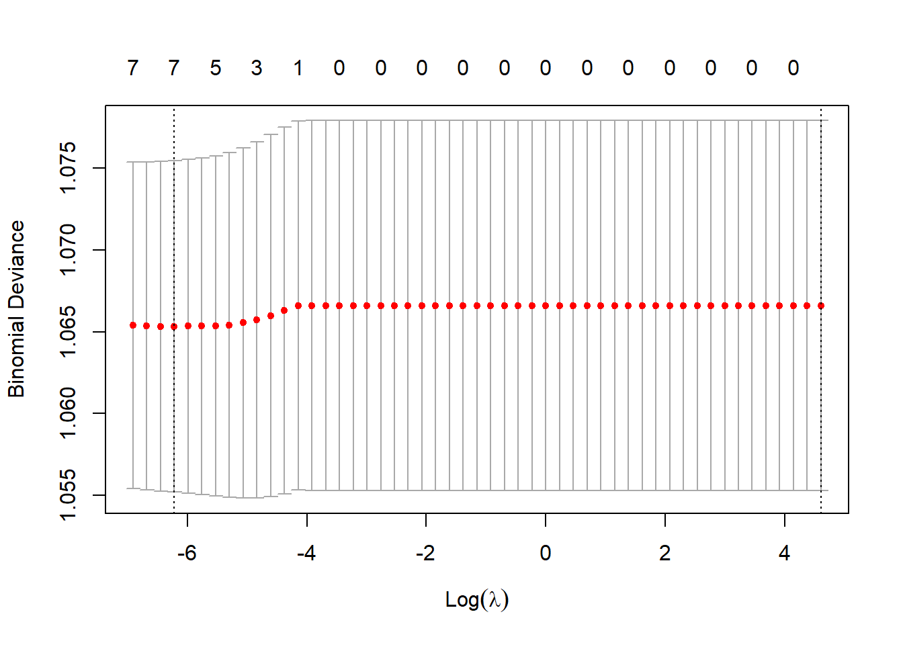
# Best
lambda_best_1week <- lasso_reg_1week$lambda.min
lambda_best_1week[1] 0.001995262lasso_model_1week <- glmnet(X,
y,
alpha = 1,
family = "binomial",
lambda = lambda_best_1week,
standardize = TRUE
)
coef(lasso_model_1week)10 x 1 sparse Matrix of class "dgCMatrix"
s0
(Intercept) -0.7702964410
sand 0.0001892698
silt .
clay -0.0055493509
ec .
ph -0.0931792803
cropping_corrigido 0.0023294818
tillage_corrigido 0.1582006929
altitute -0.0000245240
soil_corrigido 0.0319943002assess.glmnet(lasso_model_1week,
newx = X,
newy = y
)$deviance
s0
1.063336
attr(,"measure")
[1] "Binomial Deviance"
$class
s0
0.225
attr(,"measure")
[1] "Misclassification Error"
$auc
[1] 0.5445655
attr(,"measure")
[1] "AUC"
$mse
s0
0.3477321
attr(,"measure")
[1] "Mean-Squared Error"
$mae
s0
0.6957203
attr(,"measure")
[1] "Mean Absolute Error"plot(roc.glmnet(lasso_model_1week,
newx = X,
newy = factor(y)
),
type = "l"
) # produces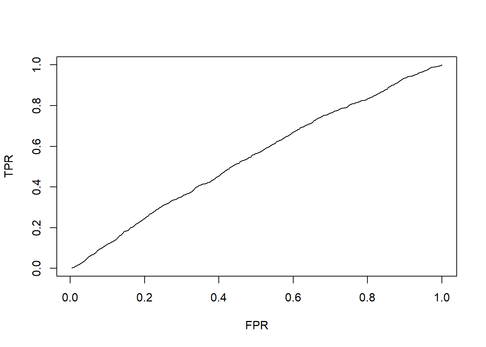
Framework modeling
pratylenchus_log = incidence %>%
filter(genus == "Pratylenchus") %>%
filter(soil_corrigido %in% c("2","5","6")) %>%
filter(region_corrigido %in% c("1","2","3","4"))
praty_log = glm(incidence ~ altitute + tillage_corrigido + cropping_corrigido + soil_corrigido + sand + clay + ph, data = pratylenchus_log,
family = binomial(link = "logit"))
check_singularity(praty_log)[1] FALSEmodel_performance(praty_log)check_model(praty_log)
#with(summary(praty_log), 1 - deviance/null.deviance)
#----------------------------------------------------------
helicotylenchus_log = incidence %>%
filter(genus == "Helicotylenchus")%>%
filter(soil_corrigido %in% c("2","5","6"))%>%
filter(region_corrigido %in% c("1","2","3","4"))
heli_log = glm(incidence ~ altitute + tillage_corrigido + cropping_corrigido + soil_corrigido + sand + clay + ph, data = helicotylenchus_log,
family = binomial(link = "logit"))
check_model(heli_log)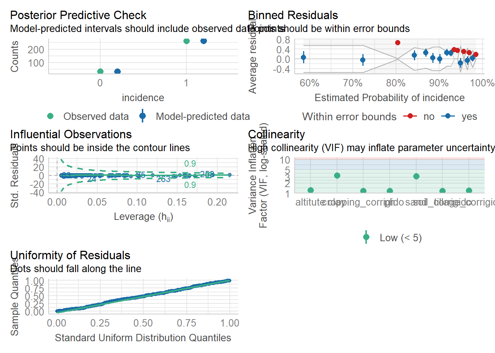
model_performance(heli_log)#----------------------------------------------------------
rotylenchulus_log = incidence %>%
filter(genus == "Rotylenchulus")%>%
filter(soil_corrigido %in% c("2","5","6"))%>%
filter(region_corrigido %in% c("1","2","3","4"))
is.na(rotylenchulus_log) samples city genus incidence soil region tillage altitute ph ec
[1,] FALSE FALSE FALSE FALSE FALSE FALSE FALSE FALSE FALSE FALSE
[2,] FALSE FALSE FALSE FALSE FALSE FALSE FALSE FALSE FALSE FALSE
[3,] FALSE FALSE FALSE FALSE FALSE FALSE FALSE FALSE FALSE FALSE
[4,] FALSE FALSE FALSE FALSE FALSE FALSE FALSE FALSE FALSE FALSE
[5,] FALSE FALSE FALSE FALSE FALSE FALSE FALSE FALSE FALSE FALSE
[6,] FALSE FALSE FALSE FALSE FALSE FALSE FALSE FALSE FALSE FALSE
[7,] FALSE FALSE FALSE FALSE FALSE FALSE FALSE FALSE FALSE FALSE
[8,] FALSE FALSE FALSE FALSE FALSE FALSE FALSE FALSE FALSE FALSE
[9,] FALSE FALSE FALSE FALSE FALSE FALSE FALSE FALSE FALSE FALSE
[10,] FALSE FALSE FALSE FALSE FALSE FALSE FALSE FALSE FALSE FALSE
[11,] FALSE FALSE FALSE FALSE FALSE FALSE FALSE FALSE FALSE FALSE
[12,] FALSE FALSE FALSE FALSE FALSE FALSE FALSE FALSE FALSE FALSE
[13,] FALSE FALSE FALSE FALSE FALSE FALSE FALSE FALSE FALSE FALSE
[14,] FALSE FALSE FALSE FALSE FALSE FALSE FALSE FALSE FALSE FALSE
[15,] FALSE FALSE FALSE FALSE FALSE FALSE FALSE FALSE FALSE FALSE
[16,] FALSE FALSE FALSE FALSE FALSE FALSE FALSE FALSE FALSE FALSE
[17,] FALSE FALSE FALSE FALSE FALSE FALSE FALSE FALSE FALSE FALSE
[18,] FALSE FALSE FALSE FALSE FALSE FALSE FALSE FALSE FALSE FALSE
[19,] FALSE FALSE FALSE FALSE FALSE FALSE FALSE FALSE FALSE FALSE
[20,] FALSE FALSE FALSE FALSE FALSE FALSE FALSE FALSE FALSE FALSE
[21,] FALSE FALSE FALSE FALSE FALSE FALSE FALSE FALSE FALSE FALSE
[22,] FALSE FALSE FALSE FALSE FALSE FALSE FALSE FALSE FALSE FALSE
[23,] FALSE FALSE FALSE FALSE FALSE FALSE FALSE FALSE FALSE FALSE
[24,] FALSE FALSE FALSE FALSE FALSE FALSE FALSE FALSE FALSE FALSE
[25,] FALSE FALSE FALSE FALSE FALSE FALSE FALSE FALSE FALSE FALSE
[26,] FALSE FALSE FALSE FALSE FALSE FALSE FALSE FALSE FALSE FALSE
[27,] FALSE FALSE FALSE FALSE FALSE FALSE FALSE FALSE FALSE FALSE
[28,] FALSE FALSE FALSE FALSE FALSE FALSE FALSE FALSE FALSE FALSE
[29,] FALSE FALSE FALSE FALSE FALSE FALSE FALSE FALSE FALSE FALSE
[30,] FALSE FALSE FALSE FALSE FALSE FALSE FALSE FALSE FALSE FALSE
[31,] FALSE FALSE FALSE FALSE FALSE FALSE FALSE FALSE FALSE FALSE
[32,] FALSE FALSE FALSE FALSE FALSE FALSE FALSE FALSE FALSE FALSE
[33,] FALSE FALSE FALSE FALSE FALSE FALSE FALSE FALSE FALSE FALSE
[34,] FALSE FALSE FALSE FALSE FALSE FALSE FALSE FALSE FALSE FALSE
[35,] FALSE FALSE FALSE FALSE FALSE FALSE FALSE FALSE FALSE FALSE
[36,] FALSE FALSE FALSE FALSE FALSE FALSE FALSE FALSE FALSE FALSE
[37,] FALSE FALSE FALSE FALSE FALSE FALSE FALSE FALSE FALSE FALSE
[38,] FALSE FALSE FALSE FALSE FALSE FALSE FALSE FALSE FALSE FALSE
[39,] FALSE FALSE FALSE FALSE FALSE FALSE FALSE FALSE FALSE FALSE
[40,] FALSE FALSE FALSE FALSE FALSE FALSE FALSE FALSE FALSE FALSE
[41,] FALSE FALSE FALSE FALSE FALSE FALSE FALSE FALSE FALSE FALSE
[42,] FALSE FALSE FALSE FALSE FALSE FALSE FALSE FALSE FALSE FALSE
[43,] FALSE FALSE FALSE FALSE FALSE FALSE FALSE FALSE FALSE FALSE
[44,] FALSE FALSE FALSE FALSE FALSE FALSE FALSE FALSE FALSE FALSE
[45,] FALSE FALSE FALSE FALSE FALSE FALSE FALSE FALSE FALSE FALSE
[46,] FALSE FALSE FALSE FALSE FALSE FALSE FALSE FALSE FALSE FALSE
[47,] FALSE FALSE FALSE FALSE FALSE FALSE FALSE FALSE FALSE FALSE
[48,] FALSE FALSE FALSE FALSE FALSE FALSE FALSE FALSE FALSE FALSE
[49,] FALSE FALSE FALSE FALSE FALSE FALSE FALSE FALSE FALSE FALSE
[50,] FALSE FALSE FALSE FALSE FALSE FALSE FALSE FALSE FALSE FALSE
[51,] FALSE FALSE FALSE FALSE FALSE FALSE FALSE FALSE FALSE FALSE
[52,] FALSE FALSE FALSE FALSE FALSE FALSE FALSE FALSE FALSE FALSE
[53,] FALSE FALSE FALSE FALSE FALSE FALSE FALSE FALSE FALSE FALSE
[54,] FALSE FALSE FALSE FALSE FALSE FALSE FALSE FALSE FALSE FALSE
[55,] FALSE FALSE FALSE FALSE FALSE FALSE FALSE FALSE FALSE FALSE
[56,] FALSE FALSE FALSE FALSE FALSE FALSE FALSE FALSE FALSE FALSE
[57,] FALSE FALSE FALSE FALSE FALSE FALSE FALSE FALSE FALSE FALSE
[58,] FALSE FALSE FALSE FALSE FALSE FALSE FALSE FALSE FALSE FALSE
[59,] FALSE FALSE FALSE FALSE FALSE FALSE FALSE FALSE FALSE FALSE
[60,] FALSE FALSE FALSE FALSE FALSE FALSE FALSE FALSE FALSE FALSE
[61,] FALSE FALSE FALSE FALSE FALSE FALSE FALSE FALSE FALSE FALSE
[62,] FALSE FALSE FALSE FALSE FALSE FALSE FALSE FALSE FALSE FALSE
[63,] FALSE FALSE FALSE FALSE FALSE FALSE FALSE FALSE FALSE FALSE
[64,] FALSE FALSE FALSE FALSE FALSE FALSE FALSE FALSE FALSE FALSE
[65,] FALSE FALSE FALSE FALSE FALSE FALSE FALSE FALSE FALSE FALSE
[66,] FALSE FALSE FALSE FALSE FALSE FALSE FALSE FALSE FALSE FALSE
[67,] FALSE FALSE FALSE FALSE FALSE FALSE FALSE FALSE FALSE FALSE
[68,] FALSE FALSE FALSE FALSE FALSE FALSE FALSE FALSE FALSE FALSE
[69,] FALSE FALSE FALSE FALSE FALSE FALSE FALSE FALSE FALSE FALSE
[70,] FALSE FALSE FALSE FALSE FALSE FALSE FALSE FALSE FALSE FALSE
[71,] FALSE FALSE FALSE FALSE FALSE FALSE FALSE FALSE FALSE FALSE
[72,] FALSE FALSE FALSE FALSE FALSE FALSE FALSE FALSE FALSE FALSE
[73,] FALSE FALSE FALSE FALSE FALSE FALSE FALSE FALSE FALSE FALSE
[74,] FALSE FALSE FALSE FALSE FALSE FALSE FALSE FALSE FALSE FALSE
[75,] FALSE FALSE FALSE FALSE FALSE FALSE FALSE FALSE FALSE FALSE
[76,] FALSE FALSE FALSE FALSE FALSE FALSE FALSE FALSE FALSE FALSE
[77,] FALSE FALSE FALSE FALSE FALSE FALSE FALSE FALSE FALSE FALSE
[78,] FALSE FALSE FALSE FALSE FALSE FALSE FALSE FALSE FALSE FALSE
[79,] FALSE FALSE FALSE FALSE FALSE FALSE FALSE FALSE FALSE FALSE
[80,] FALSE FALSE FALSE FALSE FALSE FALSE FALSE FALSE FALSE FALSE
[81,] FALSE FALSE FALSE FALSE FALSE FALSE FALSE FALSE FALSE FALSE
[82,] FALSE FALSE FALSE FALSE FALSE FALSE FALSE FALSE FALSE FALSE
[83,] FALSE FALSE FALSE FALSE FALSE FALSE FALSE FALSE FALSE FALSE
[84,] FALSE FALSE FALSE FALSE FALSE FALSE FALSE FALSE FALSE FALSE
[85,] FALSE FALSE FALSE FALSE FALSE FALSE FALSE FALSE FALSE FALSE
[86,] FALSE FALSE FALSE FALSE FALSE FALSE FALSE FALSE FALSE FALSE
[87,] FALSE FALSE FALSE FALSE FALSE FALSE FALSE FALSE FALSE FALSE
[88,] FALSE FALSE FALSE FALSE FALSE FALSE FALSE FALSE FALSE FALSE
[89,] FALSE FALSE FALSE FALSE FALSE FALSE FALSE FALSE FALSE FALSE
[90,] FALSE FALSE FALSE FALSE FALSE FALSE FALSE FALSE FALSE FALSE
[91,] FALSE FALSE FALSE FALSE FALSE FALSE FALSE FALSE FALSE FALSE
[92,] FALSE FALSE FALSE FALSE FALSE FALSE FALSE FALSE FALSE FALSE
[93,] FALSE FALSE FALSE FALSE FALSE FALSE FALSE FALSE FALSE FALSE
[94,] FALSE FALSE FALSE FALSE FALSE FALSE FALSE FALSE FALSE FALSE
[95,] FALSE FALSE FALSE FALSE FALSE FALSE FALSE FALSE FALSE FALSE
[96,] FALSE FALSE FALSE FALSE FALSE FALSE FALSE FALSE FALSE FALSE
[97,] FALSE FALSE FALSE FALSE FALSE FALSE FALSE FALSE FALSE FALSE
[98,] FALSE FALSE FALSE FALSE FALSE FALSE FALSE FALSE FALSE FALSE
[99,] FALSE FALSE FALSE FALSE FALSE FALSE FALSE FALSE FALSE FALSE
[100,] FALSE FALSE FALSE FALSE FALSE FALSE FALSE FALSE FALSE FALSE
[101,] FALSE FALSE FALSE FALSE FALSE FALSE FALSE FALSE FALSE FALSE
[102,] FALSE FALSE FALSE FALSE FALSE FALSE FALSE FALSE FALSE FALSE
[103,] FALSE FALSE FALSE FALSE FALSE FALSE FALSE FALSE FALSE FALSE
[104,] FALSE FALSE FALSE FALSE FALSE FALSE FALSE FALSE FALSE FALSE
[105,] FALSE FALSE FALSE FALSE FALSE FALSE FALSE FALSE FALSE FALSE
[106,] FALSE FALSE FALSE FALSE FALSE FALSE FALSE FALSE FALSE FALSE
[107,] FALSE FALSE FALSE FALSE FALSE FALSE FALSE FALSE FALSE FALSE
[108,] FALSE FALSE FALSE FALSE FALSE FALSE FALSE FALSE FALSE FALSE
[109,] FALSE FALSE FALSE FALSE FALSE FALSE FALSE FALSE FALSE FALSE
[110,] FALSE FALSE FALSE FALSE FALSE FALSE FALSE FALSE FALSE FALSE
[111,] FALSE FALSE FALSE FALSE FALSE FALSE FALSE FALSE FALSE FALSE
[112,] FALSE FALSE FALSE FALSE FALSE FALSE FALSE FALSE FALSE FALSE
[113,] FALSE FALSE FALSE FALSE FALSE FALSE FALSE FALSE FALSE FALSE
[114,] FALSE FALSE FALSE FALSE FALSE FALSE FALSE FALSE FALSE FALSE
[115,] FALSE FALSE FALSE FALSE FALSE FALSE FALSE FALSE FALSE FALSE
[116,] FALSE FALSE FALSE FALSE FALSE FALSE FALSE FALSE FALSE FALSE
[117,] FALSE FALSE FALSE FALSE FALSE FALSE FALSE FALSE FALSE FALSE
[118,] FALSE FALSE FALSE FALSE FALSE FALSE FALSE FALSE FALSE FALSE
[119,] FALSE FALSE FALSE FALSE FALSE FALSE FALSE FALSE FALSE FALSE
[120,] FALSE FALSE FALSE FALSE FALSE FALSE FALSE FALSE FALSE FALSE
[121,] FALSE FALSE FALSE FALSE FALSE FALSE FALSE FALSE FALSE FALSE
[122,] FALSE FALSE FALSE FALSE FALSE FALSE FALSE FALSE FALSE FALSE
[123,] FALSE FALSE FALSE FALSE FALSE FALSE FALSE FALSE FALSE FALSE
[124,] FALSE FALSE FALSE FALSE FALSE FALSE FALSE FALSE FALSE FALSE
[125,] FALSE FALSE FALSE FALSE FALSE FALSE FALSE FALSE FALSE FALSE
[126,] FALSE FALSE FALSE FALSE FALSE FALSE FALSE FALSE FALSE FALSE
[127,] FALSE FALSE FALSE FALSE FALSE FALSE FALSE FALSE FALSE FALSE
[128,] FALSE FALSE FALSE FALSE FALSE FALSE FALSE FALSE FALSE FALSE
[129,] FALSE FALSE FALSE FALSE FALSE FALSE FALSE FALSE FALSE FALSE
[130,] FALSE FALSE FALSE FALSE FALSE FALSE FALSE FALSE FALSE FALSE
[131,] FALSE FALSE FALSE FALSE FALSE FALSE FALSE FALSE FALSE FALSE
[132,] FALSE FALSE FALSE FALSE FALSE FALSE FALSE FALSE FALSE FALSE
[133,] FALSE FALSE FALSE FALSE FALSE FALSE FALSE FALSE FALSE FALSE
[134,] FALSE FALSE FALSE FALSE FALSE FALSE FALSE FALSE FALSE FALSE
[135,] FALSE FALSE FALSE FALSE FALSE FALSE FALSE FALSE FALSE FALSE
[136,] FALSE FALSE FALSE FALSE FALSE FALSE FALSE FALSE FALSE FALSE
[137,] FALSE FALSE FALSE FALSE FALSE FALSE FALSE FALSE FALSE FALSE
[138,] FALSE FALSE FALSE FALSE FALSE FALSE FALSE FALSE FALSE FALSE
[139,] FALSE FALSE FALSE FALSE FALSE FALSE FALSE FALSE FALSE FALSE
[140,] FALSE FALSE FALSE FALSE FALSE FALSE FALSE FALSE FALSE FALSE
[141,] FALSE FALSE FALSE FALSE FALSE FALSE FALSE FALSE FALSE FALSE
[142,] FALSE FALSE FALSE FALSE FALSE FALSE FALSE FALSE FALSE FALSE
[143,] FALSE FALSE FALSE FALSE FALSE FALSE FALSE FALSE FALSE FALSE
[144,] FALSE FALSE FALSE FALSE FALSE FALSE FALSE FALSE FALSE FALSE
[145,] FALSE FALSE FALSE FALSE FALSE FALSE FALSE FALSE FALSE FALSE
[146,] FALSE FALSE FALSE FALSE FALSE FALSE FALSE FALSE FALSE FALSE
[147,] FALSE FALSE FALSE FALSE FALSE FALSE FALSE FALSE FALSE FALSE
[148,] FALSE FALSE FALSE FALSE FALSE FALSE FALSE FALSE FALSE FALSE
[149,] FALSE FALSE FALSE FALSE FALSE FALSE FALSE FALSE FALSE FALSE
[150,] FALSE FALSE FALSE FALSE FALSE FALSE FALSE FALSE FALSE FALSE
[151,] FALSE FALSE FALSE FALSE FALSE FALSE FALSE FALSE FALSE FALSE
[152,] FALSE FALSE FALSE FALSE FALSE FALSE FALSE FALSE FALSE FALSE
[153,] FALSE FALSE FALSE FALSE FALSE FALSE FALSE FALSE FALSE FALSE
[154,] FALSE FALSE FALSE FALSE FALSE FALSE FALSE FALSE FALSE FALSE
[155,] FALSE FALSE FALSE FALSE FALSE FALSE FALSE FALSE FALSE FALSE
[156,] FALSE FALSE FALSE FALSE FALSE FALSE FALSE FALSE FALSE FALSE
[157,] FALSE FALSE FALSE FALSE FALSE FALSE FALSE FALSE FALSE FALSE
[158,] FALSE FALSE FALSE FALSE FALSE FALSE FALSE FALSE FALSE FALSE
[159,] FALSE FALSE FALSE FALSE FALSE FALSE FALSE FALSE FALSE FALSE
[160,] FALSE FALSE FALSE FALSE FALSE FALSE FALSE FALSE FALSE FALSE
[161,] FALSE FALSE FALSE FALSE FALSE FALSE FALSE FALSE FALSE FALSE
[162,] FALSE FALSE FALSE FALSE FALSE FALSE FALSE FALSE FALSE FALSE
[163,] FALSE FALSE FALSE FALSE FALSE FALSE FALSE FALSE FALSE FALSE
[164,] FALSE FALSE FALSE FALSE FALSE FALSE FALSE FALSE FALSE FALSE
[165,] FALSE FALSE FALSE FALSE FALSE FALSE FALSE FALSE FALSE FALSE
[166,] FALSE FALSE FALSE FALSE FALSE FALSE FALSE FALSE FALSE FALSE
[167,] FALSE FALSE FALSE FALSE FALSE FALSE FALSE FALSE FALSE FALSE
[168,] FALSE FALSE FALSE FALSE FALSE FALSE FALSE FALSE FALSE FALSE
[169,] FALSE FALSE FALSE FALSE FALSE FALSE FALSE FALSE FALSE FALSE
[170,] FALSE FALSE FALSE FALSE FALSE FALSE FALSE FALSE FALSE FALSE
[171,] FALSE FALSE FALSE FALSE FALSE FALSE FALSE FALSE FALSE FALSE
[172,] FALSE FALSE FALSE FALSE FALSE FALSE FALSE FALSE FALSE FALSE
[173,] FALSE FALSE FALSE FALSE FALSE FALSE FALSE FALSE FALSE FALSE
[174,] FALSE FALSE FALSE FALSE FALSE FALSE FALSE FALSE FALSE FALSE
[175,] FALSE FALSE FALSE FALSE FALSE FALSE FALSE FALSE FALSE FALSE
[176,] FALSE FALSE FALSE FALSE FALSE FALSE FALSE FALSE FALSE FALSE
[177,] FALSE FALSE FALSE FALSE FALSE FALSE FALSE FALSE FALSE FALSE
[178,] FALSE FALSE FALSE FALSE FALSE FALSE FALSE FALSE FALSE FALSE
[179,] FALSE FALSE FALSE FALSE FALSE FALSE FALSE FALSE FALSE FALSE
[180,] FALSE FALSE FALSE FALSE FALSE FALSE FALSE FALSE FALSE FALSE
[181,] FALSE FALSE FALSE FALSE FALSE FALSE FALSE FALSE FALSE FALSE
[182,] FALSE FALSE FALSE FALSE FALSE FALSE FALSE FALSE FALSE FALSE
[183,] FALSE FALSE FALSE FALSE FALSE FALSE FALSE FALSE FALSE FALSE
[184,] FALSE FALSE FALSE FALSE FALSE FALSE FALSE FALSE FALSE FALSE
[185,] FALSE FALSE FALSE FALSE FALSE FALSE FALSE FALSE FALSE FALSE
[186,] FALSE FALSE FALSE FALSE FALSE FALSE FALSE FALSE FALSE FALSE
[187,] FALSE FALSE FALSE FALSE FALSE FALSE FALSE FALSE FALSE FALSE
[188,] FALSE FALSE FALSE FALSE FALSE FALSE FALSE FALSE FALSE FALSE
[189,] FALSE FALSE FALSE FALSE FALSE FALSE FALSE FALSE FALSE FALSE
[190,] FALSE FALSE FALSE FALSE FALSE FALSE FALSE FALSE FALSE FALSE
[191,] FALSE FALSE FALSE FALSE FALSE FALSE FALSE FALSE FALSE FALSE
[192,] FALSE FALSE FALSE FALSE FALSE FALSE FALSE FALSE FALSE FALSE
[193,] FALSE FALSE FALSE FALSE FALSE FALSE FALSE FALSE FALSE FALSE
[194,] FALSE FALSE FALSE FALSE FALSE FALSE FALSE FALSE FALSE FALSE
[195,] FALSE FALSE FALSE FALSE FALSE FALSE FALSE FALSE FALSE FALSE
[196,] FALSE FALSE FALSE FALSE FALSE FALSE FALSE FALSE FALSE FALSE
[197,] FALSE FALSE FALSE FALSE FALSE FALSE FALSE FALSE FALSE FALSE
[198,] FALSE FALSE FALSE FALSE FALSE FALSE FALSE FALSE FALSE FALSE
[199,] FALSE FALSE FALSE FALSE FALSE FALSE FALSE FALSE FALSE FALSE
[200,] FALSE FALSE FALSE FALSE FALSE FALSE FALSE FALSE FALSE FALSE
[201,] FALSE FALSE FALSE FALSE FALSE FALSE FALSE FALSE FALSE FALSE
[202,] FALSE FALSE FALSE FALSE FALSE FALSE FALSE FALSE FALSE FALSE
[203,] FALSE FALSE FALSE FALSE FALSE FALSE FALSE FALSE FALSE FALSE
[204,] FALSE FALSE FALSE FALSE FALSE FALSE FALSE FALSE FALSE FALSE
[205,] FALSE FALSE FALSE FALSE FALSE FALSE FALSE FALSE FALSE FALSE
[206,] FALSE FALSE FALSE FALSE FALSE FALSE FALSE FALSE FALSE FALSE
[207,] FALSE FALSE FALSE FALSE FALSE FALSE FALSE FALSE FALSE FALSE
[208,] FALSE FALSE FALSE FALSE FALSE FALSE FALSE FALSE FALSE FALSE
[209,] FALSE FALSE FALSE FALSE FALSE FALSE FALSE FALSE FALSE FALSE
[210,] FALSE FALSE FALSE FALSE FALSE FALSE FALSE FALSE FALSE FALSE
[211,] FALSE FALSE FALSE FALSE FALSE FALSE FALSE FALSE FALSE FALSE
[212,] FALSE FALSE FALSE FALSE FALSE FALSE FALSE FALSE FALSE FALSE
[213,] FALSE FALSE FALSE FALSE FALSE FALSE FALSE FALSE FALSE FALSE
[214,] FALSE FALSE FALSE FALSE FALSE FALSE FALSE FALSE FALSE FALSE
[215,] FALSE FALSE FALSE FALSE FALSE FALSE FALSE FALSE FALSE FALSE
[216,] FALSE FALSE FALSE FALSE FALSE FALSE FALSE FALSE FALSE FALSE
[217,] FALSE FALSE FALSE FALSE FALSE FALSE FALSE FALSE FALSE FALSE
[218,] FALSE FALSE FALSE FALSE FALSE FALSE FALSE FALSE FALSE FALSE
[219,] FALSE FALSE FALSE FALSE FALSE FALSE FALSE FALSE FALSE FALSE
[220,] FALSE FALSE FALSE FALSE FALSE FALSE FALSE FALSE FALSE FALSE
[221,] FALSE FALSE FALSE FALSE FALSE FALSE FALSE FALSE FALSE FALSE
[222,] FALSE FALSE FALSE FALSE FALSE FALSE FALSE FALSE FALSE FALSE
[223,] FALSE FALSE FALSE FALSE FALSE FALSE FALSE FALSE FALSE FALSE
[224,] FALSE FALSE FALSE FALSE FALSE FALSE FALSE FALSE FALSE FALSE
[225,] FALSE FALSE FALSE FALSE FALSE FALSE FALSE FALSE FALSE FALSE
[226,] FALSE FALSE FALSE FALSE FALSE FALSE FALSE FALSE FALSE FALSE
[227,] FALSE FALSE FALSE FALSE FALSE FALSE FALSE FALSE FALSE FALSE
[228,] FALSE FALSE FALSE FALSE FALSE FALSE FALSE FALSE FALSE FALSE
[229,] FALSE FALSE FALSE FALSE FALSE FALSE FALSE FALSE FALSE FALSE
[230,] FALSE FALSE FALSE FALSE FALSE FALSE FALSE FALSE FALSE FALSE
[231,] FALSE FALSE FALSE FALSE FALSE FALSE FALSE FALSE FALSE FALSE
[232,] FALSE FALSE FALSE FALSE FALSE FALSE FALSE FALSE FALSE FALSE
[233,] FALSE FALSE FALSE FALSE FALSE FALSE FALSE FALSE FALSE FALSE
[234,] FALSE FALSE FALSE FALSE FALSE FALSE FALSE FALSE FALSE FALSE
[235,] FALSE FALSE FALSE FALSE FALSE FALSE FALSE FALSE FALSE FALSE
[236,] FALSE FALSE FALSE FALSE FALSE FALSE FALSE FALSE FALSE FALSE
[237,] FALSE FALSE FALSE FALSE FALSE FALSE FALSE FALSE FALSE FALSE
[238,] FALSE FALSE FALSE FALSE FALSE FALSE FALSE FALSE FALSE FALSE
[239,] FALSE FALSE FALSE FALSE FALSE FALSE FALSE FALSE FALSE FALSE
[240,] FALSE FALSE FALSE FALSE FALSE FALSE FALSE FALSE FALSE FALSE
[241,] FALSE FALSE FALSE FALSE FALSE FALSE FALSE FALSE FALSE FALSE
[242,] FALSE FALSE FALSE FALSE FALSE FALSE FALSE FALSE FALSE FALSE
[243,] FALSE FALSE FALSE FALSE FALSE FALSE FALSE FALSE FALSE FALSE
[244,] FALSE FALSE FALSE FALSE FALSE FALSE FALSE FALSE FALSE FALSE
[245,] FALSE FALSE FALSE FALSE FALSE FALSE FALSE FALSE FALSE FALSE
[246,] FALSE FALSE FALSE FALSE FALSE FALSE FALSE FALSE FALSE FALSE
[247,] FALSE FALSE FALSE FALSE FALSE FALSE FALSE FALSE FALSE FALSE
[248,] FALSE FALSE FALSE FALSE FALSE FALSE FALSE FALSE FALSE FALSE
[249,] FALSE FALSE FALSE FALSE FALSE FALSE FALSE FALSE FALSE FALSE
[250,] FALSE FALSE FALSE FALSE FALSE FALSE FALSE FALSE FALSE FALSE
[251,] FALSE FALSE FALSE FALSE FALSE FALSE FALSE FALSE FALSE FALSE
[252,] FALSE FALSE FALSE FALSE FALSE FALSE FALSE FALSE FALSE FALSE
[253,] FALSE FALSE FALSE FALSE FALSE FALSE FALSE FALSE FALSE FALSE
[254,] FALSE FALSE FALSE FALSE FALSE FALSE FALSE FALSE FALSE FALSE
[255,] FALSE FALSE FALSE FALSE FALSE FALSE FALSE FALSE FALSE FALSE
[256,] FALSE FALSE FALSE FALSE FALSE FALSE FALSE FALSE FALSE FALSE
[257,] FALSE FALSE FALSE FALSE FALSE FALSE FALSE FALSE FALSE FALSE
[258,] FALSE FALSE FALSE FALSE FALSE FALSE FALSE FALSE FALSE FALSE
[259,] FALSE FALSE FALSE FALSE FALSE FALSE FALSE FALSE FALSE FALSE
[260,] FALSE FALSE FALSE FALSE FALSE FALSE FALSE FALSE FALSE FALSE
[261,] FALSE FALSE FALSE FALSE FALSE FALSE FALSE FALSE FALSE FALSE
[262,] FALSE FALSE FALSE FALSE FALSE FALSE FALSE FALSE FALSE FALSE
[263,] FALSE FALSE FALSE FALSE FALSE FALSE FALSE FALSE FALSE FALSE
[264,] FALSE FALSE FALSE FALSE FALSE FALSE FALSE FALSE FALSE FALSE
[265,] FALSE FALSE FALSE FALSE FALSE FALSE FALSE FALSE FALSE FALSE
[266,] FALSE FALSE FALSE FALSE FALSE FALSE FALSE FALSE FALSE FALSE
[267,] FALSE FALSE FALSE FALSE FALSE FALSE FALSE FALSE FALSE FALSE
[268,] FALSE FALSE FALSE FALSE FALSE FALSE FALSE FALSE FALSE FALSE
[269,] FALSE FALSE FALSE FALSE FALSE FALSE FALSE FALSE FALSE FALSE
[270,] FALSE FALSE FALSE FALSE FALSE FALSE FALSE FALSE FALSE FALSE
[271,] FALSE FALSE FALSE FALSE FALSE FALSE FALSE FALSE FALSE FALSE
[272,] FALSE FALSE FALSE FALSE FALSE FALSE FALSE FALSE FALSE FALSE
[273,] FALSE FALSE FALSE FALSE FALSE FALSE FALSE FALSE FALSE FALSE
[274,] FALSE FALSE FALSE FALSE FALSE FALSE FALSE FALSE FALSE FALSE
[275,] FALSE FALSE FALSE FALSE FALSE FALSE FALSE FALSE FALSE FALSE
[276,] FALSE FALSE FALSE FALSE FALSE FALSE FALSE FALSE FALSE FALSE
[277,] FALSE FALSE FALSE FALSE FALSE FALSE FALSE FALSE FALSE FALSE
[278,] FALSE FALSE FALSE FALSE FALSE FALSE FALSE FALSE FALSE FALSE
[279,] FALSE FALSE FALSE FALSE FALSE FALSE FALSE FALSE FALSE FALSE
[280,] FALSE FALSE FALSE FALSE FALSE FALSE FALSE FALSE FALSE FALSE
[281,] FALSE FALSE FALSE FALSE FALSE FALSE FALSE FALSE FALSE FALSE
[282,] FALSE FALSE FALSE FALSE FALSE FALSE FALSE FALSE FALSE FALSE
[283,] FALSE FALSE FALSE FALSE FALSE FALSE FALSE FALSE FALSE FALSE
[284,] FALSE FALSE FALSE FALSE FALSE FALSE FALSE FALSE FALSE FALSE
[285,] FALSE FALSE FALSE FALSE FALSE FALSE FALSE FALSE FALSE FALSE
[286,] FALSE FALSE FALSE FALSE FALSE FALSE FALSE FALSE FALSE FALSE
[287,] FALSE FALSE FALSE FALSE FALSE FALSE FALSE FALSE FALSE FALSE
[288,] FALSE FALSE FALSE FALSE FALSE FALSE FALSE FALSE FALSE FALSE
[289,] FALSE FALSE FALSE FALSE FALSE FALSE FALSE FALSE FALSE FALSE
[290,] FALSE FALSE FALSE FALSE FALSE FALSE FALSE FALSE FALSE FALSE
[291,] FALSE FALSE FALSE FALSE FALSE FALSE FALSE FALSE FALSE FALSE
[292,] FALSE FALSE FALSE FALSE FALSE FALSE FALSE FALSE FALSE FALSE
[293,] FALSE FALSE FALSE FALSE FALSE FALSE FALSE FALSE FALSE FALSE
cropping clay sand silt latitude longitude soil_corrigido
[1,] FALSE FALSE FALSE FALSE FALSE FALSE FALSE
[2,] FALSE FALSE FALSE FALSE FALSE FALSE FALSE
[3,] FALSE FALSE FALSE FALSE FALSE FALSE FALSE
[4,] FALSE FALSE FALSE FALSE FALSE FALSE FALSE
[5,] FALSE FALSE FALSE FALSE FALSE FALSE FALSE
[6,] FALSE FALSE FALSE FALSE FALSE FALSE FALSE
[7,] FALSE FALSE FALSE FALSE FALSE FALSE FALSE
[8,] FALSE FALSE FALSE FALSE FALSE FALSE FALSE
[9,] FALSE FALSE FALSE FALSE FALSE FALSE FALSE
[10,] FALSE FALSE FALSE FALSE FALSE FALSE FALSE
[11,] FALSE FALSE FALSE FALSE FALSE FALSE FALSE
[12,] FALSE FALSE FALSE FALSE FALSE FALSE FALSE
[13,] FALSE FALSE FALSE FALSE FALSE FALSE FALSE
[14,] FALSE FALSE FALSE FALSE FALSE FALSE FALSE
[15,] FALSE FALSE FALSE FALSE FALSE FALSE FALSE
[16,] FALSE FALSE FALSE FALSE FALSE FALSE FALSE
[17,] FALSE FALSE FALSE FALSE FALSE FALSE FALSE
[18,] FALSE FALSE FALSE FALSE FALSE FALSE FALSE
[19,] FALSE FALSE FALSE FALSE FALSE FALSE FALSE
[20,] FALSE FALSE FALSE FALSE FALSE FALSE FALSE
[21,] FALSE FALSE FALSE FALSE FALSE FALSE FALSE
[22,] FALSE FALSE FALSE FALSE FALSE FALSE FALSE
[23,] FALSE FALSE FALSE FALSE FALSE FALSE FALSE
[24,] FALSE FALSE FALSE FALSE FALSE FALSE FALSE
[25,] FALSE FALSE FALSE FALSE FALSE FALSE FALSE
[26,] FALSE FALSE FALSE FALSE FALSE FALSE FALSE
[27,] FALSE FALSE FALSE FALSE FALSE FALSE FALSE
[28,] FALSE FALSE FALSE FALSE FALSE FALSE FALSE
[29,] FALSE FALSE FALSE FALSE FALSE FALSE FALSE
[30,] FALSE FALSE FALSE FALSE FALSE FALSE FALSE
[31,] FALSE FALSE FALSE FALSE FALSE FALSE FALSE
[32,] FALSE FALSE FALSE FALSE FALSE FALSE FALSE
[33,] FALSE FALSE FALSE FALSE FALSE FALSE FALSE
[34,] FALSE FALSE FALSE FALSE FALSE FALSE FALSE
[35,] FALSE FALSE FALSE FALSE FALSE FALSE FALSE
[36,] FALSE FALSE FALSE FALSE FALSE FALSE FALSE
[37,] FALSE FALSE FALSE FALSE FALSE FALSE FALSE
[38,] FALSE FALSE FALSE FALSE FALSE FALSE FALSE
[39,] FALSE FALSE FALSE FALSE FALSE FALSE FALSE
[40,] FALSE FALSE FALSE FALSE FALSE FALSE FALSE
[41,] FALSE FALSE FALSE FALSE FALSE FALSE FALSE
[42,] FALSE FALSE FALSE FALSE FALSE FALSE FALSE
[43,] FALSE FALSE FALSE FALSE FALSE FALSE FALSE
[44,] FALSE FALSE FALSE FALSE FALSE FALSE FALSE
[45,] FALSE FALSE FALSE FALSE FALSE FALSE FALSE
[46,] FALSE FALSE FALSE FALSE FALSE FALSE FALSE
[47,] FALSE FALSE FALSE FALSE FALSE FALSE FALSE
[48,] FALSE FALSE FALSE FALSE FALSE FALSE FALSE
[49,] FALSE FALSE FALSE FALSE FALSE FALSE FALSE
[50,] FALSE FALSE FALSE FALSE FALSE FALSE FALSE
[51,] FALSE FALSE FALSE FALSE FALSE FALSE FALSE
[52,] FALSE FALSE FALSE FALSE FALSE FALSE FALSE
[53,] FALSE FALSE FALSE FALSE FALSE FALSE FALSE
[54,] FALSE FALSE FALSE FALSE FALSE FALSE FALSE
[55,] FALSE FALSE FALSE FALSE FALSE FALSE FALSE
[56,] FALSE FALSE FALSE FALSE FALSE FALSE FALSE
[57,] FALSE FALSE FALSE FALSE FALSE FALSE FALSE
[58,] FALSE FALSE FALSE FALSE FALSE FALSE FALSE
[59,] FALSE FALSE FALSE FALSE FALSE FALSE FALSE
[60,] FALSE FALSE FALSE FALSE FALSE FALSE FALSE
[61,] FALSE FALSE FALSE FALSE FALSE FALSE FALSE
[62,] FALSE FALSE FALSE FALSE FALSE FALSE FALSE
[63,] FALSE FALSE FALSE FALSE FALSE FALSE FALSE
[64,] FALSE FALSE FALSE FALSE FALSE FALSE FALSE
[65,] FALSE FALSE FALSE FALSE FALSE FALSE FALSE
[66,] FALSE FALSE FALSE FALSE FALSE FALSE FALSE
[67,] FALSE FALSE FALSE FALSE FALSE FALSE FALSE
[68,] FALSE FALSE FALSE FALSE FALSE FALSE FALSE
[69,] FALSE FALSE FALSE FALSE FALSE FALSE FALSE
[70,] FALSE FALSE FALSE FALSE FALSE FALSE FALSE
[71,] FALSE FALSE FALSE FALSE FALSE FALSE FALSE
[72,] FALSE FALSE FALSE FALSE FALSE FALSE FALSE
[73,] FALSE FALSE FALSE FALSE FALSE FALSE FALSE
[74,] FALSE FALSE FALSE FALSE FALSE FALSE FALSE
[75,] FALSE FALSE FALSE FALSE FALSE FALSE FALSE
[76,] FALSE FALSE FALSE FALSE FALSE FALSE FALSE
[77,] FALSE FALSE FALSE FALSE FALSE FALSE FALSE
[78,] FALSE FALSE FALSE FALSE FALSE FALSE FALSE
[79,] FALSE FALSE FALSE FALSE FALSE FALSE FALSE
[80,] FALSE FALSE FALSE FALSE FALSE FALSE FALSE
[81,] FALSE FALSE FALSE FALSE FALSE FALSE FALSE
[82,] FALSE FALSE FALSE FALSE FALSE FALSE FALSE
[83,] FALSE FALSE FALSE FALSE FALSE FALSE FALSE
[84,] FALSE FALSE FALSE FALSE FALSE FALSE FALSE
[85,] FALSE FALSE FALSE FALSE FALSE FALSE FALSE
[86,] FALSE FALSE FALSE FALSE FALSE FALSE FALSE
[87,] FALSE FALSE FALSE FALSE FALSE FALSE FALSE
[88,] FALSE FALSE FALSE FALSE FALSE FALSE FALSE
[89,] FALSE FALSE FALSE FALSE FALSE FALSE FALSE
[90,] FALSE FALSE FALSE FALSE FALSE FALSE FALSE
[91,] FALSE FALSE FALSE FALSE FALSE FALSE FALSE
[92,] FALSE FALSE FALSE FALSE FALSE FALSE FALSE
[93,] FALSE FALSE FALSE FALSE FALSE FALSE FALSE
[94,] FALSE FALSE FALSE FALSE FALSE FALSE FALSE
[95,] FALSE FALSE FALSE FALSE FALSE FALSE FALSE
[96,] FALSE FALSE FALSE FALSE FALSE FALSE FALSE
[97,] FALSE FALSE FALSE FALSE FALSE FALSE FALSE
[98,] FALSE FALSE FALSE FALSE FALSE FALSE FALSE
[99,] FALSE FALSE FALSE FALSE FALSE FALSE FALSE
[100,] FALSE FALSE FALSE FALSE FALSE FALSE FALSE
[101,] FALSE FALSE FALSE FALSE FALSE FALSE FALSE
[102,] FALSE FALSE FALSE FALSE FALSE FALSE FALSE
[103,] FALSE FALSE FALSE FALSE FALSE FALSE FALSE
[104,] FALSE FALSE FALSE FALSE FALSE FALSE FALSE
[105,] FALSE FALSE FALSE FALSE FALSE FALSE FALSE
[106,] FALSE FALSE FALSE FALSE FALSE FALSE FALSE
[107,] FALSE FALSE FALSE FALSE FALSE FALSE FALSE
[108,] FALSE FALSE FALSE FALSE FALSE FALSE FALSE
[109,] FALSE FALSE FALSE FALSE FALSE FALSE FALSE
[110,] FALSE FALSE FALSE FALSE FALSE FALSE FALSE
[111,] FALSE FALSE FALSE FALSE FALSE FALSE FALSE
[112,] FALSE FALSE FALSE FALSE FALSE FALSE FALSE
[113,] FALSE FALSE FALSE FALSE FALSE FALSE FALSE
[114,] FALSE FALSE FALSE FALSE FALSE FALSE FALSE
[115,] FALSE FALSE FALSE FALSE FALSE FALSE FALSE
[116,] FALSE FALSE FALSE FALSE FALSE FALSE FALSE
[117,] FALSE FALSE FALSE FALSE FALSE FALSE FALSE
[118,] FALSE FALSE FALSE FALSE FALSE FALSE FALSE
[119,] FALSE FALSE FALSE FALSE FALSE FALSE FALSE
[120,] FALSE FALSE FALSE FALSE FALSE FALSE FALSE
[121,] FALSE FALSE FALSE FALSE FALSE FALSE FALSE
[122,] FALSE FALSE FALSE FALSE FALSE FALSE FALSE
[123,] FALSE FALSE FALSE FALSE FALSE FALSE FALSE
[124,] FALSE FALSE FALSE FALSE FALSE FALSE FALSE
[125,] FALSE FALSE FALSE FALSE FALSE FALSE FALSE
[126,] FALSE FALSE FALSE FALSE FALSE FALSE FALSE
[127,] FALSE FALSE FALSE FALSE FALSE FALSE FALSE
[128,] FALSE FALSE FALSE FALSE FALSE FALSE FALSE
[129,] FALSE FALSE FALSE FALSE FALSE FALSE FALSE
[130,] FALSE FALSE FALSE FALSE FALSE FALSE FALSE
[131,] FALSE FALSE FALSE FALSE FALSE FALSE FALSE
[132,] FALSE FALSE FALSE FALSE FALSE FALSE FALSE
[133,] FALSE FALSE FALSE FALSE FALSE FALSE FALSE
[134,] FALSE FALSE FALSE FALSE FALSE FALSE FALSE
[135,] FALSE FALSE FALSE FALSE FALSE FALSE FALSE
[136,] FALSE FALSE FALSE FALSE FALSE FALSE FALSE
[137,] FALSE FALSE FALSE FALSE FALSE FALSE FALSE
[138,] FALSE FALSE FALSE FALSE FALSE FALSE FALSE
[139,] FALSE FALSE FALSE FALSE FALSE FALSE FALSE
[140,] FALSE FALSE FALSE FALSE FALSE FALSE FALSE
[141,] FALSE FALSE FALSE FALSE FALSE FALSE FALSE
[142,] FALSE FALSE FALSE FALSE FALSE FALSE FALSE
[143,] FALSE FALSE FALSE FALSE FALSE FALSE FALSE
[144,] FALSE FALSE FALSE FALSE FALSE FALSE FALSE
[145,] FALSE FALSE FALSE FALSE FALSE FALSE FALSE
[146,] FALSE FALSE FALSE FALSE FALSE FALSE FALSE
[147,] FALSE FALSE FALSE FALSE FALSE FALSE FALSE
[148,] FALSE FALSE FALSE FALSE FALSE FALSE FALSE
[149,] FALSE FALSE FALSE FALSE FALSE FALSE FALSE
[150,] FALSE FALSE FALSE FALSE FALSE FALSE FALSE
[151,] FALSE FALSE FALSE FALSE FALSE FALSE FALSE
[152,] FALSE FALSE FALSE FALSE FALSE FALSE FALSE
[153,] FALSE FALSE FALSE FALSE FALSE FALSE FALSE
[154,] FALSE FALSE FALSE FALSE FALSE FALSE FALSE
[155,] FALSE FALSE FALSE FALSE FALSE FALSE FALSE
[156,] FALSE FALSE FALSE FALSE FALSE FALSE FALSE
[157,] FALSE FALSE FALSE FALSE FALSE FALSE FALSE
[158,] FALSE FALSE FALSE FALSE FALSE FALSE FALSE
[159,] FALSE FALSE FALSE FALSE FALSE FALSE FALSE
[160,] FALSE FALSE FALSE FALSE FALSE FALSE FALSE
[161,] FALSE FALSE FALSE FALSE FALSE FALSE FALSE
[162,] FALSE FALSE FALSE FALSE FALSE FALSE FALSE
[163,] FALSE FALSE FALSE FALSE FALSE FALSE FALSE
[164,] FALSE FALSE FALSE FALSE FALSE FALSE FALSE
[165,] FALSE FALSE FALSE FALSE FALSE FALSE FALSE
[166,] FALSE FALSE FALSE FALSE FALSE FALSE FALSE
[167,] FALSE FALSE FALSE FALSE FALSE FALSE FALSE
[168,] FALSE FALSE FALSE FALSE FALSE FALSE FALSE
[169,] FALSE FALSE FALSE FALSE FALSE FALSE FALSE
[170,] FALSE FALSE FALSE FALSE FALSE FALSE FALSE
[171,] FALSE FALSE FALSE FALSE FALSE FALSE FALSE
[172,] FALSE FALSE FALSE FALSE FALSE FALSE FALSE
[173,] FALSE FALSE FALSE FALSE FALSE FALSE FALSE
[174,] FALSE FALSE FALSE FALSE FALSE FALSE FALSE
[175,] FALSE FALSE FALSE FALSE FALSE FALSE FALSE
[176,] FALSE FALSE FALSE FALSE FALSE FALSE FALSE
[177,] FALSE FALSE FALSE FALSE FALSE FALSE FALSE
[178,] FALSE FALSE FALSE FALSE FALSE FALSE FALSE
[179,] FALSE FALSE FALSE FALSE FALSE FALSE FALSE
[180,] FALSE FALSE FALSE FALSE FALSE FALSE FALSE
[181,] FALSE FALSE FALSE FALSE FALSE FALSE FALSE
[182,] FALSE FALSE FALSE FALSE FALSE FALSE FALSE
[183,] FALSE FALSE FALSE FALSE FALSE FALSE FALSE
[184,] FALSE FALSE FALSE FALSE FALSE FALSE FALSE
[185,] FALSE FALSE FALSE FALSE FALSE FALSE FALSE
[186,] FALSE FALSE FALSE FALSE FALSE FALSE FALSE
[187,] FALSE FALSE FALSE FALSE FALSE FALSE FALSE
[188,] FALSE FALSE FALSE FALSE FALSE FALSE FALSE
[189,] FALSE FALSE FALSE FALSE FALSE FALSE FALSE
[190,] FALSE FALSE FALSE FALSE FALSE FALSE FALSE
[191,] FALSE FALSE FALSE FALSE FALSE FALSE FALSE
[192,] FALSE FALSE FALSE FALSE FALSE FALSE FALSE
[193,] FALSE FALSE FALSE FALSE FALSE FALSE FALSE
[194,] FALSE FALSE FALSE FALSE FALSE FALSE FALSE
[195,] FALSE FALSE FALSE FALSE FALSE FALSE FALSE
[196,] FALSE FALSE FALSE FALSE FALSE FALSE FALSE
[197,] FALSE FALSE FALSE FALSE FALSE FALSE FALSE
[198,] FALSE FALSE FALSE FALSE FALSE FALSE FALSE
[199,] FALSE FALSE FALSE FALSE FALSE FALSE FALSE
[200,] FALSE FALSE FALSE FALSE FALSE FALSE FALSE
[201,] FALSE FALSE FALSE FALSE FALSE FALSE FALSE
[202,] FALSE FALSE FALSE FALSE FALSE FALSE FALSE
[203,] FALSE FALSE FALSE FALSE FALSE FALSE FALSE
[204,] FALSE FALSE FALSE FALSE FALSE FALSE FALSE
[205,] FALSE FALSE FALSE FALSE FALSE FALSE FALSE
[206,] FALSE FALSE FALSE FALSE FALSE FALSE FALSE
[207,] FALSE FALSE FALSE FALSE FALSE FALSE FALSE
[208,] FALSE FALSE FALSE FALSE FALSE FALSE FALSE
[209,] FALSE FALSE FALSE FALSE FALSE FALSE FALSE
[210,] FALSE FALSE FALSE FALSE FALSE FALSE FALSE
[211,] FALSE FALSE FALSE FALSE FALSE FALSE FALSE
[212,] FALSE FALSE FALSE FALSE FALSE FALSE FALSE
[213,] FALSE FALSE FALSE FALSE FALSE FALSE FALSE
[214,] FALSE FALSE FALSE FALSE FALSE FALSE FALSE
[215,] FALSE FALSE FALSE FALSE FALSE FALSE FALSE
[216,] FALSE FALSE FALSE FALSE FALSE FALSE FALSE
[217,] FALSE FALSE FALSE FALSE FALSE FALSE FALSE
[218,] FALSE FALSE FALSE FALSE FALSE FALSE FALSE
[219,] FALSE FALSE FALSE FALSE FALSE FALSE FALSE
[220,] FALSE FALSE FALSE FALSE FALSE FALSE FALSE
[221,] FALSE FALSE FALSE FALSE FALSE FALSE FALSE
[222,] FALSE FALSE FALSE FALSE FALSE FALSE FALSE
[223,] FALSE FALSE FALSE FALSE FALSE FALSE FALSE
[224,] FALSE FALSE FALSE FALSE FALSE FALSE FALSE
[225,] FALSE FALSE FALSE FALSE FALSE FALSE FALSE
[226,] FALSE FALSE FALSE FALSE FALSE FALSE FALSE
[227,] FALSE FALSE FALSE FALSE FALSE FALSE FALSE
[228,] FALSE FALSE FALSE FALSE FALSE FALSE FALSE
[229,] FALSE FALSE FALSE FALSE FALSE FALSE FALSE
[230,] FALSE FALSE FALSE FALSE FALSE FALSE FALSE
[231,] FALSE FALSE FALSE FALSE FALSE FALSE FALSE
[232,] FALSE FALSE FALSE FALSE FALSE FALSE FALSE
[233,] FALSE FALSE FALSE FALSE FALSE FALSE FALSE
[234,] FALSE FALSE FALSE FALSE FALSE FALSE FALSE
[235,] FALSE FALSE FALSE FALSE FALSE FALSE FALSE
[236,] FALSE FALSE FALSE FALSE FALSE FALSE FALSE
[237,] FALSE FALSE FALSE FALSE FALSE FALSE FALSE
[238,] FALSE FALSE FALSE FALSE FALSE FALSE FALSE
[239,] FALSE FALSE FALSE FALSE FALSE FALSE FALSE
[240,] FALSE FALSE FALSE FALSE FALSE FALSE FALSE
[241,] FALSE FALSE FALSE FALSE FALSE FALSE FALSE
[242,] FALSE FALSE FALSE FALSE FALSE FALSE FALSE
[243,] FALSE FALSE FALSE FALSE FALSE FALSE FALSE
[244,] FALSE FALSE FALSE FALSE FALSE FALSE FALSE
[245,] FALSE FALSE FALSE FALSE FALSE FALSE FALSE
[246,] FALSE FALSE FALSE FALSE FALSE FALSE FALSE
[247,] FALSE FALSE FALSE FALSE FALSE FALSE FALSE
[248,] FALSE FALSE FALSE FALSE FALSE FALSE FALSE
[249,] FALSE FALSE FALSE FALSE FALSE FALSE FALSE
[250,] FALSE FALSE FALSE FALSE FALSE FALSE FALSE
[251,] FALSE FALSE FALSE FALSE FALSE FALSE FALSE
[252,] FALSE FALSE FALSE FALSE FALSE FALSE FALSE
[253,] FALSE FALSE FALSE FALSE FALSE FALSE FALSE
[254,] FALSE FALSE FALSE FALSE FALSE FALSE FALSE
[255,] FALSE FALSE FALSE FALSE FALSE FALSE FALSE
[256,] FALSE FALSE FALSE FALSE FALSE FALSE FALSE
[257,] FALSE FALSE FALSE FALSE FALSE FALSE FALSE
[258,] FALSE FALSE FALSE FALSE FALSE FALSE FALSE
[259,] FALSE FALSE FALSE FALSE FALSE FALSE FALSE
[260,] FALSE FALSE FALSE FALSE FALSE FALSE FALSE
[261,] FALSE FALSE FALSE FALSE FALSE FALSE FALSE
[262,] FALSE FALSE FALSE FALSE FALSE FALSE FALSE
[263,] FALSE FALSE FALSE FALSE FALSE FALSE FALSE
[264,] FALSE FALSE FALSE FALSE FALSE FALSE FALSE
[265,] FALSE FALSE FALSE FALSE FALSE FALSE FALSE
[266,] FALSE FALSE FALSE FALSE FALSE FALSE FALSE
[267,] FALSE FALSE FALSE FALSE FALSE FALSE FALSE
[268,] FALSE FALSE FALSE FALSE FALSE FALSE FALSE
[269,] FALSE FALSE FALSE FALSE FALSE FALSE FALSE
[270,] FALSE FALSE FALSE FALSE FALSE FALSE FALSE
[271,] FALSE FALSE FALSE FALSE FALSE FALSE FALSE
[272,] FALSE FALSE FALSE FALSE FALSE FALSE FALSE
[273,] FALSE FALSE FALSE FALSE FALSE FALSE FALSE
[274,] FALSE FALSE FALSE FALSE FALSE FALSE FALSE
[275,] FALSE FALSE FALSE FALSE FALSE FALSE FALSE
[276,] FALSE FALSE FALSE FALSE FALSE FALSE FALSE
[277,] FALSE FALSE FALSE FALSE FALSE FALSE FALSE
[278,] FALSE FALSE FALSE FALSE FALSE FALSE FALSE
[279,] FALSE FALSE FALSE FALSE FALSE FALSE FALSE
[280,] FALSE FALSE FALSE FALSE FALSE FALSE FALSE
[281,] FALSE FALSE FALSE FALSE FALSE FALSE FALSE
[282,] FALSE FALSE FALSE FALSE FALSE FALSE FALSE
[283,] FALSE FALSE FALSE FALSE FALSE FALSE FALSE
[284,] FALSE FALSE FALSE FALSE FALSE FALSE FALSE
[285,] FALSE FALSE FALSE FALSE FALSE FALSE FALSE
[286,] FALSE FALSE FALSE FALSE FALSE FALSE FALSE
[287,] FALSE FALSE FALSE FALSE FALSE FALSE FALSE
[288,] FALSE FALSE FALSE FALSE FALSE FALSE FALSE
[289,] FALSE FALSE FALSE FALSE FALSE FALSE FALSE
[290,] FALSE FALSE FALSE FALSE FALSE FALSE FALSE
[291,] FALSE FALSE FALSE FALSE FALSE FALSE FALSE
[292,] FALSE FALSE FALSE FALSE FALSE FALSE FALSE
[293,] FALSE FALSE FALSE FALSE FALSE FALSE FALSE
cropping_corrigido tillage_corrigido region_corrigido
[1,] FALSE FALSE FALSE
[2,] FALSE FALSE FALSE
[3,] FALSE FALSE FALSE
[4,] FALSE FALSE FALSE
[5,] FALSE FALSE FALSE
[6,] FALSE FALSE FALSE
[7,] FALSE FALSE FALSE
[8,] FALSE FALSE FALSE
[9,] FALSE FALSE FALSE
[10,] FALSE FALSE FALSE
[11,] FALSE FALSE FALSE
[12,] FALSE FALSE FALSE
[13,] FALSE FALSE FALSE
[14,] FALSE FALSE FALSE
[15,] FALSE FALSE FALSE
[16,] FALSE FALSE FALSE
[17,] FALSE FALSE FALSE
[18,] FALSE FALSE FALSE
[19,] FALSE FALSE FALSE
[20,] FALSE FALSE FALSE
[21,] FALSE FALSE FALSE
[22,] FALSE FALSE FALSE
[23,] FALSE FALSE FALSE
[24,] FALSE FALSE FALSE
[25,] FALSE FALSE FALSE
[26,] FALSE FALSE FALSE
[27,] FALSE FALSE FALSE
[28,] FALSE FALSE FALSE
[29,] FALSE FALSE FALSE
[30,] FALSE FALSE FALSE
[31,] FALSE FALSE FALSE
[32,] FALSE FALSE FALSE
[33,] FALSE FALSE FALSE
[34,] FALSE FALSE FALSE
[35,] FALSE FALSE FALSE
[36,] FALSE FALSE FALSE
[37,] FALSE FALSE FALSE
[38,] FALSE FALSE FALSE
[39,] FALSE FALSE FALSE
[40,] FALSE FALSE FALSE
[41,] FALSE FALSE FALSE
[42,] FALSE FALSE FALSE
[43,] FALSE FALSE FALSE
[44,] FALSE FALSE FALSE
[45,] FALSE FALSE FALSE
[46,] FALSE FALSE FALSE
[47,] FALSE FALSE FALSE
[48,] FALSE FALSE FALSE
[49,] FALSE FALSE FALSE
[50,] FALSE FALSE FALSE
[51,] FALSE FALSE FALSE
[52,] FALSE FALSE FALSE
[53,] FALSE FALSE FALSE
[54,] FALSE FALSE FALSE
[55,] FALSE FALSE FALSE
[56,] FALSE FALSE FALSE
[57,] FALSE FALSE FALSE
[58,] FALSE FALSE FALSE
[59,] FALSE FALSE FALSE
[60,] FALSE FALSE FALSE
[61,] FALSE FALSE FALSE
[62,] FALSE FALSE FALSE
[63,] FALSE FALSE FALSE
[64,] FALSE FALSE FALSE
[65,] FALSE FALSE FALSE
[66,] FALSE FALSE FALSE
[67,] FALSE FALSE FALSE
[68,] FALSE FALSE FALSE
[69,] FALSE FALSE FALSE
[70,] FALSE FALSE FALSE
[71,] FALSE FALSE FALSE
[72,] FALSE FALSE FALSE
[73,] FALSE FALSE FALSE
[74,] FALSE FALSE FALSE
[75,] FALSE FALSE FALSE
[76,] FALSE FALSE FALSE
[77,] FALSE FALSE FALSE
[78,] FALSE FALSE FALSE
[79,] FALSE FALSE FALSE
[80,] FALSE FALSE FALSE
[81,] FALSE FALSE FALSE
[82,] FALSE FALSE FALSE
[83,] FALSE FALSE FALSE
[84,] FALSE FALSE FALSE
[85,] FALSE FALSE FALSE
[86,] FALSE FALSE FALSE
[87,] FALSE FALSE FALSE
[88,] FALSE FALSE FALSE
[89,] FALSE FALSE FALSE
[90,] FALSE FALSE FALSE
[91,] FALSE FALSE FALSE
[92,] FALSE FALSE FALSE
[93,] FALSE FALSE FALSE
[94,] FALSE FALSE FALSE
[95,] FALSE FALSE FALSE
[96,] FALSE FALSE FALSE
[97,] FALSE FALSE FALSE
[98,] FALSE FALSE FALSE
[99,] FALSE FALSE FALSE
[100,] FALSE FALSE FALSE
[101,] FALSE FALSE FALSE
[102,] FALSE FALSE FALSE
[103,] FALSE FALSE FALSE
[104,] FALSE FALSE FALSE
[105,] FALSE FALSE FALSE
[106,] FALSE FALSE FALSE
[107,] FALSE FALSE FALSE
[108,] FALSE FALSE FALSE
[109,] FALSE FALSE FALSE
[110,] FALSE FALSE FALSE
[111,] FALSE FALSE FALSE
[112,] FALSE FALSE FALSE
[113,] FALSE FALSE FALSE
[114,] FALSE FALSE FALSE
[115,] FALSE FALSE FALSE
[116,] FALSE FALSE FALSE
[117,] FALSE FALSE FALSE
[118,] FALSE FALSE FALSE
[119,] FALSE FALSE FALSE
[120,] FALSE FALSE FALSE
[121,] FALSE FALSE FALSE
[122,] FALSE FALSE FALSE
[123,] FALSE FALSE FALSE
[124,] FALSE FALSE FALSE
[125,] FALSE FALSE FALSE
[126,] FALSE FALSE FALSE
[127,] FALSE FALSE FALSE
[128,] FALSE FALSE FALSE
[129,] FALSE FALSE FALSE
[130,] FALSE FALSE FALSE
[131,] FALSE FALSE FALSE
[132,] FALSE FALSE FALSE
[133,] FALSE FALSE FALSE
[134,] FALSE FALSE FALSE
[135,] FALSE FALSE FALSE
[136,] FALSE FALSE FALSE
[137,] FALSE FALSE FALSE
[138,] FALSE FALSE FALSE
[139,] FALSE FALSE FALSE
[140,] FALSE FALSE FALSE
[141,] FALSE FALSE FALSE
[142,] FALSE FALSE FALSE
[143,] FALSE FALSE FALSE
[144,] FALSE FALSE FALSE
[145,] FALSE FALSE FALSE
[146,] FALSE FALSE FALSE
[147,] FALSE FALSE FALSE
[148,] FALSE FALSE FALSE
[149,] FALSE FALSE FALSE
[150,] FALSE FALSE FALSE
[151,] FALSE FALSE FALSE
[152,] FALSE FALSE FALSE
[153,] FALSE FALSE FALSE
[154,] FALSE FALSE FALSE
[155,] FALSE FALSE FALSE
[156,] FALSE FALSE FALSE
[157,] FALSE FALSE FALSE
[158,] FALSE FALSE FALSE
[159,] FALSE FALSE FALSE
[160,] FALSE FALSE FALSE
[161,] FALSE FALSE FALSE
[162,] FALSE FALSE FALSE
[163,] FALSE FALSE FALSE
[164,] FALSE FALSE FALSE
[165,] FALSE FALSE FALSE
[166,] FALSE FALSE FALSE
[167,] FALSE FALSE FALSE
[168,] FALSE FALSE FALSE
[169,] FALSE FALSE FALSE
[170,] FALSE FALSE FALSE
[171,] FALSE FALSE FALSE
[172,] FALSE FALSE FALSE
[173,] FALSE FALSE FALSE
[174,] FALSE FALSE FALSE
[175,] FALSE FALSE FALSE
[176,] FALSE FALSE FALSE
[177,] FALSE FALSE FALSE
[178,] FALSE FALSE FALSE
[179,] FALSE FALSE FALSE
[180,] FALSE FALSE FALSE
[181,] FALSE FALSE FALSE
[182,] FALSE FALSE FALSE
[183,] FALSE FALSE FALSE
[184,] FALSE FALSE FALSE
[185,] FALSE FALSE FALSE
[186,] FALSE FALSE FALSE
[187,] FALSE FALSE FALSE
[188,] FALSE FALSE FALSE
[189,] FALSE FALSE FALSE
[190,] FALSE FALSE FALSE
[191,] FALSE FALSE FALSE
[192,] FALSE FALSE FALSE
[193,] FALSE FALSE FALSE
[194,] FALSE FALSE FALSE
[195,] FALSE FALSE FALSE
[196,] FALSE FALSE FALSE
[197,] FALSE FALSE FALSE
[198,] FALSE FALSE FALSE
[199,] FALSE FALSE FALSE
[200,] FALSE FALSE FALSE
[201,] FALSE FALSE FALSE
[202,] FALSE FALSE FALSE
[203,] FALSE FALSE FALSE
[204,] FALSE FALSE FALSE
[205,] FALSE FALSE FALSE
[206,] FALSE FALSE FALSE
[207,] FALSE FALSE FALSE
[208,] FALSE FALSE FALSE
[209,] FALSE FALSE FALSE
[210,] FALSE FALSE FALSE
[211,] FALSE FALSE FALSE
[212,] FALSE FALSE FALSE
[213,] FALSE FALSE FALSE
[214,] FALSE FALSE FALSE
[215,] FALSE FALSE FALSE
[216,] FALSE FALSE FALSE
[217,] FALSE FALSE FALSE
[218,] FALSE FALSE FALSE
[219,] FALSE FALSE FALSE
[220,] FALSE FALSE FALSE
[221,] FALSE FALSE FALSE
[222,] FALSE FALSE FALSE
[223,] FALSE FALSE FALSE
[224,] FALSE FALSE FALSE
[225,] FALSE FALSE FALSE
[226,] FALSE FALSE FALSE
[227,] FALSE FALSE FALSE
[228,] FALSE FALSE FALSE
[229,] FALSE FALSE FALSE
[230,] FALSE FALSE FALSE
[231,] FALSE FALSE FALSE
[232,] FALSE FALSE FALSE
[233,] FALSE FALSE FALSE
[234,] FALSE FALSE FALSE
[235,] FALSE FALSE FALSE
[236,] FALSE FALSE FALSE
[237,] FALSE FALSE FALSE
[238,] FALSE FALSE FALSE
[239,] FALSE FALSE FALSE
[240,] FALSE FALSE FALSE
[241,] FALSE FALSE FALSE
[242,] FALSE FALSE FALSE
[243,] FALSE FALSE FALSE
[244,] FALSE FALSE FALSE
[245,] FALSE FALSE FALSE
[246,] FALSE FALSE FALSE
[247,] FALSE FALSE FALSE
[248,] FALSE FALSE FALSE
[249,] FALSE FALSE FALSE
[250,] FALSE FALSE FALSE
[251,] FALSE FALSE FALSE
[252,] FALSE FALSE FALSE
[253,] FALSE FALSE FALSE
[254,] FALSE FALSE FALSE
[255,] FALSE FALSE FALSE
[256,] FALSE FALSE FALSE
[257,] FALSE FALSE FALSE
[258,] FALSE FALSE FALSE
[259,] FALSE FALSE FALSE
[260,] FALSE FALSE FALSE
[261,] FALSE FALSE FALSE
[262,] FALSE FALSE FALSE
[263,] FALSE FALSE FALSE
[264,] FALSE FALSE FALSE
[265,] FALSE FALSE FALSE
[266,] FALSE FALSE FALSE
[267,] FALSE FALSE FALSE
[268,] FALSE FALSE FALSE
[269,] FALSE FALSE FALSE
[270,] FALSE FALSE FALSE
[271,] FALSE FALSE FALSE
[272,] FALSE FALSE FALSE
[273,] FALSE FALSE FALSE
[274,] FALSE FALSE FALSE
[275,] FALSE FALSE FALSE
[276,] FALSE FALSE FALSE
[277,] FALSE FALSE FALSE
[278,] FALSE FALSE FALSE
[279,] FALSE FALSE FALSE
[280,] FALSE FALSE FALSE
[281,] FALSE FALSE FALSE
[282,] FALSE FALSE FALSE
[283,] FALSE FALSE FALSE
[284,] FALSE FALSE FALSE
[285,] FALSE FALSE FALSE
[286,] FALSE FALSE FALSE
[287,] FALSE FALSE FALSE
[288,] FALSE FALSE FALSE
[289,] FALSE FALSE FALSE
[290,] FALSE FALSE FALSE
[291,] FALSE FALSE FALSE
[292,] FALSE FALSE FALSE
[293,] FALSE FALSE FALSErotyl_log = glm(incidence ~ altitute + tillage_corrigido + cropping_corrigido + soil_corrigido + sand + clay + ph, data = rotylenchulus_log,
family = binomial(link = "logit"))
check_model(rotyl_log)
model_performance(rotyl_log)#----------------------------------------------------------
criconematidae_log = incidence %>%
filter(genus == "Criconematidae")%>%
filter(soil_corrigido %in% c("2","5","6"))%>%
filter(region_corrigido %in% c("1","2","3","4"))
crico_log = glm(incidence ~ altitute + tillage_corrigido + cropping_corrigido + soil_corrigido + sand + clay + ph, data = criconematidae_log,
family = binomial(link = "logit"))
check_model(rotyl_log)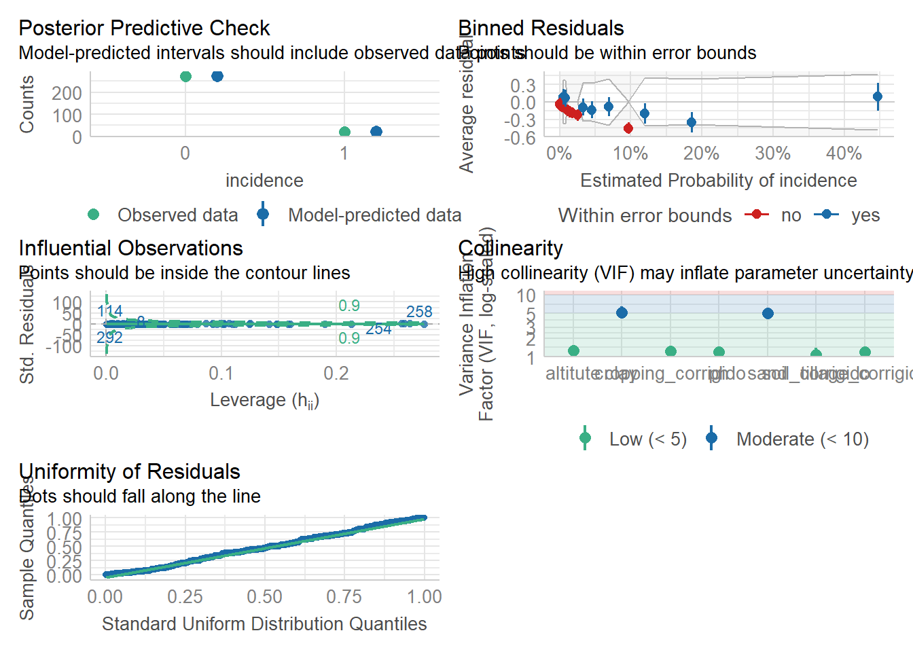
model_performance(rotyl_log)#----------------------------------------------------------
aphelenchus_log = incidence %>%
filter(genus == "Aphelenchus")%>%
filter(soil_corrigido %in% c("2","5","6"))%>%
filter(region_corrigido %in% c("1","2","3","4"))
aphel_log = glm(incidence ~ altitute + tillage_corrigido + cropping_corrigido + soil_corrigido + sand + clay + ph, data = aphelenchus_log,
family = binomial(link = "logit"))
check_model(aphel_log)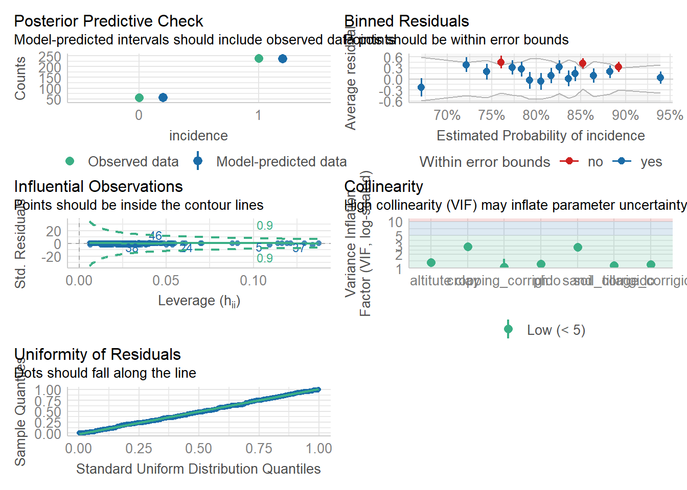
model_performance(aphel_log)#----------------------------------------------------------
aphelenchoides_log = incidence %>%
filter(genus == "Aphelenchoides")%>%
filter(soil_corrigido %in% c("2","5","6"))%>%
filter(region_corrigido %in% c("1","2","3","4"))
aphels_log = glm(incidence ~ altitute + tillage_corrigido + cropping_corrigido + soil_corrigido + sand + clay + ph, data = aphelenchoides_log,
family = binomial(link = "logit"))
check_model(aphels_log)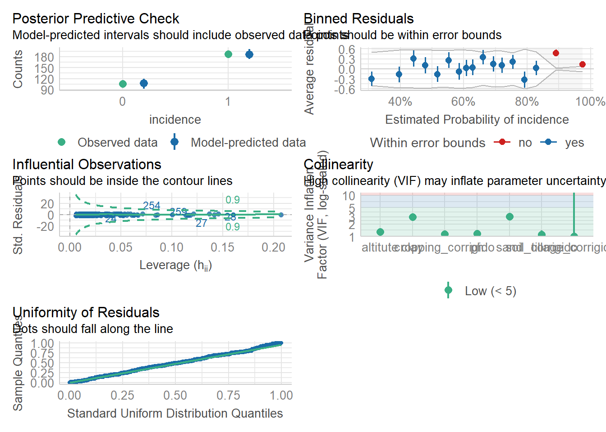
model_performance(aphels_log)Wald x² and LRT - Adicionar linha para cada terms = …
#Pratylenchus
DAAG::vif(praty_log) altitute tillage_corrigido cropping_corrigido soil_corrigido
1.2905 1.1013 1.0930 1.0750
sand clay ph
2.9037 2.9113 1.1926 coef(praty_log) (Intercept) altitute tillage_corrigido cropping_corrigido
6.0555230389 -0.0001975404 1.2838316899 -0.4553672237
soil_corrigido sand clay ph
-0.4788108469 -0.0084916410 -0.0112075743 -0.4225441494 summary(praty_log)
Call:
glm(formula = incidence ~ altitute + tillage_corrigido + cropping_corrigido +
soil_corrigido + sand + clay + ph, family = binomial(link = "logit"),
data = pratylenchus_log)
Coefficients:
Estimate Std. Error z value Pr(>|z|)
(Intercept) 6.0555230 2.4629360 2.459 0.0139 *
altitute -0.0001975 0.0009825 -0.201 0.8407
tillage_corrigido 1.2838317 0.8357737 1.536 0.1245
cropping_corrigido -0.4553672 0.3736449 -1.219 0.2230
soil_corrigido -0.4788108 0.2274515 -2.105 0.0353 *
sand -0.0084916 0.0149092 -0.570 0.5690
clay -0.0112076 0.0215268 -0.521 0.6026
ph -0.4225441 0.1745405 -2.421 0.0155 *
---
Signif. codes: 0 '***' 0.001 '**' 0.01 '*' 0.05 '.' 0.1 ' ' 1
(Dispersion parameter for binomial family taken to be 1)
Null deviance: 376.15 on 292 degrees of freedom
Residual deviance: 362.68 on 285 degrees of freedom
AIC: 378.68
Number of Fisher Scoring iterations: 4aod::wald.test(Sigma = vcov(praty_log), b = coef(praty_log), Terms =8)Wald test:
----------
Chi-squared test:
X2 = 5.9, df = 1, P(> X2) = 0.015lrtest(praty_log)#Helicotylenchus
summary(heli_log)
Call:
glm(formula = incidence ~ altitute + tillage_corrigido + cropping_corrigido +
soil_corrigido + sand + clay + ph, family = binomial(link = "logit"),
data = helicotylenchus_log)
Coefficients:
Estimate Std. Error z value Pr(>|z|)
(Intercept) 16.3575900 3.7845512 4.322 1.54e-05 ***
altitute 0.0009222 0.0013699 0.673 0.500812
tillage_corrigido 0.0589492 0.8112540 0.073 0.942073
cropping_corrigido -1.1773978 0.4947226 -2.380 0.017317 *
soil_corrigido -0.1799912 0.2358887 -0.763 0.445443
sand -0.0906832 0.0259081 -3.500 0.000465 ***
clay -0.1232726 0.0359609 -3.428 0.000608 ***
ph -0.5615168 0.2835237 -1.980 0.047648 *
---
Signif. codes: 0 '***' 0.001 '**' 0.01 '*' 0.05 '.' 0.1 ' ' 1
(Dispersion parameter for binomial family taken to be 1)
Null deviance: 202.09 on 292 degrees of freedom
Residual deviance: 175.64 on 285 degrees of freedom
AIC: 191.64
Number of Fisher Scoring iterations: 5aod::wald.test(Sigma = vcov(heli_log), b = coef(heli_log), Terms = 8)Wald test:
----------
Chi-squared test:
X2 = 3.9, df = 1, P(> X2) = 0.048lrtest (heli_log)#Rotylenchulus
summary(rotyl_log)
Call:
glm(formula = incidence ~ altitute + tillage_corrigido + cropping_corrigido +
soil_corrigido + sand + clay + ph, family = binomial(link = "logit"),
data = rotylenchulus_log)
Coefficients:
Estimate Std. Error z value Pr(>|z|)
(Intercept) -26.489806 6.443734 -4.111 3.94e-05 ***
altitute -0.003818 0.001777 -2.149 0.031656 *
tillage_corrigido -1.032193 1.018839 -1.013 0.311009
cropping_corrigido 0.860904 0.725120 1.187 0.235126
soil_corrigido 0.868449 0.465861 1.864 0.062296 .
sand 0.178850 0.046991 3.806 0.000141 ***
clay 0.265311 0.061670 4.302 1.69e-05 ***
ph 0.337040 0.379526 0.888 0.374511
---
Signif. codes: 0 '***' 0.001 '**' 0.01 '*' 0.05 '.' 0.1 ' ' 1
(Dispersion parameter for binomial family taken to be 1)
Null deviance: 140.698 on 292 degrees of freedom
Residual deviance: 98.997 on 285 degrees of freedom
AIC: 115
Number of Fisher Scoring iterations: 7aod::wald.test(Sigma = vcov(rotyl_log), b = coef(rotyl_log), Terms = 8)Wald test:
----------
Chi-squared test:
X2 = 0.79, df = 1, P(> X2) = 0.37lrtest (rotyl_log)#Criconematidae
summary(crico_log)
Call:
glm(formula = incidence ~ altitute + tillage_corrigido + cropping_corrigido +
soil_corrigido + sand + clay + ph, family = binomial(link = "logit"),
data = criconematidae_log)
Coefficients:
Estimate Std. Error z value Pr(>|z|)
(Intercept) -2.489336 3.050711 -0.816 0.41451
altitute -0.008213 0.001322 -6.211 5.27e-10 ***
tillage_corrigido -0.507510 0.768085 -0.661 0.50877
cropping_corrigido -0.282998 0.502354 -0.563 0.57320
soil_corrigido 0.047289 0.205306 0.230 0.81783
sand 0.051050 0.021174 2.411 0.01591 *
clay 0.096362 0.029329 3.286 0.00102 **
ph 0.310043 0.204404 1.517 0.12931
---
Signif. codes: 0 '***' 0.001 '**' 0.01 '*' 0.05 '.' 0.1 ' ' 1
(Dispersion parameter for binomial family taken to be 1)
Null deviance: 294.34 on 292 degrees of freedom
Residual deviance: 227.19 on 285 degrees of freedom
AIC: 243.19
Number of Fisher Scoring iterations: 5coef(crico_log) (Intercept) altitute tillage_corrigido cropping_corrigido
-2.489335784 -0.008213016 -0.507510498 -0.282998369
soil_corrigido sand clay ph
0.047288813 0.051049643 0.096361905 0.310042507 aod::wald.test(Sigma = vcov(crico_log), b = coef(crico_log), Terms = 8)Wald test:
----------
Chi-squared test:
X2 = 2.3, df = 1, P(> X2) = 0.13lrtest(crico_log)#Aphelenchus
DAAG::vif(aphel_log) altitute tillage_corrigido cropping_corrigido soil_corrigido
1.3356 1.1903 1.0489 1.1245
sand clay ph
2.7958 2.8739 1.2101 summary(aphel_log)
Call:
glm(formula = incidence ~ altitute + tillage_corrigido + cropping_corrigido +
soil_corrigido + sand + clay + ph, family = binomial(link = "logit"),
data = aphelenchus_log)
Coefficients:
Estimate Std. Error z value Pr(>|z|)
(Intercept) 2.5681203 3.1432693 0.817 0.4139
altitute -0.0009137 0.0012573 -0.727 0.4674
tillage_corrigido -0.1849472 0.8794359 -0.210 0.8334
cropping_corrigido 0.3005338 0.4854211 0.619 0.5358
soil_corrigido -0.4841033 0.3490459 -1.387 0.1655
sand 0.0378871 0.0185538 2.042 0.0411 *
clay 0.0355862 0.0271517 1.311 0.1900
ph -0.1224803 0.2109969 -0.580 0.5616
---
Signif. codes: 0 '***' 0.001 '**' 0.01 '*' 0.05 '.' 0.1 ' ' 1
(Dispersion parameter for binomial family taken to be 1)
Null deviance: 282.97 on 292 degrees of freedom
Residual deviance: 273.93 on 285 degrees of freedom
AIC: 289.93
Number of Fisher Scoring iterations: 5coef(aphel_log) (Intercept) altitute tillage_corrigido cropping_corrigido
2.5681203282 -0.0009137359 -0.1849471613 0.3005338000
soil_corrigido sand clay ph
-0.4841032550 0.0378871433 0.0355861522 -0.1224802568 aod::wald.test(Sigma = vcov(aphel_log), b = coef(aphel_log), Terms = 8)Wald test:
----------
Chi-squared test:
X2 = 0.34, df = 1, P(> X2) = 0.56lrtest (aphel_log)#Aphelenchoides
summary(aphels_log)
Call:
glm(formula = incidence ~ altitute + tillage_corrigido + cropping_corrigido +
soil_corrigido + sand + clay + ph, family = binomial(link = "logit"),
data = aphelenchoides_log)
Coefficients:
Estimate Std. Error z value Pr(>|z|)
(Intercept) -5.110e+00 6.930e+02 -0.007 0.994117
altitute -8.898e-04 1.038e-03 -0.857 0.391435
tillage_corrigido 1.664e+01 6.930e+02 0.024 0.980841
cropping_corrigido -1.728e-01 4.134e-01 -0.418 0.675943
soil_corrigido 2.621e-02 1.783e-01 0.147 0.883169
sand -6.034e-02 1.593e-02 -3.788 0.000152 ***
clay -7.671e-02 2.238e-02 -3.428 0.000608 ***
ph -7.492e-01 1.954e-01 -3.835 0.000126 ***
---
Signif. codes: 0 '***' 0.001 '**' 0.01 '*' 0.05 '.' 0.1 ' ' 1
(Dispersion parameter for binomial family taken to be 1)
Null deviance: 383.50 on 292 degrees of freedom
Residual deviance: 339.15 on 285 degrees of freedom
AIC: 355.15
Number of Fisher Scoring iterations: 15coef(aphels_log) (Intercept) altitute tillage_corrigido cropping_corrigido
-5.1103353865 -0.0008898298 16.6426655496 -0.1728103102
soil_corrigido sand clay ph
0.0262062646 -0.0603405005 -0.0767102891 -0.7492111597 aod::wald.test(Sigma = vcov(aphels_log), b = coef(aphels_log), Terms = 8)Wald test:
----------
Chi-squared test:
X2 = 14.7, df = 1, P(> X2) = 0.00013lrtest (aphels_log)Models diagnostic (graphic)
check_singularity(praty_log)[1] FALSEcheck_model(praty_log)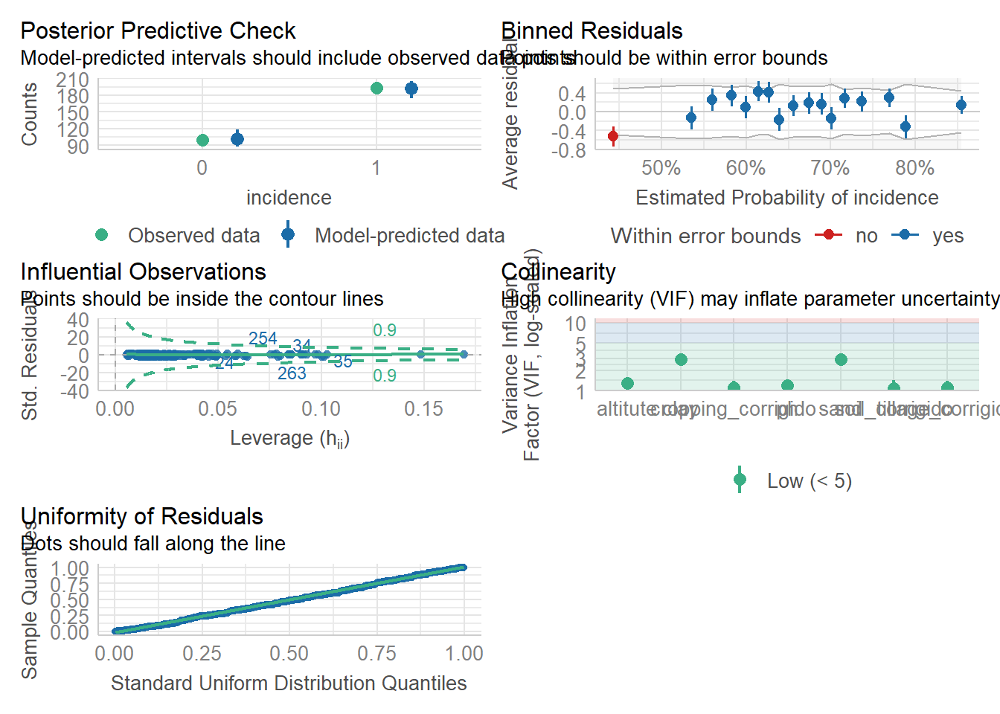
simulationOutput <- simulateResiduals(fittedModel = praty_log)
plot(simulationOutput)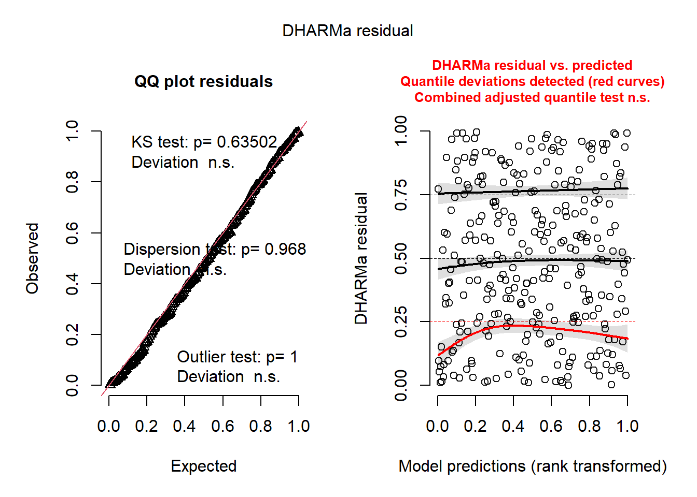
Aphelenchus
#Model log with best
aphelenchus_binomial <- glm(incidence ~ altitute + tillage_corrigido + cropping_corrigido + soil_corrigido + sand + clay + ph, data = aphelenchus_log,family = binomial(link = "logit"))
summary(aphelenchus_binomial)
Call:
glm(formula = incidence ~ altitute + tillage_corrigido + cropping_corrigido +
soil_corrigido + sand + clay + ph, family = binomial(link = "logit"),
data = aphelenchus_log)
Coefficients:
Estimate Std. Error z value Pr(>|z|)
(Intercept) 2.5681203 3.1432693 0.817 0.4139
altitute -0.0009137 0.0012573 -0.727 0.4674
tillage_corrigido -0.1849472 0.8794359 -0.210 0.8334
cropping_corrigido 0.3005338 0.4854211 0.619 0.5358
soil_corrigido -0.4841033 0.3490459 -1.387 0.1655
sand 0.0378871 0.0185538 2.042 0.0411 *
clay 0.0355862 0.0271517 1.311 0.1900
ph -0.1224803 0.2109969 -0.580 0.5616
---
Signif. codes: 0 '***' 0.001 '**' 0.01 '*' 0.05 '.' 0.1 ' ' 1
(Dispersion parameter for binomial family taken to be 1)
Null deviance: 282.97 on 292 degrees of freedom
Residual deviance: 273.93 on 285 degrees of freedom
AIC: 289.93
Number of Fisher Scoring iterations: 5pred_aphelenchus <- predict(aphelenchus_binomial, aphelenchus_log, type = "response")
#Better thresholds
dat_aphelenchus <- data.frame(1, aphelenchus_log$incidence, pred_aphelenchus)
optimal.thresholds(dat_aphelenchus)# Confusion matrix with the MAXsen+spe threshold
confusionMatrix(data = as.factor(as.numeric(pred_aphelenchus > 0.82)), mode= "everything", reference = as.factor(aphelenchus_log$incidence))Confusion Matrix and Statistics
Reference
Prediction 0 1
0 36 113
1 19 125
Accuracy : 0.5495
95% CI : (0.4906, 0.6074)
No Information Rate : 0.8123
P-Value [Acc > NIR] : 1
Kappa : 0.1085
Mcnemar's Test P-Value : 5.745e-16
Sensitivity : 0.6545
Specificity : 0.5252
Pos Pred Value : 0.2416
Neg Pred Value : 0.8681
Precision : 0.2416
Recall : 0.6545
F1 : 0.3529
Prevalence : 0.1877
Detection Rate : 0.1229
Detection Prevalence : 0.5085
Balanced Accuracy : 0.5899
'Positive' Class : 0
#Plot
auc.roc.plot(dat_aphelenchus)
calibration.plot(dat_aphelenchus)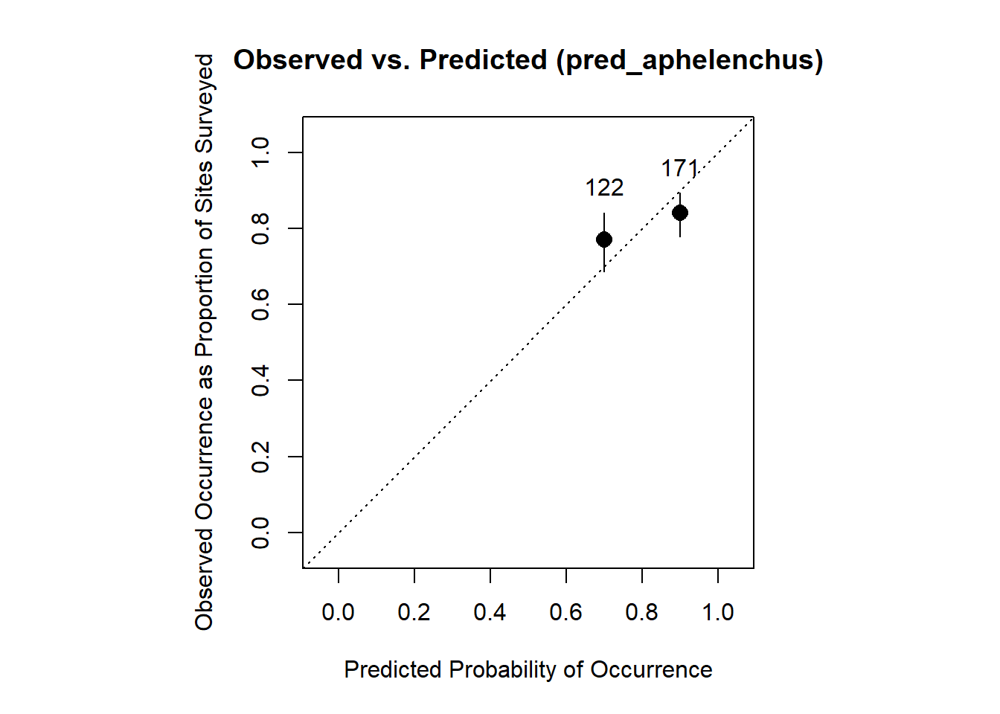
error.threshold.plot(dat_aphelenchus, opt.methods = 3) #takes a single model and plots the sensitivity and specificity as a function of threshold. 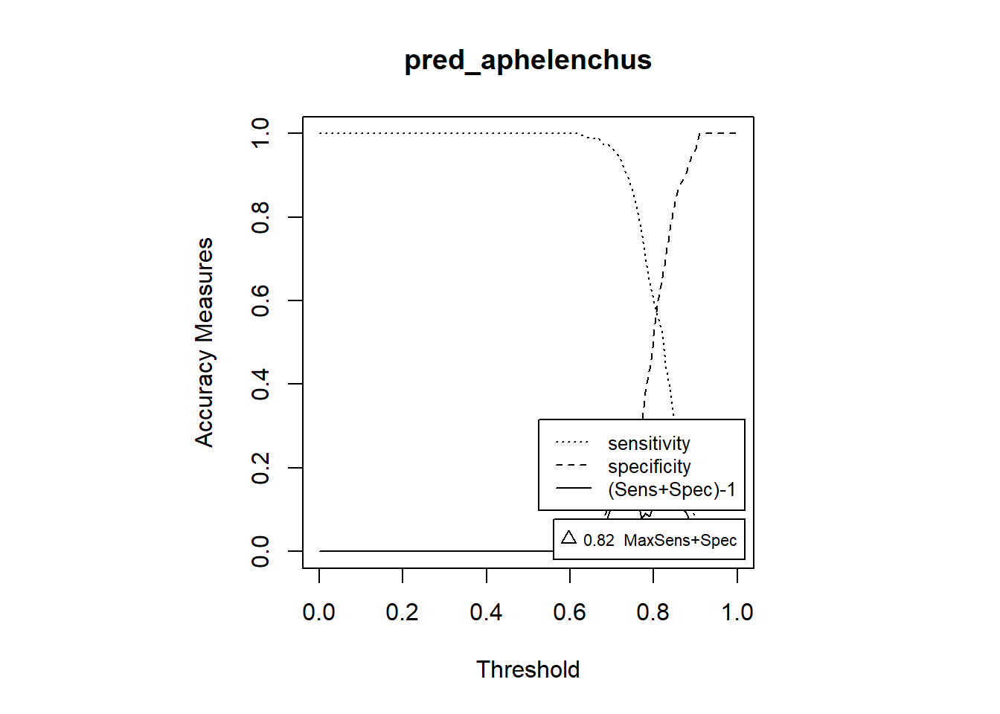
pcc(cmx(dat_aphelenchus), st.dev = TRUE) #calculates the percent correctly classified and (optionally) the associated standard deviation from a confusion matrix.presence.absence.accuracy(dat_aphelenchus,threshold=0.82,st.dev=FALSE) #Calculates five accuracy measures (pcc, sensitivity, specificity, Kappa, and AUC)presence.absence.summary(dat_aphelenchus) #Produces four types of Presence/Absence accuracy plots for a single set of model Predictions
roc_aphelenchus <- roc.plot.calculate(dat_aphelenchus) #data frame
roc_aphelenchus |>
ggplot(aes(threshold, sensitivity))+
geom_line()+
geom_line(aes(threshold, specificity))+
geom_line(aes(threshold, Kappa))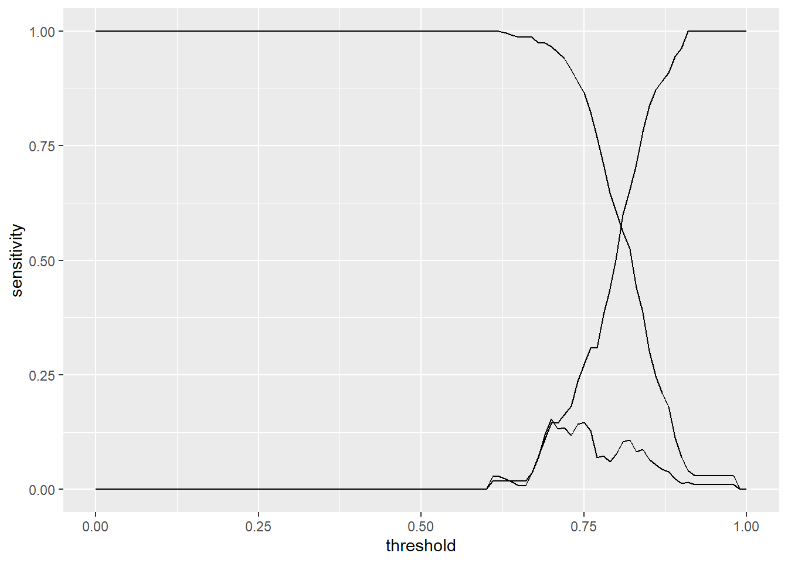
#LOOCV
acc_aphelenchus <- NULL
for(i in 1:nrow(aphelenchus_log))
{
# Train-test splitting
# 499 samples -> fitting
# 1 sample -> testing
train <- aphelenchus_log[-i,]
test <- aphelenchus_log[i,]
# Fitting
model <- glm(incidence ~ altitute + tillage_corrigido + cropping_corrigido + soil_corrigido + sand + clay + ph, data = aphelenchus_log,
family = binomial(link = "logit"))
# Predict results
results_prob <- predict(model,test,type='response')
# If prob > 0.5 then 1, else 0
results <- ifelse(results_prob > 0.82,1,0)
# Actual answers
answers <- test$incidence
# Calculate accuracy
misClasificError <- mean(answers != results)
# Collecting results
acc_aphelenchus[i] <- 1-misClasificError
}
# Average accuracy of the model
mean(acc_aphelenchus)[1] 0.5494881Aphelenchoides
#Model log with best
aphelenchoides_binomial <- glm(incidence ~ altitute + tillage_corrigido + cropping_corrigido + soil_corrigido + sand + clay + ph, data = aphelenchoides_log,family = binomial(link = "logit"))
summary(aphelenchoides_binomial)
Call:
glm(formula = incidence ~ altitute + tillage_corrigido + cropping_corrigido +
soil_corrigido + sand + clay + ph, family = binomial(link = "logit"),
data = aphelenchoides_log)
Coefficients:
Estimate Std. Error z value Pr(>|z|)
(Intercept) -5.110e+00 6.930e+02 -0.007 0.994117
altitute -8.898e-04 1.038e-03 -0.857 0.391435
tillage_corrigido 1.664e+01 6.930e+02 0.024 0.980841
cropping_corrigido -1.728e-01 4.134e-01 -0.418 0.675943
soil_corrigido 2.621e-02 1.783e-01 0.147 0.883169
sand -6.034e-02 1.593e-02 -3.788 0.000152 ***
clay -7.671e-02 2.238e-02 -3.428 0.000608 ***
ph -7.492e-01 1.954e-01 -3.835 0.000126 ***
---
Signif. codes: 0 '***' 0.001 '**' 0.01 '*' 0.05 '.' 0.1 ' ' 1
(Dispersion parameter for binomial family taken to be 1)
Null deviance: 383.50 on 292 degrees of freedom
Residual deviance: 339.15 on 285 degrees of freedom
AIC: 355.15
Number of Fisher Scoring iterations: 15pred_aphelenchoides <- predict(aphelenchoides_binomial, aphelenchoides_log, type = "response")
#Better thresholds
dat_aphelenchoides <- data.frame(1, aphelenchoides_log$incidence, pred_aphelenchoides)
optimal.thresholds(dat_aphelenchoides)# Confusion matrix with the MAXsen+spe threshold
confusionMatrix(data = as.factor(as.numeric(pred_aphelenchoides > 0.65)), mode= "everything", reference = as.factor(aphelenchoides_log$incidence))Confusion Matrix and Statistics
Reference
Prediction 0 1
0 80 80
1 26 107
Accuracy : 0.6382
95% CI : (0.5803, 0.6933)
No Information Rate : 0.6382
P-Value [Acc > NIR] : 0.5265
Kappa : 0.2944
Mcnemar's Test P-Value : 2.635e-07
Sensitivity : 0.7547
Specificity : 0.5722
Pos Pred Value : 0.5000
Neg Pred Value : 0.8045
Precision : 0.5000
Recall : 0.7547
F1 : 0.6015
Prevalence : 0.3618
Detection Rate : 0.2730
Detection Prevalence : 0.5461
Balanced Accuracy : 0.6635
'Positive' Class : 0
#Plot
auc.roc.plot(dat_aphelenchoides)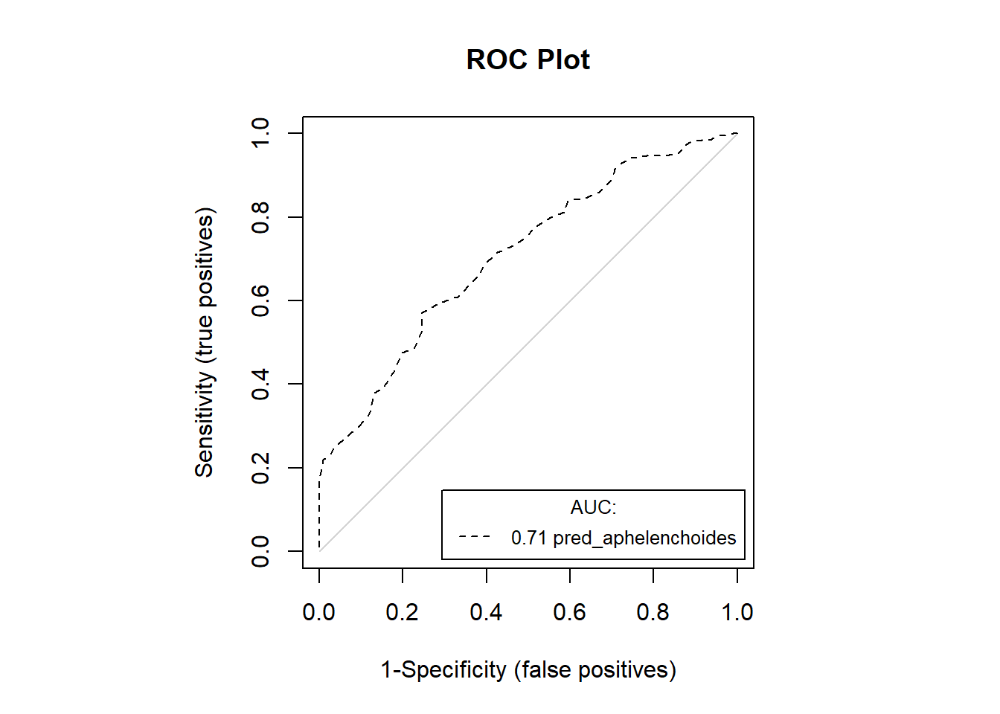
calibration.plot(dat_aphelenchoides)
error.threshold.plot(dat_aphelenchoides, opt.methods = 3) #takes a single model and plots the sensitivity and specificity as a function of threshold. 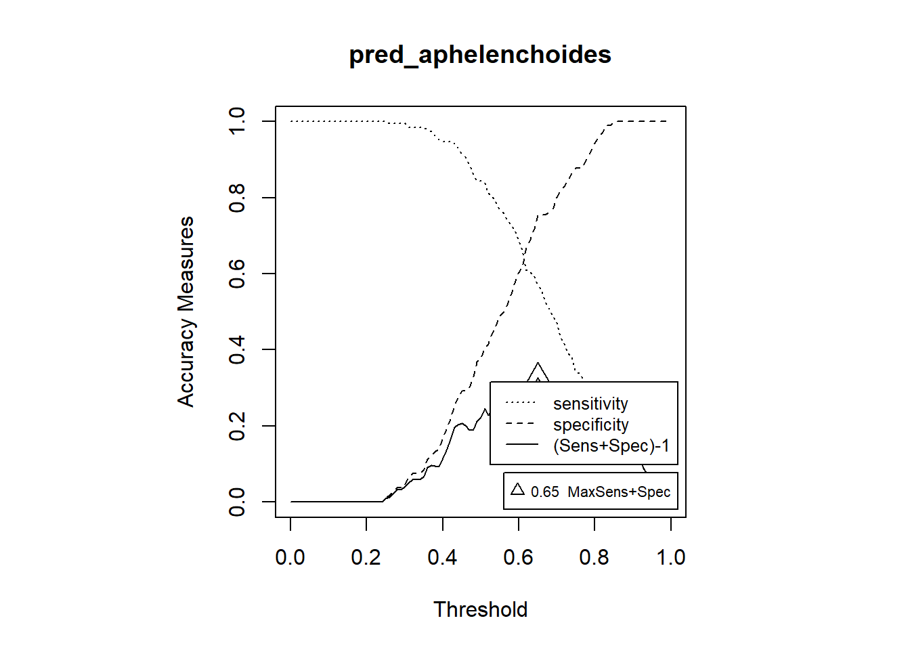
pcc(cmx(dat_aphelenchoides), st.dev = TRUE) #calculates the percent correctly classified and (optionally) the associated standard deviation from a confusion matrix.presence.absence.accuracy(dat_aphelenchoides,threshold=0.65,st.dev=FALSE) #Calculates five accuracy measures (pcc, sensitivity, specificity, Kappa, and AUC)presence.absence.summary(dat_aphelenchoides) #Produces four types of Presence/Absence accuracy plots for a single set of model Predictions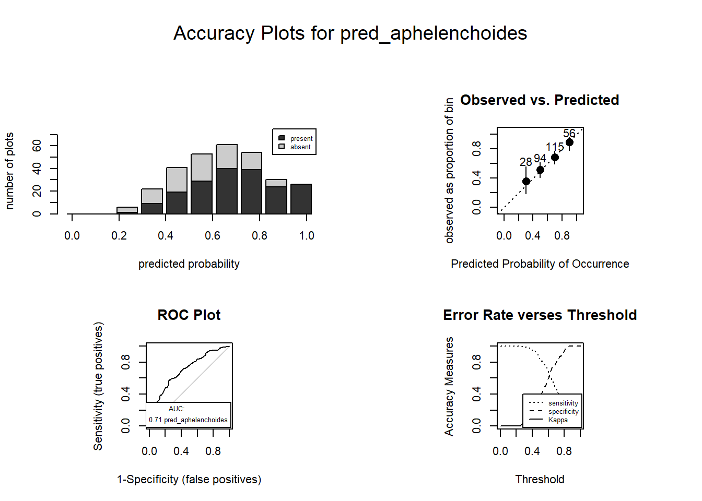
roc_aphelenchoides <- roc.plot.calculate(dat_aphelenchoides) #data frame
roc_aphelenchoides |>
ggplot(aes(threshold, sensitivity))+
geom_line()+
geom_line(aes(threshold, specificity))+
geom_line(aes(threshold, Kappa))
#LOOCV
acc_aphelenchoides <- NULL
for(i in 1:nrow(aphelenchoides_log))
{
# Train-test splitting
# 499 samples -> fitting
# 1 sample -> testing
train <- aphelenchoides_log[-i,]
test <- aphelenchoides_log[i,]
# Fitting
model <- glm(incidence ~ altitute + tillage_corrigido + cropping_corrigido + soil_corrigido + sand + clay + ph, data = aphelenchoides_log,
family = binomial(link = "logit"))
# Predict results
results_prob <- predict(model,test,type='response')
# If prob > 0.5 then 1, else 0
results <- ifelse(results_prob > 0.65,1,0)
# Actual answers
answers <- test$incidence
# Calculate accuracy
misClasificError <- mean(answers != results)
# Collecting results
acc_aphelenchoides[i] <- 1-misClasificError
}
# Average accuracy of the model
mean(acc_aphelenchoides)[1] 0.6382253Criconematidae
#Model log with best
criconematidae_binomial <- glm(incidence ~ altitute + tillage_corrigido + cropping_corrigido + soil_corrigido + sand + clay + ph, data = criconematidae_log,family = binomial(link = "logit"))
summary(criconematidae_binomial)
Call:
glm(formula = incidence ~ altitute + tillage_corrigido + cropping_corrigido +
soil_corrigido + sand + clay + ph, family = binomial(link = "logit"),
data = criconematidae_log)
Coefficients:
Estimate Std. Error z value Pr(>|z|)
(Intercept) -2.489336 3.050711 -0.816 0.41451
altitute -0.008213 0.001322 -6.211 5.27e-10 ***
tillage_corrigido -0.507510 0.768085 -0.661 0.50877
cropping_corrigido -0.282998 0.502354 -0.563 0.57320
soil_corrigido 0.047289 0.205306 0.230 0.81783
sand 0.051050 0.021174 2.411 0.01591 *
clay 0.096362 0.029329 3.286 0.00102 **
ph 0.310043 0.204404 1.517 0.12931
---
Signif. codes: 0 '***' 0.001 '**' 0.01 '*' 0.05 '.' 0.1 ' ' 1
(Dispersion parameter for binomial family taken to be 1)
Null deviance: 294.34 on 292 degrees of freedom
Residual deviance: 227.19 on 285 degrees of freedom
AIC: 243.19
Number of Fisher Scoring iterations: 5pred_criconematidae <- predict(criconematidae_binomial, criconematidae_log, type = "response")
#Better thresholds
dat_criconematidae <- data.frame(1, criconematidae_log$incidence, pred_criconematidae)
optimal.thresholds(dat_criconematidae)# Confusion matrix with the MAXsen+spe threshold
confusionMatrix(data = as.factor(as.numeric(pred_criconematidae > 0.26)), mode= "everything", reference = as.factor(criconematidae_log$incidence))Confusion Matrix and Statistics
Reference
Prediction 0 1
0 199 16
1 35 43
Accuracy : 0.8259
95% CI : (0.7776, 0.8676)
No Information Rate : 0.7986
P-Value [Acc > NIR] : 0.13655
Kappa : 0.517
Mcnemar's Test P-Value : 0.01172
Sensitivity : 0.8504
Specificity : 0.7288
Pos Pred Value : 0.9256
Neg Pred Value : 0.5513
Precision : 0.9256
Recall : 0.8504
F1 : 0.8864
Prevalence : 0.7986
Detection Rate : 0.6792
Detection Prevalence : 0.7338
Balanced Accuracy : 0.7896
'Positive' Class : 0
#Plot
auc.roc.plot(dat_criconematidae)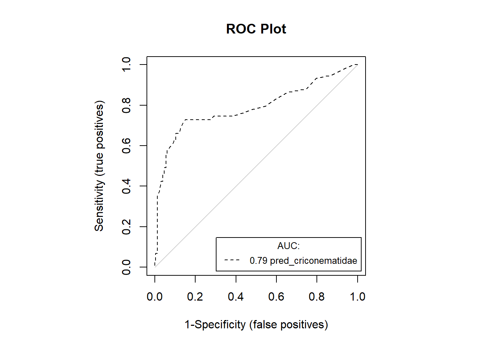
calibration.plot(dat_criconematidae)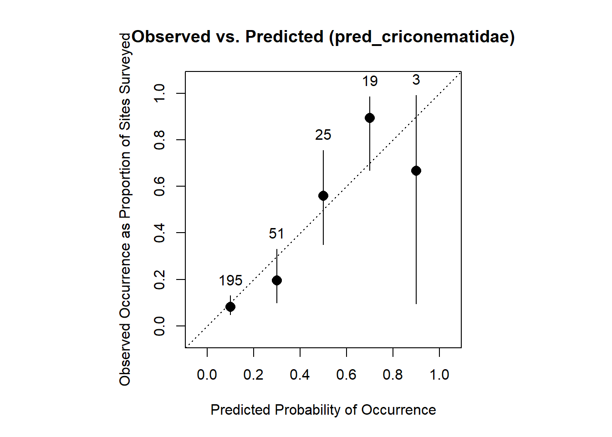
error.threshold.plot(dat_criconematidae, opt.methods = 3) #takes a single model and plots the sensitivity and specificity as a function of threshold. 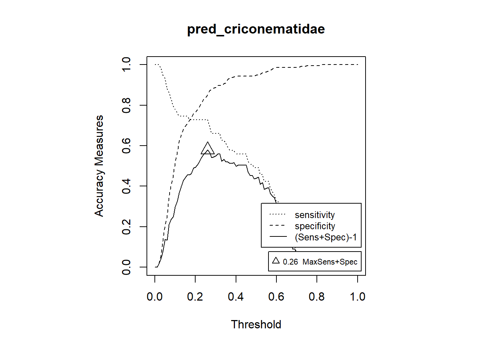
pcc(cmx(dat_criconematidae), st.dev = TRUE) #calculates the percent correctly classified and (optionally) the associated standard deviation from a confusion matrix.presence.absence.accuracy(dat_criconematidae,threshold=0.26,st.dev=FALSE) #Calculates five accuracy measures (pcc, sensitivity, specificity, Kappa, and AUC)presence.absence.summary(dat_criconematidae) #Produces four types of Presence/Absence accuracy plots for a single set of model Predictions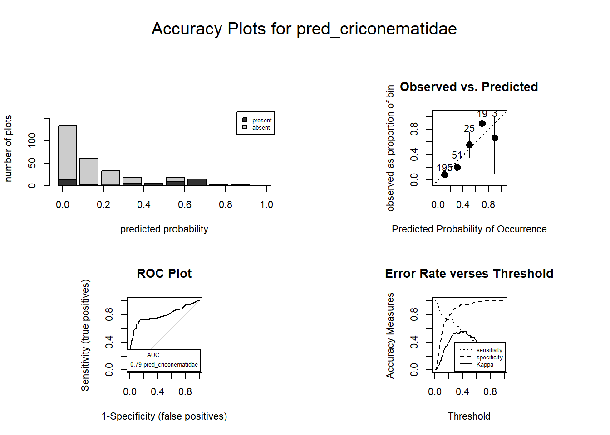
roc_criconematidae <- roc.plot.calculate(dat_criconematidae) #data frame
roc_criconematidae |>
ggplot(aes(threshold, sensitivity))+
geom_line()+
geom_line(aes(threshold, specificity))+
geom_line(aes(threshold, Kappa))
#LOOCV
acc_criconematidae <- NULL
for(i in 1:nrow(criconematidae_log))
{
# Train-test splitting
# 499 samples -> fitting
# 1 sample -> testing
train <- criconematidae_log[-i,]
test <- criconematidae_log[i,]
# Fitting
model <- glm(incidence ~ altitute + tillage_corrigido + cropping_corrigido + soil_corrigido + sand + clay + ph, data = criconematidae_log,
family = binomial(link = "logit"))
# Predict results
results_prob <- predict(model,test,type='response')
# If prob > 0.5 then 1, else 0
results <- ifelse(results_prob > 0.26,1,0)
# Actual answers
answers <- test$incidence
# Calculate accuracy
misClasificError <- mean(answers != results)
# Collecting results
acc_criconematidae[i] <- 1-misClasificError
}
# Average accuracy of the model
mean(acc_criconematidae)[1] 0.8259386Helicotylenchus
#Model log with best
helicotylenchus_binomial <- glm(incidence ~ altitute + tillage_corrigido + cropping_corrigido + soil_corrigido + sand + clay + ph, data = helicotylenchus_log,family = binomial(link = "logit"))
summary(helicotylenchus_binomial)
Call:
glm(formula = incidence ~ altitute + tillage_corrigido + cropping_corrigido +
soil_corrigido + sand + clay + ph, family = binomial(link = "logit"),
data = helicotylenchus_log)
Coefficients:
Estimate Std. Error z value Pr(>|z|)
(Intercept) 16.3575900 3.7845512 4.322 1.54e-05 ***
altitute 0.0009222 0.0013699 0.673 0.500812
tillage_corrigido 0.0589492 0.8112540 0.073 0.942073
cropping_corrigido -1.1773978 0.4947226 -2.380 0.017317 *
soil_corrigido -0.1799912 0.2358887 -0.763 0.445443
sand -0.0906832 0.0259081 -3.500 0.000465 ***
clay -0.1232726 0.0359609 -3.428 0.000608 ***
ph -0.5615168 0.2835237 -1.980 0.047648 *
---
Signif. codes: 0 '***' 0.001 '**' 0.01 '*' 0.05 '.' 0.1 ' ' 1
(Dispersion parameter for binomial family taken to be 1)
Null deviance: 202.09 on 292 degrees of freedom
Residual deviance: 175.64 on 285 degrees of freedom
AIC: 191.64
Number of Fisher Scoring iterations: 5pred_helicotylenchus <- predict(helicotylenchus_binomial, helicotylenchus_log, type = "response")
#Better thresholds
dat_helicotylenchus <- data.frame(1, helicotylenchus_log$incidence, pred_helicotylenchus)
optimal.thresholds(dat_helicotylenchus)# Confusion matrix with the MAXsen+spe threshold
confusionMatrix(data = as.factor(as.numeric(pred_helicotylenchus > 0.9)), mode= "everything", reference = as.factor(helicotylenchus_log$incidence))Confusion Matrix and Statistics
Reference
Prediction 0 1
0 24 87
1 8 174
Accuracy : 0.6758
95% CI : (0.6189, 0.7291)
No Information Rate : 0.8908
P-Value [Acc > NIR] : 1
Kappa : 0.2
Mcnemar's Test P-Value : 1.218e-15
Sensitivity : 0.75000
Specificity : 0.66667
Pos Pred Value : 0.21622
Neg Pred Value : 0.95604
Precision : 0.21622
Recall : 0.75000
F1 : 0.33566
Prevalence : 0.10922
Detection Rate : 0.08191
Detection Prevalence : 0.37884
Balanced Accuracy : 0.70833
'Positive' Class : 0
#Plot
auc.roc.plot(dat_helicotylenchus)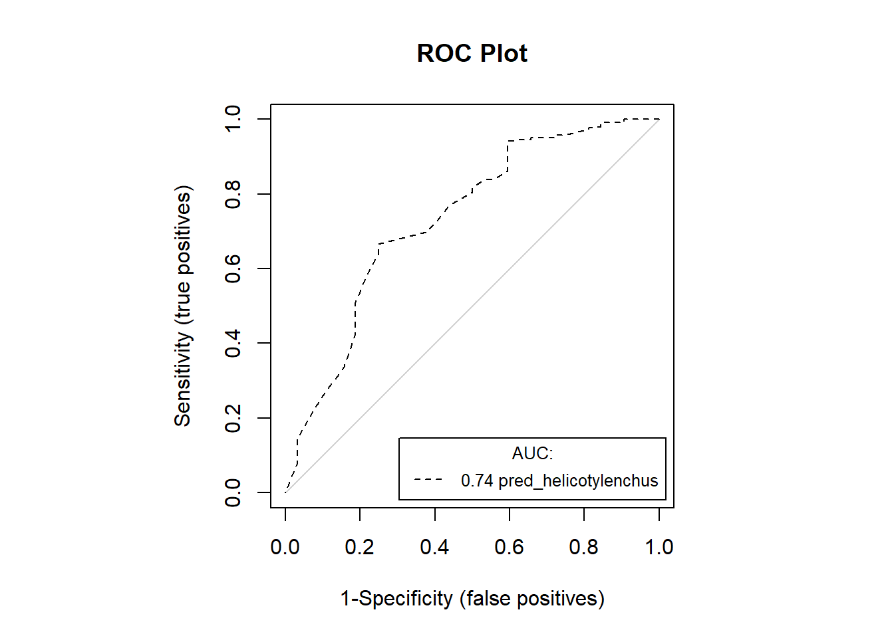
calibration.plot(dat_helicotylenchus)
error.threshold.plot(dat_helicotylenchus, opt.methods = 3) #takes a single model and plots the sensitivity and specificity as a function of threshold. 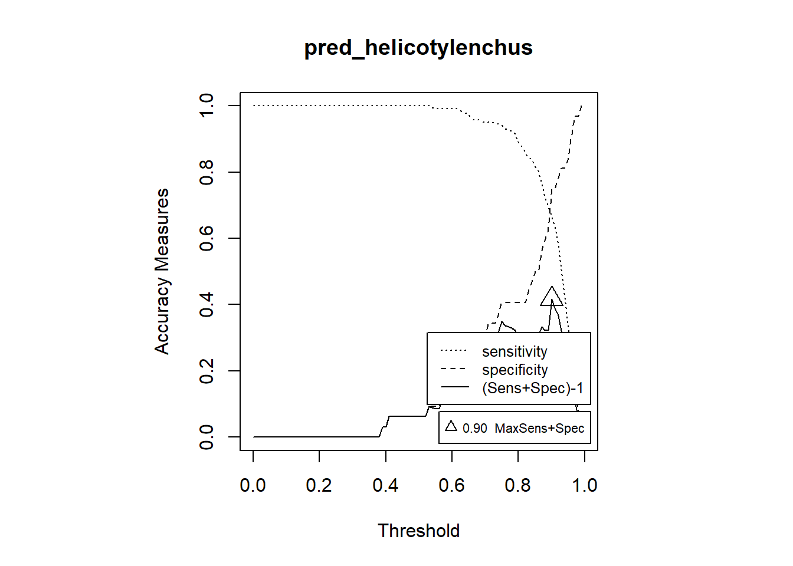
pcc(cmx(dat_helicotylenchus), st.dev = TRUE) #calculates the percent correctly classified and (optionally) the associated standard deviation from a confusion matrix.presence.absence.accuracy(dat_helicotylenchus,threshold=.9,st.dev=FALSE) #Calculates five accuracy measures (pcc, sensitivity, specificity, Kappa, and AUC)presence.absence.summary(dat_helicotylenchus) #Produces four types of Presence/Absence accuracy plots for a single set of model Predictions
roc_helicotylenchus <- roc.plot.calculate(dat_helicotylenchus) #data frame
roc_helicotylenchus |>
ggplot(aes(threshold, sensitivity))+
geom_line()+
geom_line(aes(threshold, specificity))+
geom_line(aes(threshold, Kappa))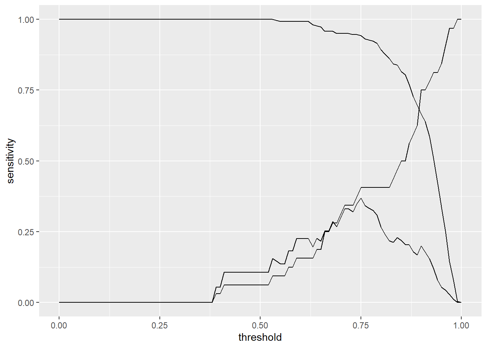
#LOOCV
acc_helicotylenchus <- NULL
for(i in 1:nrow(helicotylenchus_log))
{
# Train-test splitting
# 499 samples -> fitting
# 1 sample -> testing
train <- helicotylenchus_log[-i,]
test <- helicotylenchus_log[i,]
# Fitting
model <- glm(incidence ~ altitute + tillage_corrigido + cropping_corrigido + soil_corrigido + sand + clay + ph, data = helicotylenchus_log,
family = binomial(link = "logit"))
# Predict results
results_prob <- predict(model,test,type='response')
# If prob > 0.5 then 1, else 0
results <- ifelse(results_prob > 0.9,1,0)
# Actual answers
answers <- test$incidence
# Calculate accuracy
misClasificError <- mean(answers != results)
# Collecting results
acc_helicotylenchus[i] <- 1-misClasificError
}
# Average accuracy of the model
mean(acc_helicotylenchus)[1] 0.6757679Rotylenchulus
#Model log with best
rotylenchulus_binomial <- glm(incidence ~ altitute + tillage_corrigido + cropping_corrigido + soil_corrigido + sand + clay + ph, data = rotylenchulus_log,family = binomial(link = "logit"))
summary(rotylenchulus_binomial)
Call:
glm(formula = incidence ~ altitute + tillage_corrigido + cropping_corrigido +
soil_corrigido + sand + clay + ph, family = binomial(link = "logit"),
data = rotylenchulus_log)
Coefficients:
Estimate Std. Error z value Pr(>|z|)
(Intercept) -26.489806 6.443734 -4.111 3.94e-05 ***
altitute -0.003818 0.001777 -2.149 0.031656 *
tillage_corrigido -1.032193 1.018839 -1.013 0.311009
cropping_corrigido 0.860904 0.725120 1.187 0.235126
soil_corrigido 0.868449 0.465861 1.864 0.062296 .
sand 0.178850 0.046991 3.806 0.000141 ***
clay 0.265311 0.061670 4.302 1.69e-05 ***
ph 0.337040 0.379526 0.888 0.374511
---
Signif. codes: 0 '***' 0.001 '**' 0.01 '*' 0.05 '.' 0.1 ' ' 1
(Dispersion parameter for binomial family taken to be 1)
Null deviance: 140.698 on 292 degrees of freedom
Residual deviance: 98.997 on 285 degrees of freedom
AIC: 115
Number of Fisher Scoring iterations: 7pred_rotylenchulus <- predict(rotylenchulus_binomial, rotylenchulus_log, type = "response")
#Better thresholds
dat_rotylenchulus <- data.frame(1, rotylenchulus_log$incidence, pred_rotylenchulus)
optimal.thresholds(dat_rotylenchulus)# Confusion matrix with the MAXsen+spe threshold
confusionMatrix(data = as.factor(as.numeric(pred_rotylenchulus > .06)), mode= "everything", reference = as.factor(rotylenchulus_log$incidence))Confusion Matrix and Statistics
Reference
Prediction 0 1
0 206 4
1 68 15
Accuracy : 0.7543
95% CI : (0.7008, 0.8025)
No Information Rate : 0.9352
P-Value [Acc > NIR] : 1
Kappa : 0.2108
Mcnemar's Test P-Value : 1.131e-13
Sensitivity : 0.7518
Specificity : 0.7895
Pos Pred Value : 0.9810
Neg Pred Value : 0.1807
Precision : 0.9810
Recall : 0.7518
F1 : 0.8512
Prevalence : 0.9352
Detection Rate : 0.7031
Detection Prevalence : 0.7167
Balanced Accuracy : 0.7706
'Positive' Class : 0
#Plot
auc.roc.plot(dat_rotylenchulus)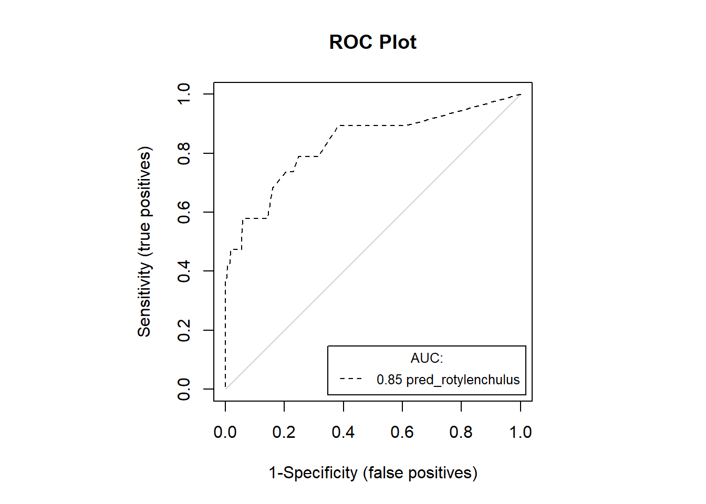
calibration.plot(dat_rotylenchulus)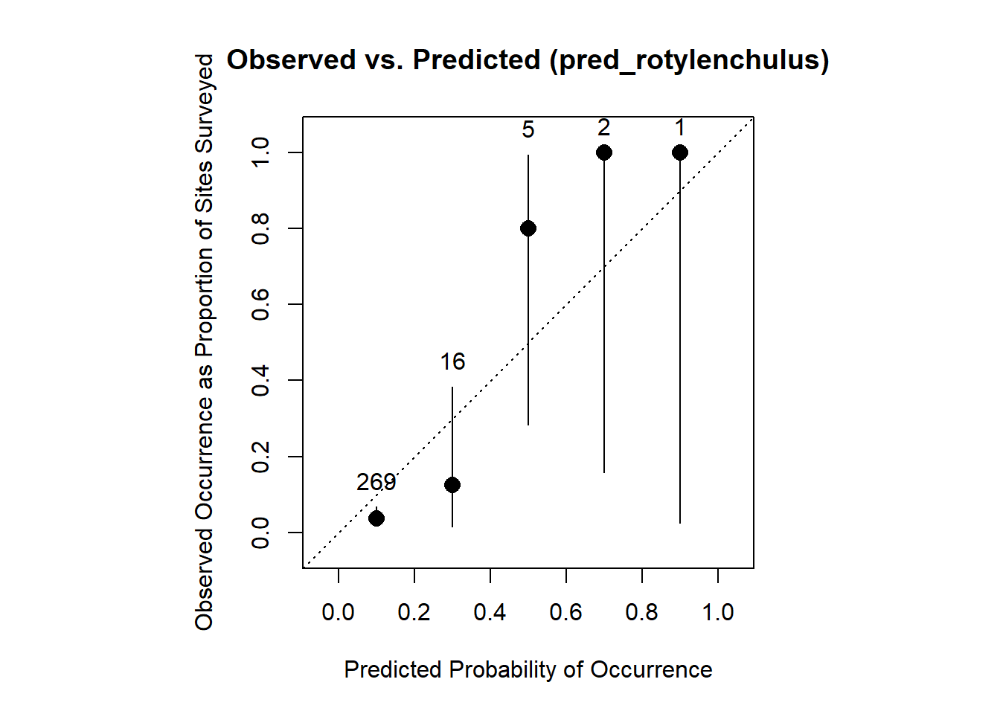
error.threshold.plot(dat_rotylenchulus, opt.methods = 3) #takes a single model and plots the sensitivity and specificity as a function of threshold. 
pcc(cmx(dat_rotylenchulus), st.dev = TRUE) #calculates the percent correctly classified and (optionally) the associated standard deviation from a confusion matrix.presence.absence.accuracy(dat_rotylenchulus,threshold=.06,st.dev=FALSE) #Calculates five accuracy measures (pcc, sensitivity, specificity, Kappa, and AUC)presence.absence.summary(dat_rotylenchulus) #Produces four types of Presence/Absence accuracy plots for a single set of model Predictions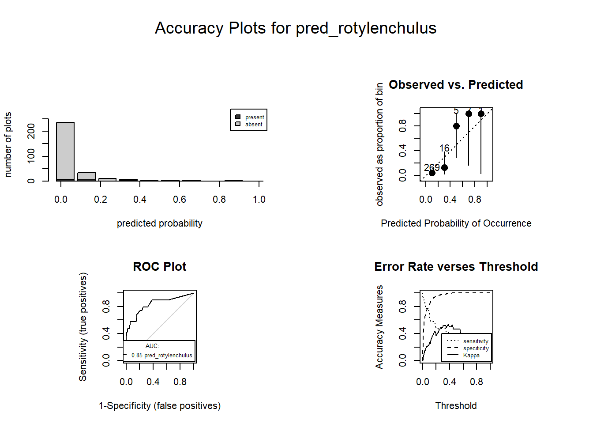
roc_rotylenchulus <- roc.plot.calculate(dat_rotylenchulus) #data frame
roc_rotylenchulus |>
ggplot(aes(threshold, sensitivity))+
geom_line()+
geom_line(aes(threshold, specificity))+
geom_line(aes(threshold, Kappa))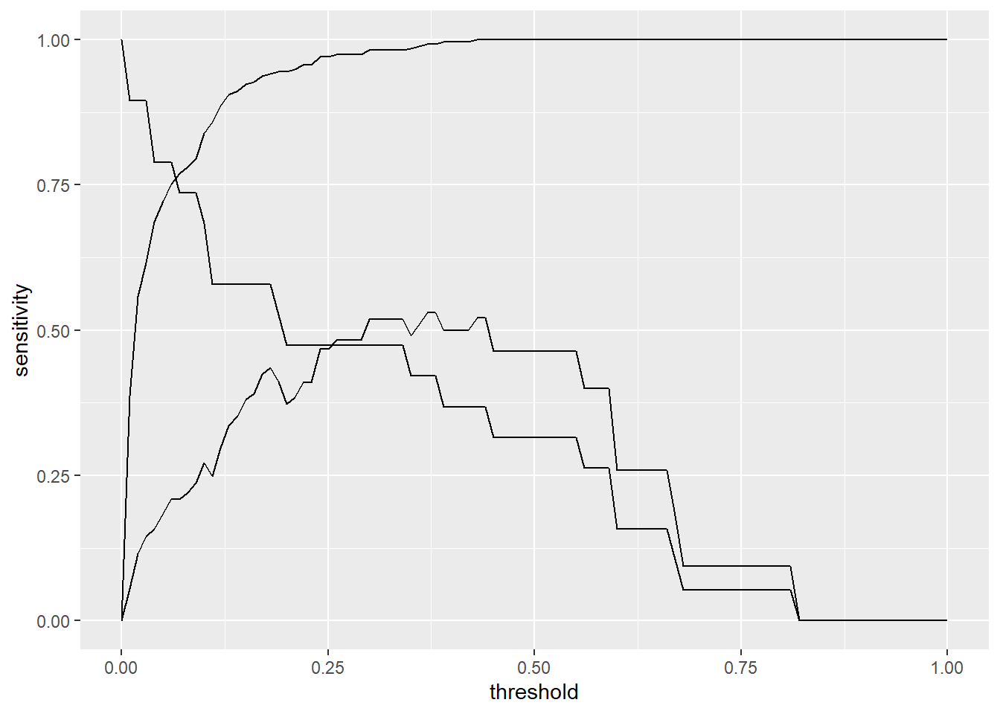
#LOOCV
acc_rotylenchulus <- NULL
for(i in 1:nrow(rotylenchulus_log))
{
# Train-test splitting
# 499 samples -> fitting
# 1 sample -> testing
train <- rotylenchulus_log[-i,]
test <- rotylenchulus_log[i,]
# Fitting
model <- glm(incidence ~ altitute + tillage_corrigido + cropping_corrigido + soil_corrigido + sand + clay + ph, data = rotylenchulus_log,
family = binomial(link = "logit"))
# Predict results
results_prob <- predict(model,test,type='response')
# If prob > 0.5 then 1, else 0
results <- ifelse(results_prob > .06,1,0)
# Actual answers
answers <- test$incidence
# Calculate accuracy
misClasificError <- mean(answers != results)
# Collecting results
acc_rotylenchulus[i] <- 1-misClasificError
}
# Average accuracy of the model
mean(acc_rotylenchulus)[1] 0.7542662Pratylenchus
#Model log with best
pratylenchus_binomial <- glm(incidence ~ altitute + tillage_corrigido + cropping_corrigido + soil_corrigido + sand + clay + ph, data = pratylenchus_log,family = binomial(link = "logit"))
summary(pratylenchus_binomial)
Call:
glm(formula = incidence ~ altitute + tillage_corrigido + cropping_corrigido +
soil_corrigido + sand + clay + ph, family = binomial(link = "logit"),
data = pratylenchus_log)
Coefficients:
Estimate Std. Error z value Pr(>|z|)
(Intercept) 6.0555230 2.4629360 2.459 0.0139 *
altitute -0.0001975 0.0009825 -0.201 0.8407
tillage_corrigido 1.2838317 0.8357737 1.536 0.1245
cropping_corrigido -0.4553672 0.3736449 -1.219 0.2230
soil_corrigido -0.4788108 0.2274515 -2.105 0.0353 *
sand -0.0084916 0.0149092 -0.570 0.5690
clay -0.0112076 0.0215268 -0.521 0.6026
ph -0.4225441 0.1745405 -2.421 0.0155 *
---
Signif. codes: 0 '***' 0.001 '**' 0.01 '*' 0.05 '.' 0.1 ' ' 1
(Dispersion parameter for binomial family taken to be 1)
Null deviance: 376.15 on 292 degrees of freedom
Residual deviance: 362.68 on 285 degrees of freedom
AIC: 378.68
Number of Fisher Scoring iterations: 4pred_pratylenchus <- predict(pratylenchus_binomial, pratylenchus_log, type = "response")
#Better thresholds
dat_pratylenchus <- data.frame(1, pratylenchus_log$incidence, pred_pratylenchus)
optimal.thresholds(dat_pratylenchus)# Confusion matrix with the MAXsen+spe threshold
confusionMatrix(data = as.factor(as.numeric(pred_pratylenchus > 0.58)), mode= "everything", reference = as.factor(pratylenchus_log$incidence))Confusion Matrix and Statistics
Reference
Prediction 0 1
0 31 26
1 69 167
Accuracy : 0.6758
95% CI : (0.6189, 0.7291)
No Information Rate : 0.6587
P-Value [Acc > NIR] : 0.2912
Kappa : 0.1955
Mcnemar's Test P-Value : 1.639e-05
Sensitivity : 0.3100
Specificity : 0.8653
Pos Pred Value : 0.5439
Neg Pred Value : 0.7076
Precision : 0.5439
Recall : 0.3100
F1 : 0.3949
Prevalence : 0.3413
Detection Rate : 0.1058
Detection Prevalence : 0.1945
Balanced Accuracy : 0.5876
'Positive' Class : 0
#Plot
auc.roc.plot(dat_pratylenchus)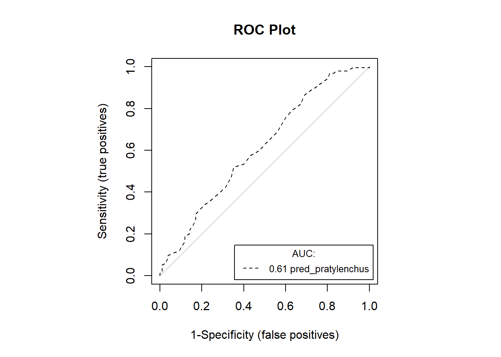
calibration.plot(dat_pratylenchus)
error.threshold.plot(dat_pratylenchus, opt.methods = 3) #takes a single model and plots the sensitivity and specificity as a function of threshold. 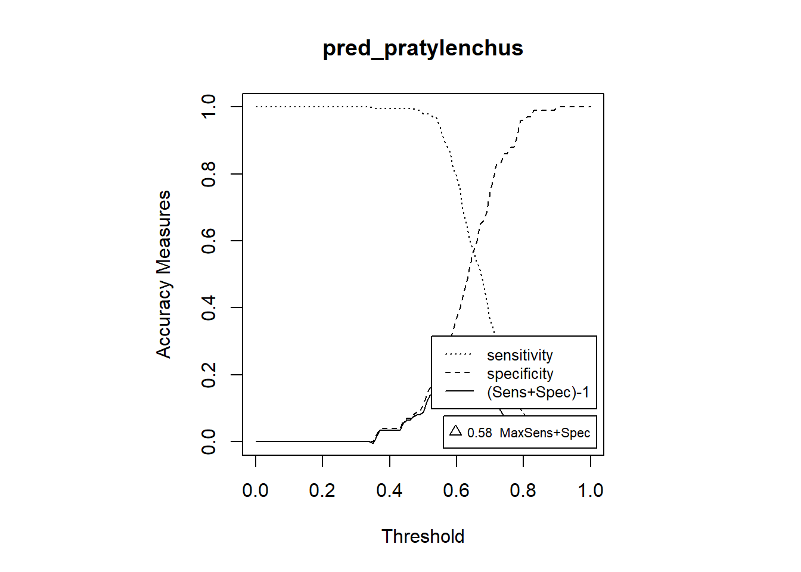
pcc(cmx(dat_pratylenchus), st.dev = TRUE) #calculates the percent correctly classified and (optionally) the associated standard deviation from a confusion matrix.presence.absence.accuracy(dat_pratylenchus,threshold=.58,st.dev=FALSE) #Calculates five accuracy measures (pcc, sensitivity, specificity, Kappa, and AUC)presence.absence.summary(dat_pratylenchus) #Produces four types of Presence/Absence accuracy plots for a single set of model Predictions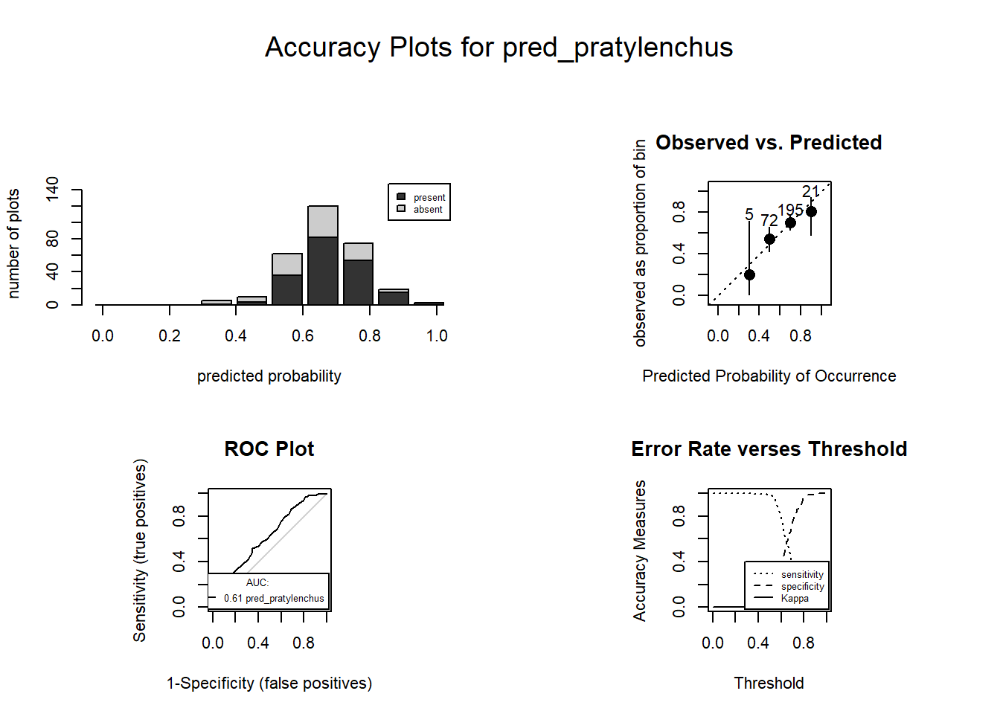
roc_pratylenchus <- roc.plot.calculate(dat_pratylenchus) #data frame
roc_pratylenchus |>
ggplot(aes(threshold, sensitivity))+
geom_line()+
geom_line(aes(threshold, specificity))+
geom_line(aes(threshold, Kappa))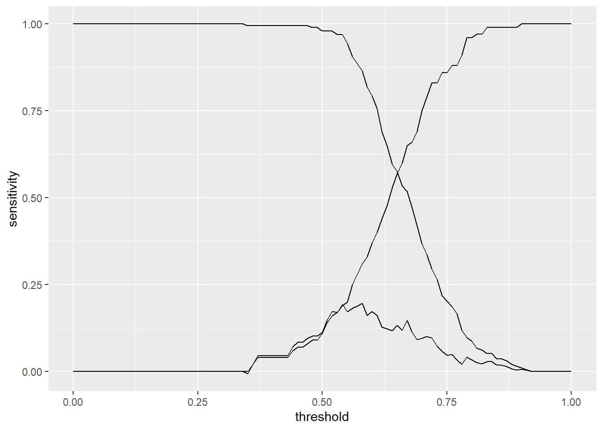
#LOOCV
acc_pratylenchus <- NULL
for(i in 1:nrow(pratylenchus_log))
{
# Train-test splitting
# 499 samples -> fitting
# 1 sample -> testing
train <- pratylenchus_log[-i,]
test <- pratylenchus_log[i,]
# Fitting
model <- glm(incidence ~ altitute + tillage_corrigido + cropping_corrigido + soil_corrigido + sand + clay + ph, data = pratylenchus_log,
family = binomial(link = "logit"))
# Predict results
results_prob <- predict(model,test,type='response')
# If prob > 0.5 then 1, else 0
results <- ifelse(results_prob > 0.58,1,0)
# Actual answers
answers <- test$incidence
# Calculate accuracy
misClasificError <- mean(answers != results)
# Collecting results
acc_pratylenchus[i] <- 1-misClasificError
}
# Average accuracy of the model
mean(acc_pratylenchus)[1] 0.6757679Joining
loocv_all = cbind(acc_aphelenchoides,acc_aphelenchus,acc_criconematidae,
acc_helicotylenchus,acc_pratylenchus,acc_rotylenchulus)Odds ratio
By cropping
#Helicotylenchus
helicotylenchus_log$predicted = predict(heli_log, type = "response")
#helicotylenchus_log$predicted = exp(helicotylenchus_log$predicted)
helicotylenchus_log$predicted = (helicotylenchus_log$predicted/(1 - helicotylenchus_log$predicted))
helicotylenchus_log01_cropping<-helicotylenchus_log$predicted[helicotylenchus_log$cropping_corrigido==1]
helicotylenchus_log02_cropping<-helicotylenchus_log$predicted[helicotylenchus_log$cropping_corrigido==2]
helicotylenchus_log01_cropping = mean(helicotylenchus_log01_cropping)
helicotylenchus_log02_cropping = mean(helicotylenchus_log02_cropping)
odd_helicotylenchus_cropping = c(helicotylenchus_log01_cropping,helicotylenchus_log02_cropping)
#logodd_diff<-s1/s2
odd_helicotylenchus_cropping = as.data.frame(odd_helicotylenchus_cropping)
odd_helicotylenchus_cropping$nematode = c("Helicotylenchus","Helicotylenchus")
colnames(odd_helicotylenchus_cropping) = c("odd","nematode")
#odd_helicotylenchus_cropping$odd<-exp(odd_helicotylenchus_cropping$odd)
#----------------------------------------------------------
#Aphelenchus
aphelenchus_log$predicted = predict(aphel_log, type = "response")
#aphelenchus_log$predicted = exp(aphelenchus_log$predicted)
aphelenchus_log$predicted = (aphelenchus_log$predicted/(1 - aphelenchus_log$predicted))
aphelenchus_log01_cropping<-aphelenchus_log$predicted[aphelenchus_log$cropping_corrigido==1]
aphelenchus_log02_cropping<-aphelenchus_log$predicted[aphelenchus_log$cropping_corrigido==2]
aphelenchus_log01_cropping = mean(aphelenchus_log01_cropping)
aphelenchus_log02_cropping = mean(aphelenchus_log02_cropping)
odd_aphelenchus_cropping = c(aphelenchus_log01_cropping,aphelenchus_log02_cropping)
odd_aphelenchus_cropping = as.data.frame(odd_aphelenchus_cropping)
odd_aphelenchus_cropping$nematode = c("Aphelenchus","Aphelenchus")
colnames(odd_aphelenchus_cropping) = c("odd","nematode")
#odd_aphelenchus_cropping$odd<-exp(odd_aphelenchus_cropping$odd)
#----------------------------------------------------------
#Aphelenchoides
aphelenchoides_log$predicted = predict(aphels_log, type = "response")
#aphelenchoides_log$predicted = exp(aphelenchoides_log$predicted)
aphelenchoides_log$predicted = (aphelenchoides_log$predicted/(1 - aphelenchoides_log$predicted))
aphelenchoides_log01_cropping<-aphelenchoides_log$predicted[aphelenchoides_log$cropping_corrigido==1]
aphelenchoides_log02_cropping<-aphelenchoides_log$predicted[aphelenchoides_log$cropping_corrigido==2]
aphelenchoides_log01_cropping = mean(aphelenchoides_log01_cropping)
aphelenchoides_log02_cropping = mean(aphelenchoides_log02_cropping)
odd_aphelenchoides_cropping = c(aphelenchoides_log01_cropping,aphelenchoides_log02_cropping)
odd_aphelenchoides_cropping = as.data.frame(odd_aphelenchoides_cropping)
odd_aphelenchoides_cropping$nematode = c("Aphelenchoides","Aphelenchoides")
colnames(odd_aphelenchoides_cropping) = c("odd","nematode")
#odd_aphelenchoides_cropping$odd<-exp(odd_aphelenchoides_cropping$odd)
#----------------------------------------------------------
#Criconematidae
criconematidae_log$predicted = predict(crico_log, type = "response")
#criconematidae_log$predicted = exp(criconematidae_log$predicted)
criconematidae_log$predicted = (criconematidae_log$predicted/(1 - criconematidae_log$predicted))
criconematidae_log01_cropping<-criconematidae_log$predicted[criconematidae_log$cropping_corrigido==1]
criconematidae_log02_cropping<-criconematidae_log$predicted[criconematidae_log$cropping_corrigido==2]
criconematidae_log01_cropping = mean(criconematidae_log01_cropping)
criconematidae_log02_cropping = mean(criconematidae_log02_cropping)
odd_criconematidae_cropping = c(criconematidae_log01_cropping,criconematidae_log02_cropping)
odd_criconematidae_cropping = as.data.frame(odd_criconematidae_cropping)
odd_criconematidae_cropping$nematode = c("Criconematidae","Criconematidae")
colnames(odd_criconematidae_cropping) = c("odd","nematode")
#odd_criconematidae_cropping$odd<-exp(odd_criconematidae_cropping$odd)
#----------------------------------------------------------
#Pratylenchus
pratylenchus_log$predicted = predict(praty_log, type = "response")
pratylenchus_log$predicted = (pratylenchus_log$predicted/(1 - pratylenchus_log$predicted))
pratylenchus_log01_cropping<-pratylenchus_log$predicted[pratylenchus_log$cropping_corrigido==1]
pratylenchus_log02_cropping<-pratylenchus_log$predicted[pratylenchus_log$cropping_corrigido==2]
pratylenchus_log01_cropping = mean(pratylenchus_log01_cropping)
pratylenchus_log02_cropping = mean(pratylenchus_log02_cropping)
odd_pratylenchus_cropping = c(pratylenchus_log01_cropping,pratylenchus_log02_cropping)
odd_pratylenchus_cropping = as.data.frame(odd_pratylenchus_cropping)
odd_pratylenchus_cropping$nematode = c("Pratylenchus","Pratylenchus")
colnames(odd_pratylenchus_cropping) = c("odd","nematode")
#odd_pratylenchus_cropping$odd<-exp(odd_pratylenchus_cropping$odd)
#----------------------------------------------------------
#Rotylenchulus
rotylenchulus_log$predicted = predict(rotyl_log, type = "response")
#rotylenchulus_log$predicted = exp(rotylenchulus_log$predicted)
rotylenchulus_log$predicted = (rotylenchulus_log$predicted/(1 - rotylenchulus_log$predicted))
rotylenchulus_log01_cropping<-rotylenchulus_log$predicted[rotylenchulus_log$cropping_corrigido==1]
rotylenchulus_log02_cropping<-rotylenchulus_log$predicted[rotylenchulus_log$cropping_corrigido==2]
rotylenchulus_log01_cropping = mean(rotylenchulus_log01_cropping)
rotylenchulus_log02_cropping = mean(rotylenchulus_log02_cropping)
odd_rotylenchulus_cropping = c(rotylenchulus_log01_cropping,rotylenchulus_log02_cropping)
odd_rotylenchulus_cropping = as.data.frame(odd_rotylenchulus_cropping)
odd_rotylenchulus_cropping$nematode = c("Rotylenchulus","Rotylenchulus")
colnames(odd_rotylenchulus_cropping) = c("odd","nematode")
#odd_rotylenchulus_cropping$odd = exp(odd_rotylenchulus_cropping$odd)
all_odd_cropping = rbind(odd_aphelenchoides_cropping,odd_aphelenchus_cropping,
odd_criconematidae_cropping,
odd_helicotylenchus_cropping,odd_pratylenchus_cropping,
odd_rotylenchulus_cropping)
#all_odd_cropping$odd = exp(all_odd_cropping$odd)
#----------------------------------------------------------
odd_ratio_cropping = all_odd_cropping %>%
group_by(nematode) %>%
summarise(
n = n(),
ratio = odd[1]/odd[2],
#ratio_exp = exp(odd[1]/odd[2]),
mean = mean(odd),
sd = sd(odd),
se=sd/sqrt(n))%>%
group_by(nematode) %>%
mutate(
lower_log = log(ratio) - 1.96 * se, # Calcula o limite inferior do intervalo de confiança na escala logarítmica
upper_log = log(ratio) + 1.96 * se, # Calcula o limite superior do intervalo de confiança na escala logarítmica
lower = plogis(lower_log), # Transforma o limite inferior para a escala linear (odds ratio)
upper = plogis(upper_log) # Transforma o limite superior para a escala linear (odds ratio)
)
#mutate(
#ic =se * qt((1-0.05)/2 + .5, n-1),
# lower = (ratio_exp - 1.96 * se),
# upper = (ratio_exp + 1.96 * se)
# )
odd_ratio_cropping$practice = c("cropping","cropping","cropping","cropping",
"cropping","cropping")
#----------------------------------------------------------
cropping = odd_ratio_cropping %>%
#filter(!nematode %in% c("Helicotylenchus","Aphelenchoides")) %>%
ggplot(aes(nematode,ratio))+
geom_hline(yintercept=1, linetype="dashed", color = "black", size = 1)+
geom_pointrange(aes(ymin = ratio - lower, ymax = ratio + upper), color = "black", size = 1)+
theme_minimal()+
labs(x = "Morphological group",
y = "Odd ratio")+
theme(text = element_text(size = 22))+
coord_flip()
#ggsave("odd_ratio_cropping.png", dpi = 600, bg = "white")By tillage
#Helicotylenchus
helicotylenchus_log$predicted = predict(heli_log, type = "response")
helicotylenchus_log$predicted = (helicotylenchus_log$predicted/(1 - helicotylenchus_log$predicted))
#helicotylenchus_log$predicted = exp(helicotylenchus_log$predicted)
#helicotylenchus_log$predicted1 = predict(heli_log, type = "link")
#helicotylenchus_log$predicted1 = exp(helicotylenchus_log$predicted1)
helicotylenchus_log01_tillage<-helicotylenchus_log$predicted[helicotylenchus_log$tillage_corrigido==1]
helicotylenchus_log02_tillage<-helicotylenchus_log$predicted[helicotylenchus_log$tillage_corrigido==2]
helicotylenchus_log01_tillage = mean(helicotylenchus_log01_tillage)
helicotylenchus_log02_tillage = mean(helicotylenchus_log02_tillage)
odd_helicotylenchus_tillage = c(helicotylenchus_log01_tillage,helicotylenchus_log02_tillage)
#odd_helicotylenchus_tillage<-exp(odd_helicotylenchus_tillage)
odd_helicotylenchus_tillage = as.data.frame(odd_helicotylenchus_tillage)
odd_helicotylenchus_tillage$nematode = c("Helicotylenchus","Helicotylenchus")
colnames(odd_helicotylenchus_tillage) = c("odd","nematode")
#odd_helicotylenchus_tillage$odd = exp(odd_helicotylenchus_tillage$odd)
#----------------------------------------------------------
#Aphelenchus
aphelenchus_log$predicted = predict(aphel_log, type = "response")
#aphelenchus_log$predicted = exp(aphelenchus_log$predicted)
aphelenchus_log$predicted = (aphelenchus_log$predicted/(1 - aphelenchus_log$predicted))
aphelenchus_log01_tillage<-aphelenchus_log$predicted[aphelenchus_log$tillage_corrigido==1]
aphelenchus_log02_tillage<-aphelenchus_log$predicted[aphelenchus_log$tillage_corrigido==2]
aphelenchus_log01_tillage = mean(aphelenchus_log01_tillage)
aphelenchus_log02_tillage = mean(aphelenchus_log02_tillage)
odd_aphelenchus_tillage = c(aphelenchus_log01_tillage,aphelenchus_log02_tillage)
odd_aphelenchus_tillage = as.data.frame(odd_aphelenchus_tillage)
odd_aphelenchus_tillage$nematode = c("Aphelenchus","Aphelenchus")
colnames(odd_aphelenchus_tillage) = c("odd","nematode")
#odd_aphelenchus_tillage$odd = exp(odd_aphelenchus_tillage$odd)
#----------------------------------------------------------
#Aphelenchoides
aphelenchoides_log$predicted = predict(aphels_log, type = "response")
#aphelenchoides_log$predicted = exp(aphelenchoides_log$predicted)
aphelenchoides_log$predicted = (aphelenchoides_log$predicted/(1 - aphelenchoides_log$predicted))
aphelenchoides_log01_tillage<-aphelenchoides_log$predicted[aphelenchoides_log$tillage_corrigido==1]
aphelenchoides_log02_tillage<-aphelenchoides_log$predicted[aphelenchoides_log$tillage_corrigido==2]
aphelenchoides_log01_tillage = mean(aphelenchoides_log01_tillage)
aphelenchoides_log02_tillage = mean(aphelenchoides_log02_tillage)
odd_aphelenchoides_tillage = c(aphelenchoides_log01_tillage,aphelenchoides_log02_tillage)
odd_aphelenchoides_tillage = as.data.frame(odd_aphelenchoides_tillage)
odd_aphelenchoides_tillage$nematode = c("Aphelenchoides","Aphelenchoides")
colnames(odd_aphelenchoides_tillage) = c("odd","nematode")
#odd_aphelenchoides_tillage$odd = exp(odd_aphelenchoides_tillage$odd)
#----------------------------------------------------------
#Criconematidae
criconematidae_log$predicted = predict(crico_log, type = "response")
#criconematidae_log$predicted = exp(criconematidae_log$predicted)
criconematidae_log$predicted = (criconematidae_log$predicted/(1 - criconematidae_log$predicted))
criconematidae_log01_tillage<-criconematidae_log$predicted[criconematidae_log$tillage_corrigido==1]
criconematidae_log02_tillage<-criconematidae_log$predicted[criconematidae_log$tillage_corrigido==2]
criconematidae_log01_tillage = mean(criconematidae_log01_tillage)
criconematidae_log02_tillage = mean(criconematidae_log02_tillage)
odd_criconematidae_tillage = c(criconematidae_log01_tillage,criconematidae_log02_tillage)
odd_criconematidae_tillage = as.data.frame(odd_criconematidae_tillage)
odd_criconematidae_tillage$nematode = c("Criconematidae","Criconematidae")
colnames(odd_criconematidae_tillage) = c("odd","nematode")
#odd_criconematidae_tillage$odd = exp(odd_criconematidae_tillage$odd)
#----------------------------------------------------------
#Pratylenchus
pratylenchus_log$predicted = predict(praty_log, type = "response")
#pratylenchus_log$predicted = exp(pratylenchus_log$predicted)
pratylenchus_log$predicted = (pratylenchus_log$predicted/(1 - pratylenchus_log$predicted))
pratylenchus_log01_tillage<-pratylenchus_log$predicted[pratylenchus_log$tillage_corrigido==1]
pratylenchus_log02_tillage<-pratylenchus_log$predicted[pratylenchus_log$tillage_corrigido==2]
pratylenchus_log01_tillage = mean(pratylenchus_log01_tillage)
pratylenchus_log02_tillage = mean(pratylenchus_log02_tillage)
odd_pratylenchus_tillage = c(pratylenchus_log01_tillage,pratylenchus_log02_tillage)
odd_pratylenchus_tillage = as.data.frame(odd_pratylenchus_tillage)
odd_pratylenchus_tillage$nematode = c("Pratylenchus","Pratylenchus")
colnames(odd_pratylenchus_tillage) = c("odd","nematode")
#odd_pratylenchus_tillage$odd = exp(odd_pratylenchus_tillage$odd)
#----------------------------------------------------------
#Rotylenchulus
rotylenchulus_log$predicted = predict(rotyl_log, type = "response")
#rotylenchulus_log$predicted = exp(rotylenchulus_log$predicted)
rotylenchulus_log$predicted = (rotylenchulus_log$predicted/(1 - rotylenchulus_log$predicted))
rotylenchulus_log01_tillage<-rotylenchulus_log$predicted[rotylenchulus_log$tillage_corrigido==1]
rotylenchulus_log02_tillage<-rotylenchulus_log$predicted[rotylenchulus_log$tillage_corrigido==2]
rotylenchulus_log01_tillage = mean(rotylenchulus_log01_tillage)
rotylenchulus_log02_tillage = mean(rotylenchulus_log02_tillage)
odd_rotylenchulus_tillage = c(rotylenchulus_log01_tillage,rotylenchulus_log02_tillage)
odd_rotylenchulus_tillage = as.data.frame(odd_rotylenchulus_tillage)
odd_rotylenchulus_tillage$nematode = c("Rotylenchulus","Rotylenchulus")
colnames(odd_rotylenchulus_tillage) = c("odd","nematode")
#odd_rotylenchulus_tillage$odd = exp(odd_rotylenchulus_tillage$odd)
all_odd_tillage = rbind(odd_aphelenchoides_tillage,odd_aphelenchus_tillage,
odd_criconematidae_tillage,odd_helicotylenchus_tillage,
odd_pratylenchus_tillage,odd_rotylenchulus_tillage)
#all_odd_tillage$odd = exp(all_odd_tillage$odd)
#----------------------------------------------------------
odd_ratio_tillage = all_odd_tillage %>%
group_by(nematode) %>%
summarise(
n = n(),
ratio = odd[1]/odd[2],
#ratio_exp = exp(odd[1]/odd[2]),
mean = mean(odd),
sd = sd(odd),
se=sd/sqrt(n))%>%
#group_by(nematode) %>%
mutate(
lower_log = log(ratio) - 1.96 * se, # Calcula o limite inferior do intervalo de confiança na escala logarítmica
upper_log = log(ratio) + 1.96 * se, # Calcula o limite superior do intervalo de confiança na escala logarítmica
lower = plogis(lower_log), # Transforma o limite inferior para a escala linear (odds ratio)
upper = plogis(upper_log) # Transforma o limite superior para a escala linear (odds ratio)
)
odd_ratio_tillage$practice = c("tillage","tillage","tillage","tillage",
"tillage","tillage")
#----------------------------------------------------------
tillage = odd_ratio_tillage %>%
#filter(!nematode %in% c("Aphelenchoides","Helicotylenchus")) %>%
ggplot(aes(nematode,ratio))+
geom_hline(yintercept=1, linetype="dashed", color = "black", size = 1)+
geom_pointrange(aes(ymin = ratio - lower, ymax = ratio + upper), color = "black", size = 1)+
theme_minimal()+
labs(x = "",
y = "Odd ratio")+
theme(text = element_text(size = 22))+
coord_flip()
ggsave("odd_ratio_tillage.png", dpi = 600, bg = "white")plot_grid(cropping,tillage, labels = c("A", "B"), ncol = 2,
label_size = 25)
ggsave("odd_ratio_cropping_tillage2.png", dpi = 600, bg = "white", width = 18, height = 10)By soil (2x6)
#Helicotylenchus
helicotylenchus_log$predicted = predict(heli_log, type = "response")
helicotylenchus_log$predicted = (helicotylenchus_log$predicted/(1 - helicotylenchus_log$predicted))
helicotylenchus_log01<-helicotylenchus_log$predicted[helicotylenchus_log$soil_corrigido==2]
helicotylenchus_log02<-helicotylenchus_log$predicted[helicotylenchus_log$soil_corrigido==6]
helicotylenchus_log01 = mean(helicotylenchus_log01)
helicotylenchus_log02 = mean(helicotylenchus_log02)
odd_helicotylenchus = c(helicotylenchus_log01,helicotylenchus_log02)
#logodd_diff<-s1/s2
#odd_helicotylenchus<-exp(odd_helicotylenchus)
odd_helicotylenchus = as.data.frame(odd_helicotylenchus)
odd_helicotylenchus$nematode = c("Helicotylenchus","Helicotylenchus")
colnames(odd_helicotylenchus) = c("odd","nematode")
#----------------------------------------------------------
#Aphelenchus
aphelenchus_log$predicted = predict(aphel_log, type = "response")
aphelenchus_log$predicted = (aphelenchus_log$predicted/(1 - aphelenchus_log$predicted))
aphelenchus_log01<-aphelenchus_log$predicted[aphelenchus_log$soil_corrigido==2]
aphelenchus_log02<-aphelenchus_log$predicted[aphelenchus_log$soil_corrigido==6]
aphelenchus_log01 = mean(aphelenchus_log01)
aphelenchus_log02 = mean(aphelenchus_log02)
odd_aphelenchus = c(aphelenchus_log01,aphelenchus_log02)
#odd_aphelenchus<-exp(odd_aphelenchus)
odd_aphelenchus = as.data.frame(odd_aphelenchus)
odd_aphelenchus$nematode = c("Aphelenchus","Aphelenchus")
colnames(odd_aphelenchus) = c("odd","nematode")
#----------------------------------------------------------
#Aphelenchoides
aphelenchoides_log$predicted = predict(aphels_log, type = "response")
aphelenchoides_log$predicted = (aphelenchoides_log$predicted/(1 - aphelenchoides_log$predicted))
aphelenchoides_log01<-aphelenchoides_log$predicted[aphelenchoides_log$soil_corrigido==2]
aphelenchoides_log02<-aphelenchoides_log$predicted[aphelenchoides_log$soil_corrigido==6]
aphelenchoides_log01 = mean(aphelenchoides_log01)
aphelenchoides_log02 = mean(aphelenchoides_log02)
odd_aphelenchoides = c(aphelenchoides_log01,aphelenchoides_log02)
#odd_aphelenchoides<-exp(odd_aphelenchoides)
odd_aphelenchoides = as.data.frame(odd_aphelenchoides)
odd_aphelenchoides$nematode = c("Aphelenchoides","Aphelenchoides")
colnames(odd_aphelenchoides) = c("odd","nematode")
#----------------------------------------------------------
#Criconematidae
criconematidae_log$predicted = predict(crico_log, type = "response")
criconematidae_log$predicted = (criconematidae_log$predicted/(1 - criconematidae_log$predicted))
criconematidae_log01<-criconematidae_log$predicted[criconematidae_log$soil_corrigido==2]
criconematidae_log02<-criconematidae_log$predicted[criconematidae_log$soil_corrigido==6]
criconematidae_log01 = mean(criconematidae_log01)
criconematidae_log02 = mean(criconematidae_log02)
odd_criconematidae = c(criconematidae_log01,criconematidae_log02)
#odd_criconematidae<-exp(odd_criconematidae)
odd_criconematidae = as.data.frame(odd_criconematidae)
odd_criconematidae$nematode = c("Criconematidae","Criconematidae")
colnames(odd_criconematidae) = c("odd","nematode")
#----------------------------------------------------------
#Pratylenchus
pratylenchus_log$predicted = predict(praty_log, type = "response")
pratylenchus_log$predicted = (pratylenchus_log$predicted/(1 - pratylenchus_log$predicted))
pratylenchus_log01<-pratylenchus_log$predicted[pratylenchus_log$soil_corrigido==2]
pratylenchus_log02<-pratylenchus_log$predicted[pratylenchus_log$soil_corrigido==6]
pratylenchus_log01 = mean(pratylenchus_log01)
pratylenchus_log02 = mean(pratylenchus_log02)
odd_pratylenchus = c(pratylenchus_log01,pratylenchus_log02)
#odd_pratylenchus<-exp(odd_pratylenchus)
odd_pratylenchus = as.data.frame(odd_pratylenchus)
odd_pratylenchus$nematode = c("Pratylenchus","Pratylenchus")
colnames(odd_pratylenchus) = c("odd","nematode")
#----------------------------------------------------------
#Rotylenchulus
rotylenchulus_log$predicted = predict(rotyl_log, type = "response")
rotylenchulus_log$predicted = (rotylenchulus_log$predicted/(1 - rotylenchulus_log$predicted))
rotylenchulus_log01<-rotylenchulus_log$predicted[rotylenchulus_log$soil_corrigido==2]
rotylenchulus_log02<-rotylenchulus_log$predicted[rotylenchulus_log$soil_corrigido==6]
rotylenchulus_log01 = mean(rotylenchulus_log01)
rotylenchulus_log02 = mean(rotylenchulus_log02)
odd_rotylenchulus = c(rotylenchulus_log01,rotylenchulus_log02)
#odd_rotylenchulus<-exp(odd_rotylenchulus)
odd_rotylenchulus = as.data.frame(odd_rotylenchulus)
odd_rotylenchulus$nematode = c("Rotylenchulus","Rotylenchulus")
colnames(odd_rotylenchulus) = c("odd","nematode")
all_odd_02 = rbind(odd_aphelenchoides,odd_aphelenchus,odd_criconematidae,odd_helicotylenchus,
odd_pratylenchus,odd_rotylenchulus)
#----------------------------------------------------------
odd_ratio_genus_02 = all_odd_02 %>%
group_by(nematode) %>%
summarise(
n = n(),
ratio = odd[1]/odd[2],
mean = mean(odd),
sd = sd(odd),
se=sd/sqrt(n))%>%
#group_by(nematode) %>%
mutate(
lower_log = log(ratio) - 1.96 * se, # Calcula o limite inferior do intervalo de confiança na escala logarítmica
upper_log = log(ratio) + 1.96 * se, # Calcula o limite superior do intervalo de confiança na escala logarítmica
lower = plogis(lower_log), # Transforma o limite inferior para a escala linear (odds ratio)
upper = plogis(upper_log) # Transforma o limite superior para a escala linear (odds ratio)
)
odd_ratio_genus_02$soil_region = c("2x6","2x6","2x6","2x6","2x6","2x6")
odd_ratio_genus_02$soil_region = c("Argissolo|Latossolo","Argissolo|Latossolo",
"Argissolo|Latossolo","Argissolo|Latossolo",
"Argissolo|Latossolo","Argissolo|Latossolo")
#----------------------------------------------------------
ratio_02 = odd_ratio_genus_02 %>%
# filter(!nematode == "Rotylenchulus") %>%
ggplot(aes(nematode,ratio))+
geom_hline(yintercept=1, linetype="dashed", color = "black", size = 1)+
geom_pointrange(aes(ymin = ratio - lower, ymax = ratio + upper), color = "black", size = 0.7)+
theme_minimal()+
labs(x = "Morphological group",
y = "Odd ratio")+
theme(text = element_text(size = 22))+
coord_flip()By soil (5x6)
#Helicotylenchus
helicotylenchus_log$predicted = predict(heli_log, type = "response")
helicotylenchus_log$predicted = (helicotylenchus_log$predicted/(1 - helicotylenchus_log$predicted))
helicotylenchus_log01<-helicotylenchus_log$predicted[helicotylenchus_log$soil_corrigido==5]
helicotylenchus_log02<-helicotylenchus_log$predicted[helicotylenchus_log$soil_corrigido==6]
helicotylenchus_log01 = mean(helicotylenchus_log01)
helicotylenchus_log02 = mean(helicotylenchus_log02)
odd_helicotylenchus = c(helicotylenchus_log01,helicotylenchus_log02)
#odd_helicotylenchus<-exp(odd_helicotylenchus)
odd_helicotylenchus = as.data.frame(odd_helicotylenchus)
odd_helicotylenchus$nematode = c("Helicotylenchus","Helicotylenchus")
colnames(odd_helicotylenchus) = c("odd","nematode")
#----------------------------------------------------------
#Aphelenchus
aphelenchus_log$predicted = predict(aphel_log, type = "response")
aphelenchus_log$predicted = (aphelenchus_log$predicted/(1 - aphelenchus_log$predicted))
aphelenchus_log01<-aphelenchus_log$predicted[aphelenchus_log$soil_corrigido==5]
aphelenchus_log02<-aphelenchus_log$predicted[aphelenchus_log$soil_corrigido==6]
aphelenchus_log01 = mean(aphelenchus_log01)
aphelenchus_log02 = mean(aphelenchus_log02)
odd_aphelenchus = c(aphelenchus_log01,aphelenchus_log02)
#odd_aphelenchus<-exp(odd_aphelenchus)
odd_aphelenchus = as.data.frame(odd_aphelenchus)
odd_aphelenchus$nematode = c("Aphelenchus","Aphelenchus")
colnames(odd_aphelenchus) = c("odd","nematode")
#----------------------------------------------------------
#Aphelenchoides
aphelenchoides_log$predicted = predict(aphels_log, type = "response")
aphelenchoides_log$predicted = (aphelenchoides_log$predicted/(1 - aphelenchoides_log$predicted))
aphelenchoides_log01<-aphelenchoides_log$predicted[aphelenchoides_log$soil_corrigido==5]
aphelenchoides_log02<-aphelenchoides_log$predicted[aphelenchoides_log$soil_corrigido==6]
aphelenchoides_log01 = mean(aphelenchoides_log01)
aphelenchoides_log02 = mean(aphelenchoides_log02)
odd_aphelenchoides = c(aphelenchoides_log01,aphelenchoides_log02)
#odd_aphelenchoides<-exp(odd_aphelenchoides)
odd_aphelenchoides = as.data.frame(odd_aphelenchoides)
odd_aphelenchoides$nematode = c("Aphelenchoides","Aphelenchoides")
colnames(odd_aphelenchoides) = c("odd","nematode")
#----------------------------------------------------------
#Criconematidae
criconematidae_log$predicted = predict(crico_log, type = "response")
criconematidae_log$predicted = (criconematidae_log$predicted/(1 - criconematidae_log$predicted))
criconematidae_log01<-criconematidae_log$predicted[criconematidae_log$soil_corrigido==5]
criconematidae_log02<-criconematidae_log$predicted[criconematidae_log$soil_corrigido==6]
criconematidae_log01 = mean(criconematidae_log01)
criconematidae_log02 = mean(criconematidae_log02)
odd_criconematidae = c(criconematidae_log01,criconematidae_log02)
#odd_criconematidae<-exp(odd_criconematidae)
odd_criconematidae = as.data.frame(odd_criconematidae)
odd_criconematidae$nematode = c("Criconematidae","Criconematidae")
colnames(odd_criconematidae) = c("odd","nematode")
#----------------------------------------------------------
#Pratylenchus
pratylenchus_log$predicted = predict(praty_log, type = "response")
pratylenchus_log$predicted = (pratylenchus_log$predicted/(1 - pratylenchus_log$predicted))
pratylenchus_log01<-pratylenchus_log$predicted[pratylenchus_log$soil_corrigido==5]
pratylenchus_log02<-pratylenchus_log$predicted[pratylenchus_log$soil_corrigido==6]
pratylenchus_log01 = mean(pratylenchus_log01)
pratylenchus_log02 = mean(pratylenchus_log02)
odd_pratylenchus = c(pratylenchus_log01,pratylenchus_log02)
#odd_pratylenchus<-exp(odd_pratylenchus)
odd_pratylenchus = as.data.frame(odd_pratylenchus)
odd_pratylenchus$nematode = c("Pratylenchus","Pratylenchus")
colnames(odd_pratylenchus) = c("odd","nematode")
#----------------------------------------------------------
#Rotylenchulus
rotylenchulus_log$predicted = predict(rotyl_log, type = "response")
rotylenchulus_log$predicted = (rotylenchulus_log$predicted/(1 - rotylenchulus_log$predicted))
rotylenchulus_log01<-rotylenchulus_log$predicted[rotylenchulus_log$soil_corrigido==5]
rotylenchulus_log02<-rotylenchulus_log$predicted[rotylenchulus_log$soil_corrigido==6]
rotylenchulus_log01 = mean(rotylenchulus_log01)
rotylenchulus_log02 = mean(rotylenchulus_log02)
odd_rotylenchulus = c(rotylenchulus_log01,rotylenchulus_log02)
#odd_rotylenchulus<-exp(odd_rotylenchulus)
odd_rotylenchulus = as.data.frame(odd_rotylenchulus)
odd_rotylenchulus$nematode = c("Rotylenchulus","Rotylenchulus")
colnames(odd_rotylenchulus) = c("odd","nematode")
all_odd_05 = rbind(odd_aphelenchoides,odd_aphelenchus,odd_criconematidae,odd_helicotylenchus,
odd_pratylenchus,odd_rotylenchulus)
#----------------------------------------------------------
odd_ratio_genus_05 = all_odd_05 %>%
group_by(nematode) %>%
summarise(
n = n(),
ratio = odd[1]/odd[2],
ratio_exp = exp(odd[1]/odd[2]),
mean = mean(odd),
sd = sd(odd),
se=sd/sqrt(n))%>%
#group_by(nematode) %>%
mutate(
lower_log = log(ratio) - 1.96 * se, # Calcula o limite inferior do intervalo de confiança na escala logarítmica
upper_log = log(ratio) + 1.96 * se, # Calcula o limite superior do intervalo de confiança na escala logarítmica
lower = plogis(lower_log), # Transforma o limite inferior para a escala linear (odds ratio)
upper = plogis(upper_log) # Transforma o limite superior para a escala linear (odds ratio)
)
odd_ratio_genus_05$soil_region = c("5x6","5x6","5x6","5x6","5x6","5x6")
odd_ratio_genus_05$soil_region = c("Cambissolo|Latossolo","Cambissolo|Latossolo","Cambissolo|Latossolo",
"Cambissolo|Latossolo","Cambissolo|Latossolo",
"Cambissolo|Latossolo") #comparação - thais
#----------------------------------------------------------
ratio_05 = odd_ratio_genus_05 %>%
# filter(!nematode == "Rotylenchulus") %>%
ggplot(aes(nematode,ratio))+
geom_hline(yintercept=1, linetype="dashed", color = "black", size = 1)+
geom_pointrange(aes(ymin = ratio - lower, ymax = ratio + upper), color = "black", size = 0.7)+
theme_minimal()+
labs(x = "",
y = "Odd ratio")+
theme(text = element_text(size = 22))+
#axis.text.y = element_blank())+
coord_flip()Plotting
plot_grid(ratio_02,ratio_05, labels = c("A", "B"), ncol = 2,
label_size = 25)
ggsave("odd_ratio_soil_mixed.png",dpi = 600, bg = "white", width = 18, height = 10)Altitude
helicotylenchus_log$prob = predict(heli_log, type = "response")
criconematidae_log$prob = predict(crico_log, type = "response")
aphelenchus_log$prob = predict(aphel_log, type = "response")
aphelenchoides_log$prob = predict(aphels_log, type = "response")
pratylenchus_log$prob = predict(praty_log, type = "response")
rotylenchulus_log$prob = predict(rotyl_log, type = "response")
#exp(summary(heli_log))
altitude = rbind(helicotylenchus_log,criconematidae_log,aphelenchus_log,aphelenchoides_log,
pratylenchus_log,rotylenchulus_log)
altitude %>%
filter(altitute < 400)altitude1 <- altitude %>%
mutate(altitute = case_when(altitute >= 0 ~ altitute,
altitute == NA_character_ ~ 0 )) %>%
mutate(altitude_range = case_when(
altitute <= 400 ~ "280 to 400",
altitute <= 600 ~ "401 to 600",
altitute <= 800 ~ "601 to 800",
altitute <= 1000 ~ "801 to 1000",
altitute > 1000 ~"Above 1001"
))
altitude_genus = altitude1 %>%
group_by(genus,altitude_range) %>%
summarise(
prob = prob)
point = altitude1 %>%
group_by(genus,altitude_range) %>%
summarise(
probi = mean(prob),
sd = sd(prob)
) %>%
group_by(genus,altitude_range) %>%
summarise(
prob = mean(probi),
sd = sd
)
#write_xlsx(point,"THAIS/point.xlsx")
point %>%
ggplot(aes(altitude_range,prob))+
geom_jitter(data = altitude_genus, alpha = .2, size = 5, width = .03, color = "gray")+
#geom_violin(data = altitude_genus, alpha = .7, width = .03, fill = "grey", color = "grey")+
geom_pointrange(aes(ymin = prob- sd, ymax = prob + sd), color = "black", size = 1)+
theme_minimal()+
facet_wrap(~genus)+
labs(x= "Range altitude (m)",
y = "Probability")+
theme(text = element_text(size = 18),
axis.text.x = element_text(angle = 45, hjust = 1))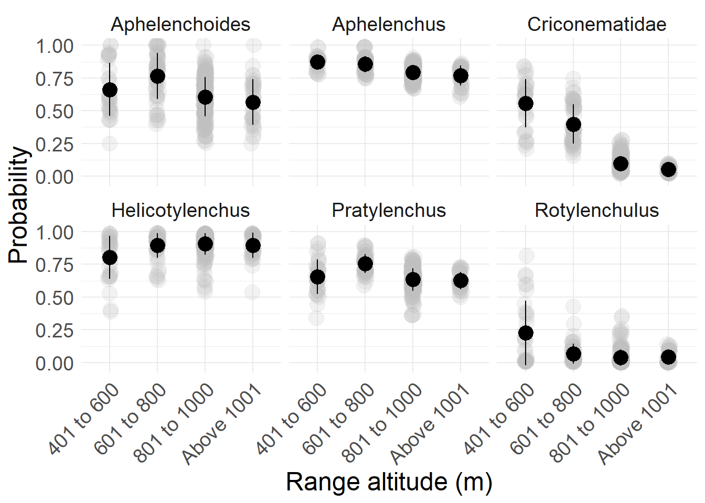
#ggsave("prob_altitude.png", bg = "white", width = 12, height = 8)Overall
altitude_genus = altitude1 %>%
group_by(genus,altitude_range,sand,clay,ph,cropping,soil,tillage) %>%
summarise(
prob = prob
)
#write_xlsx(altitude_genus,"THAIS/altitude_genus.xlsx")Probability of incidence
By tillage and sand
altitude_genus %>%
#filter(genus == "Aphelenchus") %>%
ggplot(aes(sand,prob))+
geom_jitter(alpha = .9, size = 3, color = "gray", width = 0.01, height = 0.001)+
geom_smooth(method = "glm", size = 2, se = F, color = "black")+
# geom_line(data = gg2, aes(silt = x, y = ymin), size = 0.02) +
# geom_line(data = gg2, aes(silt = x, y = ymax), size = 0.02)+
facet_wrap(~genus+tillage, nrow = 3)+
theme_minimal()+
labs(x = "Sand",
y = "Probability")+
theme(text = element_text(size = 18))
ggsave("probability_sand_tillage_all_genus.png", dpi = 600, width = 14, height = 8, bg = "white")By tillage and pH
altitude_genus %>%
#filter(genus == "Aphelenchus") %>%
ggplot(aes(ph,prob))+
geom_jitter(alpha = .9, size = 3, color = "gray", width = 0.01, height = 0.001)+
geom_smooth(method = "glm", size = 2, se = F, color = "black")+
# geom_line(data = gg2, aes(silt = x, y = ymin), size = 0.02) +
# geom_line(data = gg2, aes(silt = x, y = ymax), size = 0.02)+
facet_wrap(~genus+tillage, nrow = 3)+
theme_minimal()+
labs(x = "pH gradient",
y = "Probabilitiy")+
theme(text = element_text(size = 18))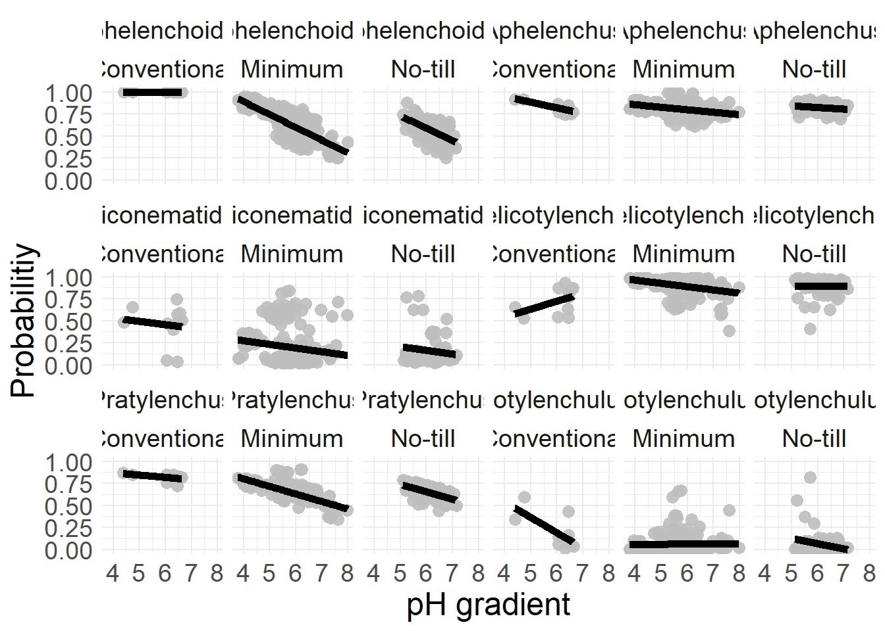
ggsave("probability_ph_tillage_all_genus.png", dpi = 600, width = 14, height = 8,bg = "white")By tillage and clay
altitude_genus %>%
#filter(genus == "Aphelenchus") %>%
ggplot(aes(clay,prob))+
geom_jitter(alpha = .9, size = 3, color = "gray", width = 0.01, height = 0.001)+
geom_smooth(method = "glm", size = 2, se = F, color = "black")+
# geom_line(data = gg2, aes(silt = x, y = ymin), size = 0.02) +
# geom_line(data = gg2, aes(silt = x, y = ymax), size = 0.02)+
facet_wrap(~genus+tillage, nrow = 3)+
theme_minimal()+
labs(x = "Clay",
y = "Probability")+
theme(text = element_text(size = 18))
ggsave("probability_clay_tillage_all_genus.png", dpi = 600, width = 14, height = 8, bg = "white")By sand and soil type
altitude_genus %>%
#filter(genus == "Aphelenchus") %>%
ggplot(aes(sand,prob))+
geom_jitter(alpha = .9, size = 3, color = "gray", width = 0.01, height = 0.001)+
geom_smooth(method = "glm", size = 2, se = F,color = "black")+
# geom_line(data = gg2, aes(silt = x, y = ymin), size = 0.02) +
# geom_line(data = gg2, aes(silt = x, y = ymax), size = 0.02)+
facet_wrap(~genus+soil, nrow = 3)+
theme_minimal()+
labs(x = "Sand",
y = "Probability")+
theme(text = element_text(size = 18))
ggsave("probability_soil_all_genus.png", dpi = 600, width = 14,height = 8, bg = "white")By cropping and sand
altitude_genus %>%
#filter(genus == "Aphelenchus") %>%
ggplot(aes(sand,prob))+
geom_jitter(alpha = .9, size = 3, color = "gray", width = 0.01, height = 0.001)+
geom_smooth(method = "glm", size = 2, se = F, color = "black")+
# geom_line(data = gg2, aes(silt = x, y = ymin), size = 0.02) +
# geom_line(data = gg2, aes(silt = x, y = ymax), size = 0.02)+
facet_wrap(~genus+cropping, nrow = 3)+
theme_minimal()+
labs(x = "Sand",
y = "Probability")+
theme(text = element_text(size = 18))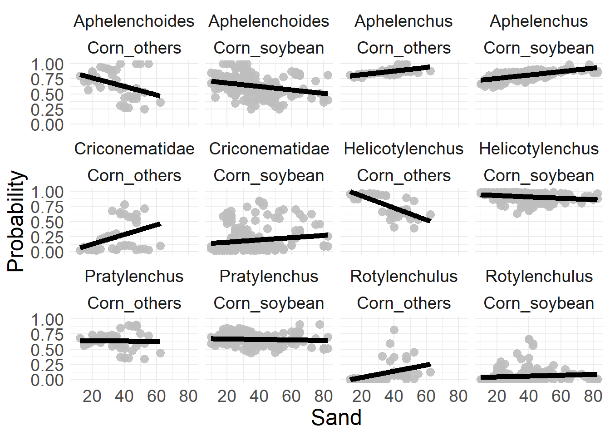
ggsave("probability_cropping_sand_all_genus.png", dpi = 600, width = 14, height = 8, bg = "white")By cropping and pH
altitude_genus %>%
#filter(genus == "Aphelenchus") %>%
ggplot(aes(ph,prob))+
geom_jitter(alpha = .9, size = 3, color = "gray", width = 0.01, height = 0.001)+
geom_smooth(method = "glm", size = 2, se = F, color = "black",fullrange = T)+
# geom_line(data = gg2, aes(silt = x, y = ymin), size = 0.02) +
# geom_line(data = gg2, aes(silt = x, y = ymax), size = 0.02)+
facet_wrap(~genus+cropping, nrow = 3)+
theme_minimal()+
labs(x = "pH gradient",
y = "Probability")+
theme(text = element_text(size = 18))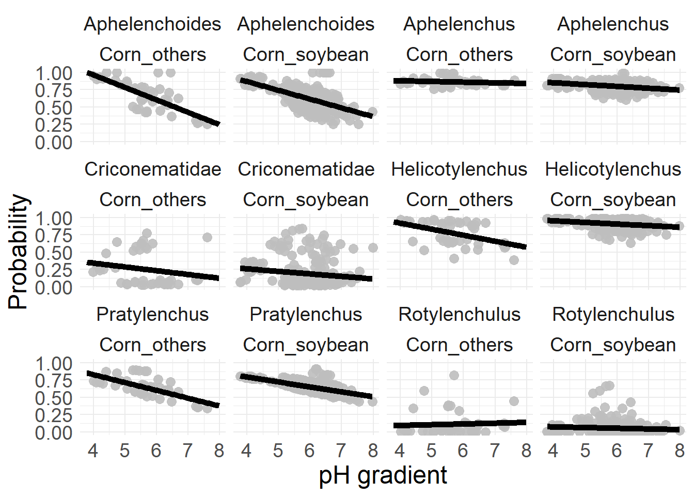
ggsave("probability_cropping_ph_all_genus.png", dpi = 600, width = 14,height = 6, bg = "white")By sand
altitude_genus %>%
#filter(!genus %in% c("Aphelenchus","Criconematidae","Rotylenchulus")) %>%
ggplot(aes(sand,prob))+
geom_jitter(alpha = .9, size = 3, color = "gray", width = 0.01, height = 0.001)+
geom_smooth(method = "glm", size = 2, se = F, color = "black")+
# geom_line(data = gg2, aes(silt = x, y = ymin), size = 0.02) +
# geom_line(data = gg2, aes(silt = x, y = ymax), size = 0.02)+
facet_wrap(~genus, nrow = 2)+
theme_minimal()+
labs(x = "Sand",
y = "Probability")+
theme(text = element_text(size = 18))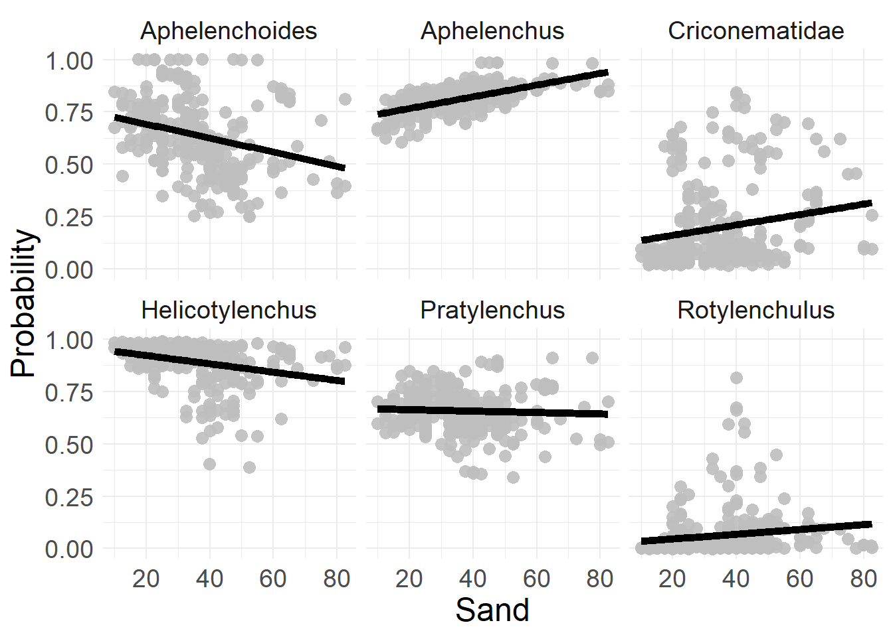
ggsave("probability_sand_genus.png", dpi = 600, width = 14, height = 6, bg = "white")By pH
altitude_genus %>%
#filter(genus == "Aphelenchus") %>%
ggplot(aes(ph,prob))+
geom_jitter(alpha = .9, size = 3, color = "gray", width = 0.01, height = 0.001)+
geom_smooth(method = "glm", size = 2, se = F, color = "black")+
# geom_line(data = gg2, aes(silt = x, y = ymin), size = 0.02) +
# geom_line(data = gg2, aes(silt = x, y = ymax), size = 0.02)+
facet_wrap(~genus, nrow = 2)+
theme_minimal()+
labs(x = "pH",
y = "Probability")+
theme(text = element_text(size = 18))
ggsave("probability_ph_genus.png", dpi = 600, width = 14,height = 6, bg = "white")By clay
altitude_genus %>%
#filter(genus == "Aphelenchus") %>%
ggplot(aes(clay,prob))+
geom_jitter(alpha = .9, size = 3, color = "gray", width = 0.01, height = 0.001)+
geom_smooth(method = "glm", size = 2, se = F, color = "black")+
# geom_line(data = gg2, aes(silt = x, y = ymin), size = 0.02) +
# geom_line(data = gg2, aes(silt = x, y = ymax), size = 0.02)+
facet_wrap(~genus, nrow = 2)+
theme_minimal()+
labs(x = "Clay",
y = "Probability")+
theme(text = element_text(size = 18))
ggsave("probability_clay_genus.png", dpi = 600, width = 14,height = 6, bg = "white")Abundance - Ordinal regression
#Modificado
population = gsheet2tbl("https://docs.google.com/spreadsheets/d/1vtTIBgpJ1qqdPp3MjIPUEYASMj_lUSZR/edit?usp=sharing&ouid=112586075609758894128&rtpof=true&sd=true")
population$quantity = 6.66*population$quantity
population$quantity =as.integer(population$quantity)
population$quantity =as.numeric(population$quantity)
#population[,10] = NULLBy Helicotylenchus
#library(MASS)
library(ordinal)
helicotylenchus_ordinal = population %>%
filter(genus == "Helicotylenchus") %>%
filter(soil %in% c("2","5","6")) %>%
group_by(samples,soil,altitute,sand,clay,ph,ec,cropping,tillage) %>%
summarise(
quantity = sum(quantity)
)
helicotylenchus_ordinal$ph = as.numeric(helicotylenchus_ordinal$ph)
helicotylenchus_ordinal <- helicotylenchus_ordinal %>%
mutate(quantity = case_when(quantity >= 0 ~ quantity,
quantity == NA_character_ ~ 0 )) %>%
mutate(risk_category = case_when(
quantity == 0 ~ "0",
quantity <= 75 ~ "1",
quantity <= 150 ~ "2",
quantity <= 300 ~ "2",
quantity <= 500 ~"2",
quantity > 500 ~"2"
))
helicotylenchus_ordinal$risk_category = as.factor(helicotylenchus_ordinal$risk_category)
#helicotylenchus_ordinal$tillage = as.character(helicotylenchus_ordinal$tillage)
#helicotylenchus_ordinal$soil = as.character(helicotylenchus_ordinal$soil)
#helicotylenchus_ordinal$cropping = as.character(helicotylenchus_ordinal$cropping)
helic_ordinal = clm(risk_category ~ tillage + cropping + soil + sand + clay +
ph,
data = helicotylenchus_ordinal,link = "logit")
helic_predicted =cbind(helicotylenchus_ordinal, predict(helic_ordinal, helicotylenchus_ordinal, type = "prob")$fit)
colnames(helic_predicted) = c("samples","soil","altitute","sand","clay","ph","ec",
"cropping","tillage","quantity","risk_category",
"prob")
#Summary
coef(summary(helic_ordinal)) Estimate Std. Error z value Pr(>|z|)
0|1 -10.64889997 1.92835626 -5.522268 3.346516e-08
1|2 -8.55526701 1.88681590 -4.534235 5.781259e-06
tillage -1.24096333 0.51839614 -2.393851 1.667250e-02
cropping -0.72786567 0.32274959 -2.255202 2.412063e-02
soil -0.13953589 0.11238294 -1.241611 2.143801e-01
sand -0.03452210 0.01288590 -2.679060 7.382921e-03
clay -0.04666742 0.01890724 -2.468230 1.357830e-02
ph -0.36725951 0.14146213 -2.596168 9.426986e-03coef(helic_ordinal) 0|1 1|2 tillage cropping soil sand
-10.64889997 -8.55526701 -1.24096333 -0.72786567 -0.13953589 -0.03452210
clay ph
-0.04666742 -0.36725951 #Odd calculate
helic_predicted = helic_predicted %>%
group_by(samples,soil,altitute,sand,clay,ph,cropping,tillage,quantity,
risk_category,prob) %>%
summarise(
odd = (prob/(1-prob)
))
anova(helic_ordinal, type="III")confint(helic_ordinal, type = c("profile"),level = .95) 2.5 % 97.5 %
tillage -2.27426083 -0.229700544
cropping -1.36178228 -0.092375416
soil -0.36548374 0.077542169
sand -0.06004594 -0.009448849
clay -0.08402814 -0.009786961
ph -0.64922210 -0.093276128#Wald X²
waldtest(helic_ordinal, term = 1)waldtest(helic_ordinal, term = 2)waldtest(helic_ordinal, term = 3)waldtest(helic_ordinal, term = 4)waldtest(helic_ordinal, term = 5)waldtest(helic_ordinal, term = 6)#waldtest(helic_ordinal, term = 7)
#LRT
lrtest(helic_ordinal)#plogis(helic_ordinal)
#Coefficients
coef(summary(helic_ordinal)) Estimate Std. Error z value Pr(>|z|)
0|1 -10.64889997 1.92835626 -5.522268 3.346516e-08
1|2 -8.55526701 1.88681590 -4.534235 5.781259e-06
tillage -1.24096333 0.51839614 -2.393851 1.667250e-02
cropping -0.72786567 0.32274959 -2.255202 2.412063e-02
soil -0.13953589 0.11238294 -1.241611 2.143801e-01
sand -0.03452210 0.01288590 -2.679060 7.382921e-03
clay -0.04666742 0.01890724 -2.468230 1.357830e-02
ph -0.36725951 0.14146213 -2.596168 9.426986e-03Cross-validation
library(ordinalNet)
risk_helicotylenchus = helicotylenchus_ordinal$risk_category
class(risk_helicotylenchus)[1] "factor"helicotylenchus_ordinal_cv = helicotylenchus_ordinal
helicotylenchus_ordinal_cv["samples"] = NULL
helicotylenchus_ordinal_cv["ec"] = NULL
helicotylenchus_ordinal_cv["altitute"] = NULL
helicotylenchus_ordinal_cv["quantity"] = NULL
helicotylenchus_ordinal_cv["risk_category"] = NULL
x_ordinal_helicotylenchus = helicotylenchus_ordinal_cv
x_ordinal_helicotylenchus = as.matrix(x_ordinal_helicotylenchus)
class(x_ordinal_helicotylenchus)[1] "matrix" "array" helicotylenchus_cv = ordinalNetCV(x_ordinal_helicotylenchus, risk_helicotylenchus,
tuneMethod=c("cvMisclass"),family = "cumulative", link = "logit",
lambdaMinRatio = 1e-04,printProgress = FALSE)
summary(helicotylenchus_cv)colMeans(summary(helicotylenchus_cv)) lambda loglik misclass brier devPct
0.046662751 -61.565646393 0.478125000 0.584756630 -0.009448775 Helicotylenchus model diagnostic (NÃO ESTÁ AJUSTANDO IGUAL O DE INCIDÊNCIA)
#Model log with best
helic_ordinal = clm(risk_category ~ tillage + cropping + soil + sand + clay +
ph,
data = helicotylenchus_ordinal,link = "logit")
summary(helic_ordinal)
helic_predicted1 = helic_predicted |>
filter(!risk_category == 2)
pred_helicotylenchus_ordinal <- helic_predicted1$prob
#Better thresholds
dat_helicotylenchus <- data.frame(1,helic_predicted1$risk_category, pred_helicotylenchus_ordinal)
dat_helicotylenchus[dat_helicotylenchus$helic_predicted1.risk_category== "0",c("risk")] <- 0
dat_helicotylenchus[dat_helicotylenchus$helic_predicted1.risk_category== "1",c("risk")] <-1
dat_helicotylenchus["helic_predicted1.risk_category"] = NULL
optimal.thresholds(dat_helicotylenchus)
# Confusion matrix with the MAXsen+spe threshold
confusionMatrix(data = as.factor(as.numeric(pred_helicotylenchus_ordinal > 0.9)), mode= "everything", reference = as.factor(helicotylenchus_log$incidence))
#Plot
auc.roc.plot(dat_helicotylenchus)
calibration.plot(dat_helicotylenchus)
error.threshold.plot(dat_helicotylenchus, opt.methods = 3) #takes a single model and plots the sensitivity and specificity as a function of threshold.
pcc(cmx(dat_helicotylenchus), st.dev = TRUE) #calculates the percent correctly classified and (optionally) the associated standard deviation from a confusion matrix.
presence.absence.accuracy(dat_helicotylenchus,threshold=.9,st.dev=FALSE) #Calculates five accuracy measures (pcc, sensitivity, specificity, Kappa, and AUC)
presence.absence.summary(dat_helicotylenchus) #Produces four types of Presence/Absence accuracy plots for a single set of model Predictions
roc_helicotylenchus <- roc.plot.calculate(dat_helicotylenchus) #data frame
roc_helicotylenchus |>
ggplot(aes(threshold, sensitivity))+
geom_line()+
geom_line(aes(threshold, specificity))+
geom_line(aes(threshold, Kappa))
#LOOCV
acc_helicotylenchus <- NULL
for(i in 1:nrow(helicotylenchus_log))
{
# Train-test splitting
# 499 samples -> fitting
# 1 sample -> testing
train <- helicotylenchus_log[-i,]
test <- helicotylenchus_log[i,]
# Fitting
model <- glm(incidence ~ altitute + tillage_corrigido + cropping_corrigido + soil_corrigido + sand + clay + ph, data = helicotylenchus_log,
family = binomial(link = "logit"))
# Predict results
results_prob <- predict(model,test,type='response')
# If prob > 0.5 then 1, else 0
results <- ifelse(results_prob > 0.9,1,0)
# Actual answers
answers <- test$incidence
# Calculate accuracy
misClasificError <- mean(answers != results)
# Collecting results
acc_helicotylenchus[i] <- 1-misClasificError
}
# Average accuracy of the model
mean(acc_helicotylenchus)Odd ratio
#Soil 2 x 6
helicotylenchus_log01_ordinal<-helic_predicted$odd[helic_predicted$soil==2]
helicotylenchus_log02_ordinal<-helic_predicted$odd[helic_predicted$soil==6]
helicotylenchus_log01_ordinal = mean(helicotylenchus_log01_ordinal)
helicotylenchus_log02_ordinal = mean(helicotylenchus_log02_ordinal)
odd_helicotylenchus_ordinal= c(helicotylenchus_log01_ordinal,helicotylenchus_log02_ordinal)
#odd_helicotylenchus_ordinal = exp(odd_helicotylenchus_ordinal)
odd_helicotylenchus_ordinal = as.data.frame(odd_helicotylenchus_ordinal)
odd_helicotylenchus_ordinal$nematode = c("Helicotylenchus","Helicotylenchus")
odd_helicotylenchus_ordinal$comparation = c("2x6","2x6")
colnames(odd_helicotylenchus_ordinal) = c("odd","nematode","comparation")
soil02_helicotylenchus = odd_helicotylenchus_ordinal
#Soil 5x6
helicotylenchus_log01_ordinal<-helic_predicted$odd[helic_predicted$soil==5]
helicotylenchus_log02_ordinal<-helic_predicted$odd[helic_predicted$soil==6]
helicotylenchus_log01_ordinal = mean(helicotylenchus_log01_ordinal)
helicotylenchus_log02_ordinal = mean(helicotylenchus_log02_ordinal)
odd_helicotylenchus_ordinal= c(helicotylenchus_log01_ordinal,helicotylenchus_log02_ordinal)
#odd_helicotylenchus_ordinal = exp(odd_helicotylenchus_ordinal)
odd_helicotylenchus_ordinal = as.data.frame(odd_helicotylenchus_ordinal)
odd_helicotylenchus_ordinal$nematode = c("Helicotylenchus","Helicotylenchus")
odd_helicotylenchus_ordinal$comparation = c("5x6","5x6")
colnames(odd_helicotylenchus_ordinal) = c("odd","nematode","comparation")
soil05_helicotylenchus = odd_helicotylenchus_ordinal
#Tillage 1x2
helicotylenchus_log01_ordinal<-helic_predicted$odd[helic_predicted$tillage==1]
helicotylenchus_log02_ordinal<-helic_predicted$odd[helic_predicted$tillage==2]
helicotylenchus_log01_ordinal = mean(helicotylenchus_log01_ordinal)
helicotylenchus_log02_ordinal = mean(helicotylenchus_log02_ordinal)
odd_helicotylenchus_ordinal= c(helicotylenchus_log01_ordinal,helicotylenchus_log02_ordinal)
#odd_helicotylenchus_ordinal = exp(odd_helicotylenchus_ordinal)
odd_helicotylenchus_ordinal = as.data.frame(odd_helicotylenchus_ordinal)
odd_helicotylenchus_ordinal$nematode = c("Helicotylenchus","Helicotylenchus")
odd_helicotylenchus_ordinal$comparation = c("tillage","tillage")
colnames(odd_helicotylenchus_ordinal) = c("odd","nematode","comparation")
tillage_helicotylenchus = odd_helicotylenchus_ordinal
#Cropping 1x2
helicotylenchus_log01_ordinal<-helic_predicted$odd[helic_predicted$cropping==1]
helicotylenchus_log02_ordinal<-helic_predicted$odd[helic_predicted$cropping==2]
helicotylenchus_log01_ordinal = mean(helicotylenchus_log01_ordinal)
helicotylenchus_log02_ordinal = mean(helicotylenchus_log02_ordinal)
odd_helicotylenchus_ordinal= c(helicotylenchus_log01_ordinal,helicotylenchus_log02_ordinal)
#odd_helicotylenchus_ordinal = exp(odd_helicotylenchus_ordinal)
odd_helicotylenchus_ordinal = as.data.frame(odd_helicotylenchus_ordinal)
odd_helicotylenchus_ordinal$nematode = c("Helicotylenchus","Helicotylenchus")
odd_helicotylenchus_ordinal$comparation = c("cropping","cropping")
colnames(odd_helicotylenchus_ordinal) = c("odd","nematode","comparation")
cropping_helicotylenchus = odd_helicotylenchus_ordinal
all_odd_helicotylenchus= rbind(soil02_helicotylenchus,soil05_helicotylenchus,
cropping_helicotylenchus,
tillage_helicotylenchus)
all_odd_ratio_helicotylenchus = all_odd_helicotylenchus %>%
group_by(comparation) %>%
summarise(
n = n(),
ratio = odd[1]/odd[2],
ratio_exp = exp(odd[1]/odd[2]),
mean = mean(odd),
sd = sd(odd),
se=sd/sqrt(n)) %>%
group_by(comparation) %>%
mutate(
lower = (ratio - 1.96 * se),
upper = (ratio + 1.96 * se))
coef(summary(helic_ordinal)) Estimate Std. Error z value Pr(>|z|)
0|1 -10.64889997 1.92835626 -5.522268 3.346516e-08
1|2 -8.55526701 1.88681590 -4.534235 5.781259e-06
tillage -1.24096333 0.51839614 -2.393851 1.667250e-02
cropping -0.72786567 0.32274959 -2.255202 2.412063e-02
soil -0.13953589 0.11238294 -1.241611 2.143801e-01
sand -0.03452210 0.01288590 -2.679060 7.382921e-03
clay -0.04666742 0.01890724 -2.468230 1.357830e-02
ph -0.36725951 0.14146213 -2.596168 9.426986e-03By Pratylenchus
#Pratylenchus
pratylenchus_ordinal = population %>%
filter(genus == "Pratylenchus") %>%
filter(soil %in% c("2","5","6")) %>%
group_by(samples,soil,altitute,sand,clay,ph,ec,cropping,tillage) %>%
summarise(
quantity = sum(quantity)
)
pratylenchus_ordinal$ph = as.numeric(pratylenchus_ordinal$ph)
pratylenchus_ordinal <- pratylenchus_ordinal %>%
mutate(quantity = case_when(quantity >= 0 ~ quantity,
quantity == NA_character_ ~ 0 )) %>%
mutate(risk_category = case_when(
quantity == 0 ~ "0",
quantity <= 10 ~ "1",
quantity <= 25 ~ "2",
quantity <= 50 ~ "2",
quantity <= 100 ~"2",
quantity > 100 ~ "2"
))
pratylenchus_ordinal$risk_category = as.factor(pratylenchus_ordinal$risk_category)
#pratylenchus_ordinal$tillage = as.character(pratylenchus_ordinal$tillage)
#pratylenchus_ordinal$soil = as.character(pratylenchus_ordinal$soil)
#pratylenchus_ordinal$cropping = as.character(pratylenchus_ordinal$cropping)
praty_ordinal = clm(risk_category ~ tillage + cropping + soil + sand + clay +
ph,
data = pratylenchus_ordinal,link = "logit")
praty_predicted =cbind(pratylenchus_ordinal, predict(praty_ordinal, pratylenchus_ordinal, type = "prob")$fit)
colnames(praty_predicted) = c("samples","soil","altitute","sand","clay","ph","ec",
"cropping","tillage","quantity","risk_category",
"prob")
#Summary
exp(coef(summary(praty_ordinal))) Estimate Std. Error z value Pr(>|z|)
0|1 0.03008916 5.833410 0.13715948 1.048086
1|2 0.08003387 5.800297 0.23774913 1.162821
tillage 2.04819767 1.672086 4.03364079 1.177173
cropping 0.63772711 1.345796 0.21987401 1.138656
soil 0.84852271 1.117232 0.22723856 1.148441
sand 0.99694013 1.012195 0.77659964 2.226430
clay 1.00177237 1.018095 1.10378233 2.512661
ph 0.69895530 1.148324 0.07504094 1.009652coef(summary(praty_ordinal)) Estimate Std. Error z value Pr(>|z|)
0|1 -3.503590347 1.76360165 -1.98661095 0.046965527
1|2 -2.525305366 1.75790909 -1.43653922 0.150848963
tillage 0.716960222 0.51407181 1.39466939 0.163115560
cropping -0.449844807 0.29698596 -1.51470058 0.129848247
soil -0.164258426 0.11085398 -1.48175487 0.138405532
sand -0.003064562 0.01212102 -0.25283032 0.800399334
clay 0.001770806 0.01793352 0.09874277 0.921342512
ph -0.358168483 0.13830386 -2.58972150 0.009605361coef(praty_ordinal) 0|1 1|2 tillage cropping soil sand
-3.503590347 -2.525305366 0.716960222 -0.449844807 -0.164258426 -0.003064562
clay ph
0.001770806 -0.358168483 anova(praty_ordinal, type="III")confint(praty_ordinal, type = c("profile"),level = .95) 2.5 % 97.5 %
tillage -0.2716813 1.76532396
cropping -1.0370948 0.13106558
soil -0.3864983 0.05049099
sand -0.0269024 0.02069725
clay -0.0334421 0.03698428
ph -0.6331651 -0.08959012#Odd
praty_predicted = praty_predicted %>%
group_by(samples,soil,altitute,sand,clay,ph,cropping,tillage,quantity,
risk_category,prob) %>%
summarise(
odd = (prob/(1-prob)
))
#Wald X²
waldtest(praty_ordinal, term = 1)waldtest(praty_ordinal, term = 2)waldtest(praty_ordinal, term = 3)waldtest(praty_ordinal, term = 4)waldtest(praty_ordinal, term = 5)waldtest(praty_ordinal, term = 6)#waldtest(praty_ordinal, term = 7)
#waldtest(praty_ordinal, term = 8)
#LRT
lrtest(praty_ordinal)Cross-validation
risk_pratylenchus = pratylenchus_ordinal$risk_category
class(risk_pratylenchus)[1] "factor"pratylenchus_ordinal_cv = pratylenchus_ordinal
pratylenchus_ordinal_cv["samples"] = NULL
pratylenchus_ordinal_cv["ec"] = NULL
pratylenchus_ordinal_cv["altitute"] = NULL
pratylenchus_ordinal_cv["quantity"] = NULL
pratylenchus_ordinal_cv["risk_category"] = NULL
x_ordinal_pratylenchus = pratylenchus_ordinal_cv
x_ordinal_pratylenchus = as.matrix(x_ordinal_pratylenchus)
class(x_ordinal_pratylenchus)[1] "matrix" "array" pratylenchus_cv = ordinalNetCV(x_ordinal_pratylenchus, risk_pratylenchus,family = "cumulative", link = "logit",
tuneMethod=c("cvMisclass"),lambdaMinRatio = 1e-04,printProgress = FALSE)
summary(pratylenchus_cv)colMeans(summary(pratylenchus_cv)) lambda loglik misclass brier devPct
0.02571531 -68.92921360 0.54375000 0.65099928 -0.02687031 Odd ratio
#Soil 2 x 6
pratylenchus_log01_ordinal<-praty_predicted$odd[praty_predicted$soil==2]
pratylenchus_log02_ordinal<-praty_predicted$odd[praty_predicted$soil==6]
pratylenchus_log01_ordinal = mean(pratylenchus_log01_ordinal)
pratylenchus_log02_ordinal = mean(pratylenchus_log02_ordinal)
odd_pratylenchus_ordinal= c(pratylenchus_log01_ordinal,pratylenchus_log02_ordinal)
odd_pratylenchus_ordinal = as.data.frame(odd_pratylenchus_ordinal)
odd_pratylenchus_ordinal$nematode = c("Pratylenchus","Pratylenchus")
odd_pratylenchus_ordinal$comparation = c("2x6","2x6")
colnames(odd_pratylenchus_ordinal) = c("odd","nematode","comparation")
soil02_pratylenchus = odd_pratylenchus_ordinal
#Soil 5x6
pratylenchus_log01_ordinal<-praty_predicted$odd[praty_predicted$soil==5]
pratylenchus_log02_ordinal<-praty_predicted$odd[praty_predicted$soil==6]
pratylenchus_log01_ordinal = mean(pratylenchus_log01_ordinal)
pratylenchus_log02_ordinal = mean(pratylenchus_log02_ordinal)
odd_pratylenchus_ordinal= c(pratylenchus_log01_ordinal,pratylenchus_log02_ordinal)
odd_pratylenchus_ordinal = as.data.frame(odd_pratylenchus_ordinal)
odd_pratylenchus_ordinal$nematode = c("Pratylenchus","Pratylenchus")
odd_pratylenchus_ordinal$comparation = c("5x6","5x6")
colnames(odd_pratylenchus_ordinal) = c("odd","nematode","comparation")
soil05_pratylenchus = odd_pratylenchus_ordinal
#Tillage 1x2
pratylenchus_log01_ordinal<-praty_predicted$odd[praty_predicted$tillage==1]
pratylenchus_log02_ordinal<-praty_predicted$odd[praty_predicted$tillage==2]
pratylenchus_log01_ordinal = mean(pratylenchus_log01_ordinal)
pratylenchus_log02_ordinal = mean(pratylenchus_log02_ordinal)
odd_pratylenchus_ordinal= c(pratylenchus_log01_ordinal,pratylenchus_log02_ordinal)
odd_pratylenchus_ordinal = as.data.frame(odd_pratylenchus_ordinal)
odd_pratylenchus_ordinal$nematode = c("Pratylenchus","Pratylenchus")
odd_pratylenchus_ordinal$comparation = c("tillage","tillage")
colnames(odd_pratylenchus_ordinal) = c("odd","nematode","comparation")
tillage_pratylenchus = odd_pratylenchus_ordinal
#Cropping 1x2
pratylenchus_log01_ordinal<-praty_predicted$odd[praty_predicted$cropping==1]
pratylenchus_log02_ordinal<-praty_predicted$odd[praty_predicted$cropping==2]
pratylenchus_log01_ordinal = mean(pratylenchus_log01_ordinal)
pratylenchus_log02_ordinal = mean(pratylenchus_log02_ordinal)
odd_pratylenchus_ordinal= c(pratylenchus_log01_ordinal,pratylenchus_log02_ordinal)
odd_pratylenchus_ordinal = as.data.frame(odd_pratylenchus_ordinal)
odd_pratylenchus_ordinal$nematode = c("Pratylenchus","Pratylenchus")
odd_pratylenchus_ordinal$comparation = c("cropping","cropping")
colnames(odd_pratylenchus_ordinal) = c("odd","nematode","comparation")
cropping_pratylenchus = odd_pratylenchus_ordinal
all_odd_pratylenchus = rbind(soil02_pratylenchus,soil05_pratylenchus,
cropping_pratylenchus,
tillage_pratylenchus)
all_odd_ratio_pratylenchus = all_odd_pratylenchus %>%
group_by(comparation) %>%
summarise(
n = n(),
ratio = odd[1]/odd[2],
mean = mean(odd),
sd = sd(odd),
se=sd/sqrt(n)) %>%
group_by(comparation) %>%
mutate(
lower = (ratio - 1.96 * se),
upper = (ratio + 1.96 * se))
coef(summary(praty_ordinal)) Estimate Std. Error z value Pr(>|z|)
0|1 -3.503590347 1.76360165 -1.98661095 0.046965527
1|2 -2.525305366 1.75790909 -1.43653922 0.150848963
tillage 0.716960222 0.51407181 1.39466939 0.163115560
cropping -0.449844807 0.29698596 -1.51470058 0.129848247
soil -0.164258426 0.11085398 -1.48175487 0.138405532
sand -0.003064562 0.01212102 -0.25283032 0.800399334
clay 0.001770806 0.01793352 0.09874277 0.921342512
ph -0.358168483 0.13830386 -2.58972150 0.009605361By Criconematidae
#Criconematidae
criconematidae_ordinal = population %>%
filter(genus == "Criconematidae") %>%
filter(soil %in% c("2","5","6")) %>%
group_by(samples,soil,altitute, sand,clay,ph,ec,cropping,tillage) %>%
summarise(
quantity = sum(quantity)
)
criconematidae_ordinal$ph = as.numeric(criconematidae_ordinal$ph)
criconematidae_ordinal <- criconematidae_ordinal %>%
mutate(quantity = case_when(quantity >= 0 ~ quantity,
quantity == NA_character_ ~ 0 )) %>%
mutate(risk_category = case_when(
quantity == 0 ~ "0",
quantity <= 75 ~ "1",
quantity <= 150 ~ "2",
quantity <= 300 ~ "2",
quantity < 600 ~"2",
quantity >= 600 ~ "2"
))
criconematidae_ordinal$risk_category = as.factor(criconematidae_ordinal$risk_category)
#criconematidae_ordinal$tillage = as.character(criconematidae_ordinal$tillage)
#criconematidae_ordinal$soil = as.character(criconematidae_ordinal$soil)
#criconematidae_ordinal$cropping = as.character(criconematidae_ordinal$cropping)
crico_ordinal = clm(risk_category ~ tillage + cropping + soil + sand + clay +
ph,
data = criconematidae_ordinal,link = "logit")
crico_predicted =cbind(criconematidae_ordinal, predict(crico_ordinal, criconematidae_ordinal, type = "prob")$fit)
colnames(crico_predicted) = c("samples","soil","altitute","sand","clay","ph","ec",
"cropping","tillage","quantity","risk_category",
"prob")
crico_predicted = crico_predicted %>%
group_by(samples,soil,altitute,sand,clay,ph,cropping,tillage,quantity,
risk_category,prob) %>%
summarise(
odd = (prob/(1-prob)
))
#Summary
exp(coef(summary(crico_ordinal))) Estimate Std. Error z value Pr(>|z|)
0|1 639.7480032 9.695515 17.1878727 1.004462
1|2 4392.0690474 9.964689 38.4083078 1.000264
tillage 3.4662058 1.735619 9.5307040 1.024458
cropping 1.0084407 1.515285 1.0204301 2.674773
soil 0.8898707 1.133458 0.3940038 1.421410
sand 1.0598414 1.017541 28.2851716 1.000831
clay 1.0851169 1.024915 27.6415489 1.000903
ph 0.7540173 1.203143 0.2172556 1.135236coef(summary(crico_ordinal)) Estimate Std. Error z value Pr(>|z|)
0|1 6.461074354 2.27166343 2.84420406 0.0044522524
1|2 8.387555704 2.29904777 3.64827379 0.0002640082
tillage 1.243060560 0.55136408 2.25451859 0.0241635625
cropping 0.008405262 0.41560344 0.02022424 0.9838644939
soil -0.116679056 0.12527348 -0.93139472 0.3516494227
sand 0.058119261 0.01738881 3.34233770 0.0008307592
clay 0.081687689 0.02460977 3.31932004 0.0009023695
ph -0.282339925 0.18493713 -1.52668059 0.1268404552coef(crico_ordinal) 0|1 1|2 tillage cropping soil sand
6.461074354 8.387555704 1.243060560 0.008405262 -0.116679056 0.058119261
clay ph
0.081687689 -0.282339925 anova(crico_ordinal, type="III")confint(crico_ordinal, type = c("profile"),level = .95) 2.5 % 97.5 %
tillage 0.14447557 2.32564865
cropping -0.85055908 0.79029232
soil -0.35815051 0.13708535
sand 0.02479043 0.09316565
clay 0.03414000 0.13090759
ph -0.64721188 0.08061442#Wald X²
coef(crico_ordinal) 0|1 1|2 tillage cropping soil sand
6.461074354 8.387555704 1.243060560 0.008405262 -0.116679056 0.058119261
clay ph
0.081687689 -0.282339925 waldtest(crico_ordinal, term = 1)waldtest(crico_ordinal, term = 2)waldtest(crico_ordinal, term = 3)waldtest(crico_ordinal, term = 4)waldtest(crico_ordinal, term = 5)waldtest(crico_ordinal, term = 6)#waldtest(crico_ordinal, term = 7)
#waldtest(crico_ordinal, term = 8)
#LRT
lrtest(crico_ordinal)library(ggeffects)
#coefficents
coef(summary(crico_ordinal)) Estimate Std. Error z value Pr(>|z|)
0|1 6.461074354 2.27166343 2.84420406 0.0044522524
1|2 8.387555704 2.29904777 3.64827379 0.0002640082
tillage 1.243060560 0.55136408 2.25451859 0.0241635625
cropping 0.008405262 0.41560344 0.02022424 0.9838644939
soil -0.116679056 0.12527348 -0.93139472 0.3516494227
sand 0.058119261 0.01738881 3.34233770 0.0008307592
clay 0.081687689 0.02460977 3.31932004 0.0009023695
ph -0.282339925 0.18493713 -1.52668059 0.1268404552ggpredictions_ols1 = ggpredict(crico_ordinal, terms = "clay")
ggpredictions_ols1#ggpredictions_ols1$ph = factor(ggpredictions_ols1$ph) # CONFERIRCross-validation
risk_criconematidae = criconematidae_ordinal$risk_category
class(risk_criconematidae)[1] "factor"criconematidae_ordinal["samples"] = NULL
criconematidae_ordinal["ec"] = NULL
criconematidae_ordinal["altitute"] = NULL
criconematidae_ordinal["quantity"] = NULL
criconematidae_ordinal["risk_category"] = NULL
x_ordinal_criconematidae = criconematidae_ordinal
x_ordinal_criconematidae = as.matrix(x_ordinal_criconematidae)
class(x_ordinal_criconematidae)[1] "matrix" "array" criconematidae_cv = ordinalNetCV(x_ordinal_criconematidae, risk_criconematidae,
tuneMethod="cvMisclass",family = "cumulative", link = "logit",
lambdaMinRatio = 1e-04,printProgress = FALSE)
summary(criconematidae_cv)colMeans(summary(criconematidae_cv)) lambda loglik misclass brier devPct
0.06019126 -39.62101751 0.20625000 0.34353511 -0.02440717 Odd ratio
#Soil 2 x 6
criconematidae_log01_ordinal<-crico_predicted$odd[crico_predicted$soil==2]
criconematidae_log02_ordinal<-crico_predicted$odd[crico_predicted$soil==6]
criconematidae_log01_ordinal = mean(criconematidae_log01_ordinal)
criconematidae_log02_ordinal = mean(criconematidae_log02_ordinal)
odd_criconematidae_ordinal= c(criconematidae_log01_ordinal,criconematidae_log02_ordinal)
odd_criconematidae_ordinal = as.data.frame(odd_criconematidae_ordinal)
odd_criconematidae_ordinal$nematode = c("Criconematidae","Criconematidae")
odd_criconematidae_ordinal$comparation = c("2x6","2x6")
colnames(odd_criconematidae_ordinal) = c("odd","nematode","comparation")
soil02_criconematidae = odd_criconematidae_ordinal
#Soil 5x6
criconematidae_log01_ordinal<-crico_predicted$odd[crico_predicted$soil==5]
criconematidae_log02_ordinal<-crico_predicted$odd[crico_predicted$soil==6]
criconematidae_log01_ordinal = mean(criconematidae_log01_ordinal)
criconematidae_log02_ordinal = mean(criconematidae_log02_ordinal)
odd_criconematidae_ordinal= c(criconematidae_log01_ordinal,criconematidae_log02_ordinal)
odd_criconematidae_ordinal = as.data.frame(odd_criconematidae_ordinal)
odd_criconematidae_ordinal$nematode = c("Criconematidae","Criconematidae")
odd_criconematidae_ordinal$comparation = c("5x6","5x6")
colnames(odd_criconematidae_ordinal) = c("odd","nematode","comparation")
soil05_criconematidae = odd_criconematidae_ordinal
#Tillage 1x2
criconematidae_log01_ordinal<-crico_predicted$odd[crico_predicted$tillage==1]
criconematidae_log02_ordinal<-crico_predicted$odd[crico_predicted$tillage==2]
criconematidae_log01_ordinal = mean(criconematidae_log01_ordinal)
criconematidae_log02_ordinal = mean(criconematidae_log02_ordinal)
odd_criconematidae_ordinal= c(criconematidae_log01_ordinal,criconematidae_log02_ordinal)
odd_criconematidae_ordinal = as.data.frame(odd_criconematidae_ordinal)
odd_criconematidae_ordinal$nematode = c("Criconematidae","Criconematidae")
odd_criconematidae_ordinal$comparation = c("tillage","tillage")
colnames(odd_criconematidae_ordinal) = c("odd","nematode","comparation")
tillage_criconematidae = odd_criconematidae_ordinal
#Cropping 1x2
criconematidae_log01_ordinal<-crico_predicted$odd[crico_predicted$cropping==1]
criconematidae_log02_ordinal<-crico_predicted$odd[crico_predicted$cropping==2]
criconematidae_log01_ordinal = mean(criconematidae_log01_ordinal)
criconematidae_log02_ordinal = mean(criconematidae_log02_ordinal)
odd_criconematidae_ordinal= c(criconematidae_log01_ordinal,criconematidae_log02_ordinal)
odd_criconematidae_ordinal = as.data.frame(odd_criconematidae_ordinal)
odd_criconematidae_ordinal$nematode = c("Criconematidae","Criconematidae")
odd_criconematidae_ordinal$comparation = c("cropping","cropping")
colnames(odd_criconematidae_ordinal) = c("odd","nematode","comparation")
cropping_criconematidae = odd_criconematidae_ordinal
all_odd_criconematidae = rbind(soil02_criconematidae,soil05_criconematidae,
cropping_criconematidae,
tillage_criconematidae)
all_odd_ratio_criconematidae = all_odd_criconematidae %>%
group_by(comparation) %>%
summarise(
n = n(),
ratio_exp = exp(odd[1]/odd[2]),
ratio = odd[1]/odd[2],
mean = mean(odd),
sd = sd(odd),
se=sd/sqrt(n)) %>%
group_by(comparation) %>%
mutate(
lower = exp(ratio - 1.96 * se),
upper = exp(ratio + 1.96 * se))
coef(summary(crico_ordinal)) Estimate Std. Error z value Pr(>|z|)
0|1 6.461074354 2.27166343 2.84420406 0.0044522524
1|2 8.387555704 2.29904777 3.64827379 0.0002640082
tillage 1.243060560 0.55136408 2.25451859 0.0241635625
cropping 0.008405262 0.41560344 0.02022424 0.9838644939
soil -0.116679056 0.12527348 -0.93139472 0.3516494227
sand 0.058119261 0.01738881 3.34233770 0.0008307592
clay 0.081687689 0.02460977 3.31932004 0.0009023695
ph -0.282339925 0.18493713 -1.52668059 0.1268404552Selecting of variables (LASSO) - CONFERIR
library(pROC)
library(ordinalNet)
all_genus = rbind(helicotylenchus_ordinal,pratylenchus_ordinal,criconematidae_ordinal)
all_genus$risk_category = as.numeric(all_genus$risk_category)
all_genus["samples"] = NULL
all_genus = as.data.frame(all_genus)
all_genus["quantity"] = NULL
class(all_genus)
set.seed(123)
lambdas <- 10^seq(2, -3, by = -0.1)
y <- all_genus$risk_category
y = as.factor(y)
X <- as.matrix(subset(all_genus, select = -risk_category))
# Ajuste do modelo LASSO para regressão ordinal
lasso_model <- ordinalNet(X, y,
alpha = 1,
lambdaVals = NULL,
nLambda = 20,
family = "cumulative",
standardize = TRUE
)
# Coeficientes do modelo
coef(lasso_model)
summary(lasso_model)
# Extrair os valores de lambda e os erros de validação cruzada
lambda_values <- lasso_model$lambda #0.0004777567
#Best model
lasso_model_best = ordinalNet(X, y,
alpha = 1,
lambdaVals = 0.0004777567,
family = "cumulative",
standardize = TRUE
)
coef(lasso_model_best)
helic_ordinal = clm(risk_category ~ tillage + cropping + soil + sand + clay +
ph,
data = helicotylenchus_ordinal,link = "logit")
car::vif(helic_ordinal)Distribution
helicotylenchus_threshold = helicotylenchus_ordinal %>%
dplyr::group_by(risk_category) %>%
dplyr::summarise(
n = n()
) %>%
dplyr::group_by(risk_category)%>%
dplyr::mutate(
porcentagem = (n/320)*100
)
helicotylenchus_ordinal %>%
dplyr::filter(risk_category == "2")
heli_threshold = helicotylenchus_threshold %>%
ggplot(aes(risk_category,n, fill = risk_category))+
geom_bar(stat = "identity")+
scale_fill_viridis_d()+
theme_minimal()+
labs(x = "Risk category",
y = "Samples")+
theme(text = element_text(size = 16),
legend.position = "none")
pratylenchus_threshold = pratylenchus_ordinal %>%
dplyr::group_by(risk_category) %>%
dplyr::summarise(
n = n()
) %>%
dplyr::group_by(risk_category) %>%
dplyr::mutate(
porcentagem = (n/320)*100
)
pratylenchus_ordinal%>%
dplyr::filter(risk_category == "2")
praty_threshold = pratylenchus_threshold %>%
ggplot(aes(risk_category,n, fill = risk_category))+
geom_bar(stat = "identity")+
scale_fill_viridis_d()+
theme_minimal()+
labs(x = "Risk category",
y = "")+
theme(text = element_text(size = 16),
legend.position = "none")
criconematidae_threshold = criconematidae_ordinal %>%
dplyr::group_by(risk_category) %>%
dplyr::summarise(
n = n()
) %>%
dplyr::group_by(risk_category) %>%
dplyr::mutate(
porcentagem = (n/320)*100
)
pratylenchus_ordinal%>%
dplyr::filter(risk_category == "2")
crico_threshold = criconematidae_threshold %>%
ggplot(aes(risk_category,n, fill = risk_category))+
geom_bar(stat = "identity")+
scale_fill_viridis_d()+
theme_minimal()+
labs(x = "Risk category",
y = "")+
theme(text = element_text(size = 16),
legend.position = "none")
plot_grid(heli_threshold, praty_threshold,crico_threshold,
labels = c("A","B","C"), label_size = 18, ncol= 3)
ggsave("threshold_nematodes.png", bg = "white", width = 14, height = 8, dpi = 600)Overall probability
helic_predicted$genus = "Helicotylenchus"
praty_predicted$genus = "Pratylenchus"
crico_predicted$genus = "Criconematidae"
nematodes_ordinal = rbind(helic_predicted, praty_predicted, crico_predicted)
nematodes_ordinal_altitude <- nematodes_ordinal %>%
dplyr::mutate(altitute = case_when(altitute >= 0 ~ altitute,
altitute == NA_character_ ~ 0 )) %>%
dplyr::mutate(altitude_range = case_when(
altitute <= 400 ~ "280 a 400",
altitute <= 600 ~ "401 a 600",
altitute <= 800 ~ "601 a 800",
altitute <= 1000 ~ "801 a 1000",
altitute > 1000 ~"acima de 1001"
))
altitude_ordinal = nematodes_ordinal_altitude %>%
group_by(genus,altitude_range) %>%
summarise(
prob = prob
)
point = altitude_ordinal %>%
group_by(genus,altitude_range) %>%
summarise(
probi = prob) %>%
group_by(genus,altitude_range) %>%
summarise(
prob = mean(probi),
sd = sd(probi))
point %>%
ggplot(aes(altitude_range,prob))+
geom_jitter(data = altitude_ordinal, alpha = .7, size = 5, width = .03, color = "gray")+
#geom_errorbar(aes(altitude_range,ymin = prob - sd , max = prob + sd))+
#geom_violin(data = altitude_genus, alpha = .7, width = .03, fill = "grey", color = "grey")+
geom_pointrange(aes(ymin = prob- sd, ymax = prob + sd), color = "black", size = 0.5)+
theme_minimal()+
facet_wrap(~genus)+
labs(x= "Range altitude",
y = "Probability")+
theme(text = element_text(size = 18),
axis.text.x = element_text(angle = 45, hjust = 1))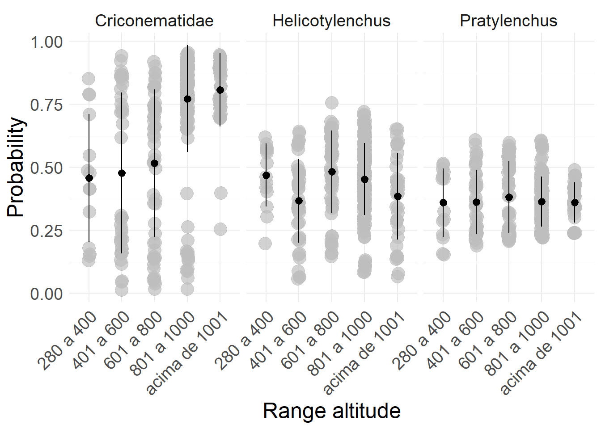
Plotting
helic_predicted$genus= replicate(320,"Helicotylenchus")
crico_predicted$genus= replicate(320,"Criconematidae")
praty_predicted$genus= replicate(320,"Pratylenchus")
genus_ordinal = rbind(helic_predicted, praty_predicted, crico_predicted)
genus_ordinal[genus_ordinal$risk_category== "0",c("risk")] <- "Not risk"
genus_ordinal[genus_ordinal$risk_category== "1",c("risk")] <- "Insignificant risk"
genus_ordinal[genus_ordinal$risk_category== "2",c("risk")] <- "Moderate-high risk"By sand
sand_ordinal = genus_ordinal %>%
filter(risk == "Moderate-high risk") %>%
#filter(genus == "Rotylenchulus") %>%
ggplot(aes(sand,prob))+
geom_jitter(alpha = .9, size = 3, color = "grey", width = 0.01, height = 0.001)+
geom_smooth(method = "glm", size = 2, se = F, color = "black")+
# geom_line(data = gg2, aes(silt = x, y = ymin), size = 0.02) +
# geom_line(data = gg2, aes(silt = x, y = ymax), size = 0.02)+
facet_wrap(~genus, nrow = 3)+
theme_minimal()+
labs(x = "Sand",
y = "")+
theme(text = element_text(size = 18))
#ggsave("probability_ordinal_sand.png", dpi = 600, width = 12, height = 6, bg = "white")By clay
clay_ordinal = genus_ordinal %>%
filter(risk == "Moderate-high risk") %>%
ggplot(aes(clay,prob))+
geom_jitter(alpha = .9, size = 3, color = "gray", width = 0.01, height = 0.001)+
geom_smooth(method = "glm", size = 2, se = F,color = "black")+
# geom_line(data = gg2, aes(silt = x, y = ymin), size = 0.02) +
# geom_line(data = gg2, aes(silt = x, y = ymax), size = 0.02)+
facet_wrap(~genus, nrow = 3)+
theme_minimal()+
labs(x = "Clay",
y = "Probability")+
theme(text = element_text(size = 18))
#ggsave("probability_ordinal_clay.png", dpi = 600, width = 12, height = 6, bg = "white")By pH
ph_ordinal = genus_ordinal %>%
filter(risk == "Moderate-high risk") %>%
ggplot(aes(ph,prob))+
geom_jitter(alpha = .9, size = 3, color = "gray", width = 0.01, height = 0.001)+
geom_smooth(method = "glm", size = 2, se = F, color = "black")+
facet_wrap(~genus, nrow = 3)+
theme_minimal()+
labs(x = "pH",
y = "")+
theme(text = element_text(size = 18))
#ggsave("probability_ordinal_ph.png", dpi = 600, width = 12, height = 6, bg = "white")Joining
(clay_ordinal|sand_ordinal|ph_ordinal)
ggsave("ordinal_genus.png", dpi = 600, bg = "white",height = 6, width = 12)